| Ｒｅ：ゼロから始める異世界生活 7<Ｒｅ：ゼロから始める異世界生活> (MF文庫J) | |
| 長月 達平 | |
| (2015) | |
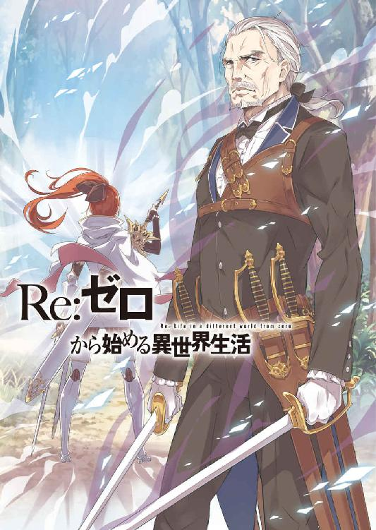
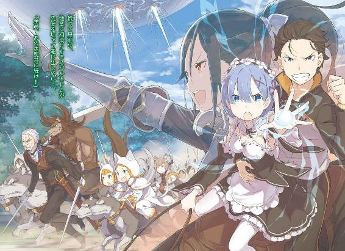
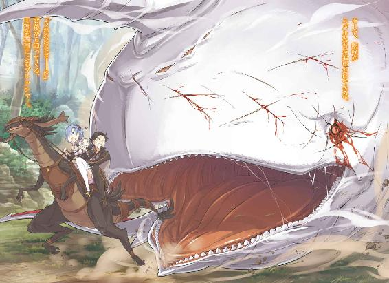
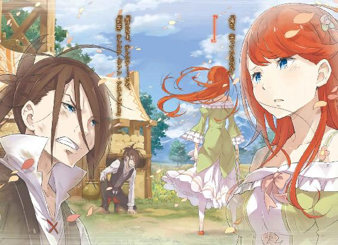
Ｒｅ：ゼロから始める異世界生活７
長月達平

本作品の全部または一部を無断で複製、転載、配信、送信したり、ホームページ上に転載することを禁止します。また、本作品の内容を無断で改変、改ざん等を行うことも禁止します。
本作品購入時にご承諾いただいた規約により、有償・無償にかかわらず本作品を第三者に譲渡することはできません。
本作品を示すサムネイルなどのイメージ画像は、再ダウンロード時に予告なく変更される場合があります。
本作品は縦書きでレイアウトされています。
また、ご覧になるリーディングシステムにより、表示の差が認められることがあります。
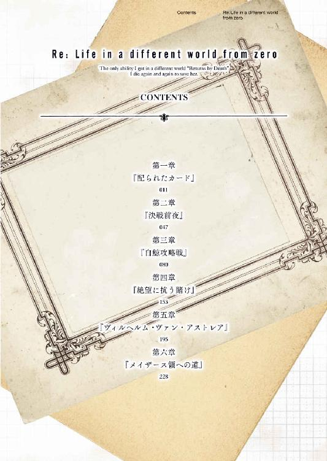
第一章 『配られたカード』
１
──人生というものは、配られたカードで勝負するしかない。
それが生まれであれ、容姿であれ、才能であれ、人徳であれ、培った技術であれ、全ての意味はひっくるめて同じだ。
そのいずれも自分には欠けていると、ナツキ・スバルははっきり自覚している。
何かの間違いでレムだけはスバルを全肯定してくれているが、彼女の肯定するナツキ・スバルの理想像に、自分が遠く及ばないことは百も承知だ。
理想の中にいるナツキ・スバルと比較して、この場にいるスバルの手持ちのカードの枚数は少なく、その質も見劣りするものばかり──。
だが、一度勝負の場面に立てば、そんな泣き言は誰も聞いてなどくれない。
誰しも、配られたカードで勝負に挑むしかないのだ。
あとはカードの切り方と、タイミングと、ハッタリのかまし方があるだけだ。
「──白鯨」
スバルの持つカードの中で、最大の効果を発揮するだろう手札が切られた。
開示されたその内容に、同席する面々の顔色がそれぞれ変わる。
──場所は王都貴族街、カルステン公爵別邸の応接間だ。
会談の参加者はスバルを除き五名──屋敷の主であるクルシュ・カルステンと、彼女の従者であるフェリスとヴィルヘルムの二人。さらにスバル側のアドバイザーとして、王都でも有数の実業家であるラッセル・フェロー。
そして、
「────」
勇気を奮い立たせるスバルの袖に触れて、際限ない力を与えてくれるレムだけだ。
都合六名が顔を合わせる会談は、始まって早々に最大の佳境を迎えている。
会談の目的であり、焦点はエミリア陣営とクルシュ陣営の対等な同盟だ。魔女教の脅威に対抗するため、他陣営の協力を要するエミリア陣営に対し、クルシュ陣営は慎重な姿勢で待ちに徹する。──その均衡を崩す切り札が、前述の『白鯨』の一言だった。
クルシュが興味深げに目を細め、フェリスが憂いを込めた瞳で主を見る。商人肌のラッセルは眉間に皺を寄せ、ヴィルヘルムは──、
「──っ!?」
一瞬、暗く濃厚な剣気が室内を席巻し、スバルは思わず息を呑む。
内臓を剣先で掻き回されるような違和感に、顔を上げたスバルは剣気の発生源──深々と吐息し、小さく首を振る白髪の老人を見た。
「......大変、失礼をいたしました。私もまだまだ未熟ですな」
片目をつむったまま、ヴィルヘルムは表情を変えずに謝罪する。
部屋の隅々まで余さず剣気で撫でた老剣士は、恥を覚えたように腰の剣に触れた。
「話の腰を折り、申し訳ありません。席を外せとおっしゃるならそういたします」
「いや、卿は残れ。意見を聞きたい」
ヴィルヘルムの中座を、クルシュが自ら引き止める。それから彼女はスバルに「構わないな？」と目を向け、スバルも同意見だと頷き返した。
「それで？ 白鯨とはまたいささか唐突な単語が飛び出したな。卿の語る白鯨とは、『霧の魔獣』こと三大魔獣の一角のことと考えていいのか？」
「ああ。霧をばら撒きながら空を泳ぐ化け物──その白鯨だ。俺はそいつの次の出現場所と時間、それを知ってる。その情報を、同盟の取引材料として提示したい」
食いついてくるか、とスバルはクルシュの反応に神経を尖らせる。
クルシュは顎に手をやり、熟考の構えだ。そして彼女の判断が下される前に、
「失礼。少々、お聞きしてもよろしいですか？」
と、手を挙げてラッセルが質問の許可を求めてきた。
「いいぜ、なんでも聞いてくれ」
「では、まず第一に確認しなければならない話ですが......ナツキ殿は白鯨の出現を事前に知ることができる、ということの価値を正しく把握しておいでですか？」
「......白鯨の被害に巻き込まれる人の数が減らせる。行商人とか荷運びの竜車も運行計画を見直せるだろうし、人的被害がかなり改善できるもんだと思ってるけど」
「ええ、その通り。──ですが、それではまだ五十点です」
やや気後れしたスバルの答えに、ラッセルの採点はかなり辛い。
「『霧の魔獣』により、これまでどれだけの血が流されてきたかご存知ですか？ 運悪く白鯨の霧に呑まれ、消息を絶った隊商！ 白鯨討伐のために編成され、志半ばで壊走した王国騎士団！ 数十年前までは村や町の付近に出現し、住民丸ごと呑み下され、事実が明るみにならないことも珍しくなかった。白鯨はただ大きいだけの魔獣ではないのです」
白鯨の脅威を語るラッセルの言葉には、行き過ぎなほどの熱がある。それは負の感情を他者と分かち合いたい、後ろ向きな克己心の表れだとスバルにはわかる。
あまりに強大な『敵』を前にしたとき、人はその『敵』の強大さを褒め称えるような態度を取ることで、自身の脆弱な心を守ろうとさえするのだ。
「かような魔獣、出会わないことが肝要なのです。多くの商人や旅人が、行く手に霧がかかることを何より恐れる。白鯨は災厄の象徴であり、霧は凶兆そのものなのです。その出現を先見することができるなら、万金以上の意味が、価値がある！ ですが......」
拳を固め、それまで力説していたラッセルがふいに冷めた目でスバルを見下ろす。
「その価値も、情報が信頼できてこそ。ナツキ殿はいったい、どうやってそれを証明されるのです？ それができなければ、情報はただの空事でしかありません」
「おおよそ、私の言いたいこともラッセル・フェローの繰り返しになる。卿の発言の根拠を聞かせてもらいたいところだな」
薄く微笑みながら、クルシュもスバルに情報の根拠を問う。
情報の真偽──その問いかけに、スバルは背中に冷や汗が伝うのを感じていた。
だが、表情に不安は出さない。不敵な笑みを浮かべたまま相対し、弱気がこぼれ出さないように堪えながら、交渉のテーブルに乗りかける彼女らに次なる手札を切る。
入念に、前もって何度もシミュレートし、準備していた通りに。
「俺が白鯨の出現を事前に知ることができるのは、こいつが理由だ！」
言い切り、懐から取り出したそれをテーブルの上に叩きつけるように差し出す。
テーブルの上に差し出されたスバルの『根拠』──それを目の当たりにし、全員の表情がかすかに強張ったかと思うと、直後に困惑の色が浮かぶ。
「ナツキ・スバル」
「ああ」
静かにこちらの名を呼ぶクルシュに、スバルは怖じることなく胸を張った。
そんなふてぶてしいまでのスバルの態度には言及せず、クルシュはテーブルの真ん中に置かれた『根拠』を指差して、
「これはいったい、なんだ？」
と、白いメタリックなボディが鮮やかに光り輝くオーバーテクノロジー。
──携帯電話に目を釘付けにしながら、スバルに首を傾げたのだった。
２
スバルが白鯨の出現時間を正確に知ることができたのは、まさしくいくつもの偶然が重なり合った運命の悪戯によるものだった。
決定的な瞬間は、三回目のループ──白鯨と直接遭遇した霧の夜だ。
暗い竜車の御者台で、スバルは地図を確認するための光源として、手荷物から取り出した携帯電話を起動していた。
「あのとき、あの直前だ」
スバルが最初に白鯨を目撃したのは、隣を走っていた竜車の消失を確かめようと、携帯電話の光を用いて闇に目を凝らしたときだった。
──闇の中、巨大な眼と目が合った衝撃は今も忘れ難い。
直後、魔獣の咆哮と最初の一撃にスバルたちの竜車は粉微塵に吹き飛んだ。だが、レムに首根っこを掴まれて宙を舞う中、コマ送りとなった世界は目に焼き付いている。
その連続写真めいた世界の映像の中に、スバルははっきりと見たのだ。
衝撃の瞬間に手を離れ、くるくると飛んでいく携帯電話──こちらを向いた光る画面に、『十五時十三分』と表示されていたのを。
異世界召喚の時点で、携帯電話の時計としての機能は意味をなさなくなった。だが、確定した未来に至る指標としてなら、この世界のどんな道具よりも正確。
そして何より、携帯電話には他の道具では代替できない役割がある。
「こいつがなんなのかわからなくても無理ないさ。これは俺の地元で出土した、いわゆる『ミーティア』ってやつでな。これが俺の発言の根拠になってくれる」
──出所不明の携帯電話そのものが、交渉の有用な武器になり得ることだ。
「......触ってもよろしいですか？」
唾を呑み、最初に携帯電話に手を伸ばしたのはラッセルだった。スバルが頷いて許可を出すと、彼は恐る恐る携帯電話を手に取り、感触を確かめる。
「ずいぶんと、不思議な触り心地がしますね。金属のようですが、温かみもある......。表面は滑らかで、柔らかいようにも......ここは、開く？」
折り畳み式のガラパゴス携帯を開き、溢れ出す画面の光にラッセルが驚いた。
画面に表示される待ち受けは、会談前にオーソドックスな時計盤に切り替えてある。適当に操作しても、出てくるのは登録数の少ない電話帳ぐらいのものだろう。
「光って、絵が切り替わる......いえ、しかし内容は判別できませんね。見たこともない文字が、いや、絵......でしょうか？」
ちかちかと、時計の秒針が動くのが表示されている画面だ。だが、時計の概念が大きく異なるこの世界の人間は、表示される時計盤の意味が理解できない。時刻を示す数字も同様で、アラビア数字は子どもの落書きに見えるのが関の山だろう。
気持ちはわかる。同じ感慨を日々、スバルも覚えているのだから。
「特別な文字だし、誰にも読めないと思うぜ？」
「しかし、卿には使いこなせる......というわけか？」
「全部の機能が使いこなせてる、ってわけじゃねぇけどな」
クルシュの問いかけに、細心の注意を払いながらスバルは言葉を選んだ。
この交渉を成立させる条件はいくつもあるが、中でも最大の条件が一つだけある。
自身の眼力に絶対の自信を持つクルシュ──彼女に『嘘』を見破らせないこと。
踏んではならない地雷、それを避けるためにスバルは全霊を傾けなくてはならない。
「つまり、卿はこう言うわけだ。──この『ミーティア』が、白鯨の接近を報せる警報石のような役割を果たすのだと」
「その警報石ってのが聞き覚えないけど、そうだと思う」
名前からして、おそらく警報機と似た役割を持つ魔石細工の一種だろう。
「白鯨の接近に際し、それを報せる『ミーティア』か。目利きの方はどうだ？」
「正直なところ、お手上げですね。『ミーティア』に関しては個体差が大きく、同一のものが出土することも稀です。複製法が見つかっている対話鏡が例外で、それすらも量産にはコストが見合わない。少なくとも、この手の『ミーティア』の実存は初耳です」
自分の知識にない道具に、ラッセルは不用意な明言を避ける。現状、ラッセルの立場は善意の第三者、スバルにもクルシュにも肩入れすることはしない。
自然、スバルとクルシュのどちらに与するのが自分の利益になるのか、見極めの最中であるラッセルの目は厳しい。
「そうなると、情報の真偽を確かめる手段は見当たらなくなるな。それでは卿の主張を鵜呑みにすることは難しい。さて、どうする？」
「確かに、困った事態だな。せめて、何か証明する手段がありゃいいんだが」
クルシュの言葉に両手を広げ、スバルはお手上げと言いたげな仕草をしてみせる。
「ふむ。実際に魔獣に近付けて鳴るか試してみるか？ あるいはその『ミーティア』が魔獣に反応する道具だと、そう証明できるものに心当たりがあるか？」
「一つ、間違いを正すぜ」
スバルは普段のクルシュへ意趣返しするように、人差し指を立てて左右に振る。
「この『ミーティア』は魔獣そのものに反応するわけじゃない。そうすると、あちこち生息してる魔獣に節操なしに鳴りまくっちまう。反応するのは、大事な場面でだ」
「──まさか、所有者に対する魔獣の脅威にのみ反応するとでも？」
スバルの指摘にクルシュが反応し、都合の良すぎる機能を一笑に付そうとした。
しかし、そのクルシュに先んじて反応したものがいる。
「──ぁ」
と、小さく納得に近い声を漏らしたのは、スバルの傍らに立つレムだった。
そしてすぐ、レムは自分が交渉に水を差したことを恥じるように顔を伏せる。
「気になる反応をしたな、レム。今の内容に心当たりでもあるのか？」
クルシュの追及に、レムは一瞬だけスバルの横顔に目を走らせた。
懸念と謝意の浮かぶ薄青の瞳に、スバルは安心させるように笑いかける。
「大丈夫。何かあるなら話してくれていいぜ？」
「──はい。スバルくんがそうおっしゃるなら」
顔を上げ、レムはクルシュと向き合いながら、テーブルの上の携帯電話を手で示し、
「詳細は伏せますが、先日、メイザース領内で魔獣が原因の騒ぎがありました。その際、いち早く事態の収拾に動いたのがスバルくんです。滞在して日も浅く、領主であるロズワール様より事情を把握していて、不思議には思っていたのですが......」
「その騒動の前触れに、この『ミーティア』で気付いていたと？」
「何の根拠もなく気付いたとなると、少し都合が良すぎる類の問題でしたので」
恐々と、レムが微かに首を傾けてスバルの方を窺う。
レムなりに、スバルがウルガルムの一件をどう察知したのか疑問に感じていたのだろう。その疑問が、この『ミーティア』によって解消されつつあった。
「────」
一方、その答えを聞いたクルシュの視線がレムへと突き刺さる。双眸から内側へ滑り込む視線は、まるで相手の心を見透かそうとするほど深く鋭い。
時間にすればほんの数秒──だが、ドッと体力が奪われるような時間が過ぎ去り、
「──嘘は、言っていないな」
と、クルシュはレムの発言に対し、一定の理解と信用を示した。
その判定を聞き、スバルは安堵が表情に出ないように苦心しつつ、心中では拳を握りしめてガッツポーズを繰り返す。
この『ミーティア』の機能に関しては、スバルの言葉は出鱈目の大法螺だ。
つまり、全てはハッタリ。
その事実が知られれば交渉は確実に決裂、無礼千万と叩き切られてもおかしくない。
しかし、スバルはこの状況を口先と話題の誘導で誤魔化し切った。
クルシュの質問に対し、スバルは一度たりとも嘘偽りを口にしていない。
携帯は魔獣に反応して手当たり次第に鳴る道具ではないし、メール機能すら稀にしか使わないスバルは携帯を満足に使いこなしてもいない。
最大の難関であった『第三者からの肯定』も、レムの無意識を利用させてもらった。
それが『真実』と異なる内容でも、騙す意図がない発言は『嘘』にはならないのだ。
「それにしても、まるで相手が嘘を言ったかどうかわかるみたいな言い方だな」
「自慢になるが、その通りだ。観察眼といえば聞こえはいいが、実際は我が身に与えられた『風見の加護』の恩恵だな」
「......なんて？」
煮え湯を飲まされた経験から、揶揄するような言い方になったスバルへ思わぬ返答。
以前のループでクルシュが語った『嘘を見抜く能力』を、スバルはあくまで彼女の観察眼の為せる業とばかり考えていたのだが。
「風を見るということは、目には見えないものを判断材料にするということだ。自然、私の目には相手を取り巻く『風』が見える。嘘偽りを口にする者の下には、当然ながらそういう風が吹くものだ。──レムにはそれが一切なかった」
「へ、へぇ、そうなんだぁ。それは知らなかったなぁ。知らなかったなぁ」
「動揺の風が吹いているぞ、ナツキ・スバル。とはいえ、交渉の場で私の『風見の加護』を知らないのは不公平が過ぎるからな」
交渉の佳境で能力を明かすクルシュの人の悪さに、スバルの笑みがひきつる。
相手の言葉の真偽を見抜ける加護など、交渉の場では一種の反則技だ。
前回、スバルを切りつけた言葉の数々、その切れ味の鋭さも道理であった。
「レムの言葉に虚偽の色はない。少なくとも、卿が魔獣の脅威を事前に察する手段を持ち合わせていた、という根拠にはなるだろう」
ただし、今回ばかりはその加護への自信が諸刃の剣だ。
綱渡りするスバルの心境は、まさに肉を切らせて骨を断つといったところだった。
「じゃ、この『ミーティア』については信じてもらえるってことでいいのか？」
「それは早計だ。裏で繋がっていないと知れても身内の擁護に変わりはない。王選の、あるいは王国の未来を左右する判断だ。軽はずみには行えまい」
ここで口説き落とせれば、というスバルの目論見はさすがに流される。
『ミーティア』による白鯨の出現情報、そこに最低限の信用は得たようだが、あくまで笑い飛ばさずに検討してもらうことが可能になった程度の話だ。
その信頼度を引き上げ、この会談を成功に導くには──、
「──その『ミーティア』のお話、ウチも混ぜてもらってええ？」
ふいに割り込んだその声に、応接間を微かな驚きが支配した。
声の主は部屋の中に足を踏み入れると、驚きの視線の中ではんなりと微笑み、
「呼んだ張本人が一番驚いてるやなんて、おかしいやないの、ナツキくん」
目を丸くするスバルに言って、微笑む少女がウェーブがかる自分の髪を指で梳く。
腰まで届く薄紫の髪は綿毛のように柔らかく、おっとりとした顔立ちは自然と他者に安らぎを与える。しかし、微笑む少女の瞳は油断なくこちらを見通しており、決して侮ってはならない雰囲気が彼女を知る者には伝わってくる。
「──アナスタシア・ホーシン」
彼女の存在を理解し、片目をつむるクルシュがその名を呼んだ。
それを受け、名を呼ばれたアナスタシアは「おおきに」と軽妙に応じる。
「なんや呼び出されたから慌ててきたのに、ウチ抜きでお話進めてるやなんてズルいやないの。こんな面白そうな儲け話......ウチも混ぜたって？」
おねだりするように科を作るアナスタシアは、言葉の内容と裏腹に実に愉しげだ。そんな彼女の登場に、スバルは思わずその背後を窺ってしまう。
「ユリウスならこぉへんから、安心してええよ」
「──っ」
すると、意地悪く笑ったアナスタシアに、スバルの内心が見透かされる。
「今、ユリウスは近衛騎士団の団長命令で謹慎中なんよ。ウチに無断で、余所の子においたした罰の真っ最中やね。困った騎士様や」
「謹慎......」
言われて思い出されるのは、同じ内容をラインハルトから伝えられた夜だ。
スバルとの私闘が原因で、ユリウスは謹慎処分を受けている。今回、アナスタシアに同行せず、会談を欠席したのもそのためらしい。
「そうか、そりゃ......うん、不運だったな」
その顔を見ずに済んで、安堵する自分がいることがスバルには情けない。ただ、再会したところで何が言えたものか、その答えも今はまだ出せそうになかった。
「呼び出されたということは、卿を呼んだのはナツキ・スバルか？」
スバルの感傷を余所に、クルシュがアナスタシアに声をかける。アナスタシアは勧められた席に腰を下ろすと、首にかけた狐の襟巻きの毛並みを撫でた。
「正確には、そこのお付きの女の子にやね。ホントなら門前払いするとこやけど......事が『白鯨』に関わる重大事なんて言われたら無下にはでけんもん」
からからとアナスタシアが笑うと、その答えにクルシュがスバルの方を見た。
王選候補者二人が場に揃い、スバルは状況の大きな変化に拳を握る。
──ここから、ここからだ。
必要な全員が一堂に会し、ここからようやくスバルの交渉が始められる。
ただし、
「失礼して、一つお聞きしてもよろしいでしょうか、ナツキ殿」
当然、商売敵を会談に招かれたラッセルは面白くない。
「どうぞ、ラッセルさん」
「この場にアナスタシア様をお呼びした、ナツキ殿の真意をお聞きしたい。王選の候補者であり、王都の商業組合にも発言力を持つホーシン商会の会長でもある彼女が会談に参加すれば、この場での私の立ち位置が不明瞭になります。──まさかとは思いますが」
「天秤にかけるため、とか疑ってみますか？」
ラッセルの懸念にスバルが応じると、途端に応接間の空気が張り詰める。
軽視される形のラッセルはもちろん、クルシュの表情にも険しい色が広がった。
「つまり卿はこう言うのか？ アナスタシア・ホーシンと当家と、どちらが『白鯨』の情報を高く買うか競わせ、その上で同盟相手を選ぶと」
「────」
「だとしたら、それはあまりに浅慮な選択だぞ、ナツキ・スバル」
無言のスバルに覇気を叩きつけ、立ち上がったクルシュがアナスタシアを見下ろす。その視線の鋭さに、アナスタシアは一層楽しげに小首を傾け、
「やぁやなぁ、クルシュさん。そんな目で見られたらゾクゾクするわ。......上に立ってる人間が、下から追い落とされるのに怯える顔つきやんね？」
「良い趣味ではないな。もっとも、己の欲するところを正道とする卿ならばあるいは当然の判断か。──だが、私の在り方も決して揺るぎはしない」
アナスタシアの挑発を真顔で受け流し、クルシュはスバルに向き直る。
「聞いての通りだ、ナツキ・スバル。当家とホーシン商会の間で、情報の奪い合いがあると期待するなら見当違いと言わせてもらう。卿の思惑に乗るつもりは......」
「待った待った、早とちりだって！ 二人とも落ち着いてくれよ」
バッサリと、そのまま会談そのものを打ち切りそうなクルシュを慌てて引き止める。
「早とちり......では、ナツキ殿には候補者二人を値踏みするような意思はなかったと？」
「当たり前じゃん？ 自分の掌で誰かを泳がせられるほど、俺は自分の手のサイズを過信してねぇよ。釈迦の掌なんて恐れ多い。せいぜい、俺の掌じゃ......」
ひらひらと手を振りながら、スバルは隣に立つレムの手を握ってみせる。伝わる体温から勇気が流れ込み、微かな指先の震えが収まった。
「と、まぁこんな感じで誰かの手を握るのが精一杯だな」
「あー、はいはい、ゴチソウサマやね。で、お話の先はどうなるつもりなん？」
「お粗末様と言っときまして、えっとだな......」
握った手をほどくのは、レムの強固な抵抗にあったのでそのまま。スバルは彼女と手を繋いだまま、空いた方の手でテーブルを叩いた。
「白鯨ってカードを切って、王都を代表する商人二人を招いて、こうしてこんな大掛かりな状況を用意したわけだが......その上で、提案したい話があるのさ」
テーブルに触れた指を弾き、スバルはクルシュに獰猛に笑いかける。
強気に、勝ち気に、弱々しいところも及び腰の部分も全部隠して、堂々と。
「聞いてもらえるか？」
「早合点し、卿の発言を遮ったのは私だ。私には聞く義務がある。述べるといい」
吹きつける風を錯覚させるクルシュの威圧が勢いを増す。その上、アナスタシアにまで同じプレッシャーを浴びせられ、スバルは今にも屈してしまいそうだ。
一人ならきっと、今頃は茶化して笑い飛ばして逃げていたに違いない。
「────」
きゅっと、握られた掌に熱い感触がある。
名前を呼ばれたわけでも、価値ある言葉を投げかけられたわけでもない。
ただ純粋に気持ちが伝わってきただけだ。それが嬉しかった。
それだけで、スバルはきっと魔女とだって戦える。
「────」
目をつむり、息を止めて、脳に思考と酸素が巡るのを強く感じる。
──乗ってくる、はずだ。
考えて、考え抜いた。一回、二回、三回と繰り返した世界を何度も回想し、拾い集めた情報を繋ぎ合わせ、白地のキャンバスに描いた予想図がある。
確定では、ない。誰かの口から聞いたわけでもない。しかし、この交渉の最中にもピースは点在していて、おぼろげな絵図は一つの可能性を示唆していた。
それが自分の都合のいい幻想なのか、それとも三回死んだ末に掴んだ奇跡なのか。
──いざ、勝負だ。
「クルシュさん、あんたが」
「────」
「あんたが計画してる『白鯨』の討伐に、俺の情報は絶対に役立つはずだ」
スバルの持つ未来の情報と、クルシュが抱いていた目的。
互いに『白鯨』を討つべき敵と見据えた同士、それこそがスバルが彼女を──クルシュ・カルステンを同盟相手に相応しいと、そう判断した根拠であった。
３
──直後、広間に落ちた沈黙は同席者それぞれに思考の時間を与えた。
クルシュに、アナスタシアに、フェリスに、ヴィルヘルムに、ラッセルに。
各々、今のスバルの発言を受け、その内容を吟味するように瞑目する。
時間にすれば数秒の沈黙は、凄まじいプレッシャーとなってスバルを縛り付けた。
──勝負に出た。打って出た。
ここからはこれまでの流れと違い、展開をシミュレートし切れていない。相手の反応が想像できず、場の動きに即応していくしかない流れだ。
「一つ、考えを聞こう、ナツキ・スバル」
沈黙を破り、最初の一言を放ったのはやはりクルシュだった。
クルシュは組んだ腕を解き、一つだけ立てた指をスバルに向ける。
「その突飛な発想はどこから出てきた？ 何故、当家がそのようなことを計画しているのだと判断する。言い掛かり、では済まされない類の発言だぞ」
抑揚のない声音には動揺も戸惑いも見受けられず、感情が伝わってこない。
為政者としての貫禄に気圧され、スバルは目を泳がせながら息を呑み、
「レム」
「はい」
「ちょっと背中、思いっきり叩いてくれ」
「はい」
言った後で「あ、思いっきりは言いすぎた」と思ったのだが遅い。
凄まじい衝撃と乾いた音が炸裂し、スバルは背を突き抜ける威力で腹から内臓がすっかり落ちたのではないかと錯覚した。
背中の中心に、小さな掌の形に熱を発する感覚がある。その痛みと熱に気を引き締め、今のやり取りを何事かと見守る全員にスバルは頭を下げる。
「見苦しい真似してごめん。ちょっと活を入れてもらったところだ」
「事に挑む前に尻込みする己の気を正す、誰しも心当たりのあることだ。私も新たに事に臨むときは、昔に教わった、掌に『敵』と書いて飲み下し相手を呑むという方法を......」
「クルシュ様、クルシュ様。それ、かなり前にフェリちゃんが適当に教えたおまじないだったんですけど、まだ覚えてらしたんですか？」
小声で過去の悪戯を告白するフェリスに、クルシュが愕然と目を見開いた。
「なに......嘘、だったのか？」
「原典がないだけで、クルシュ様の心の迷いを払う力ににゃっていたとしたら嘘じゃありませんよ。フェリちゃん、クルシュ様のお力になれて嬉しい」
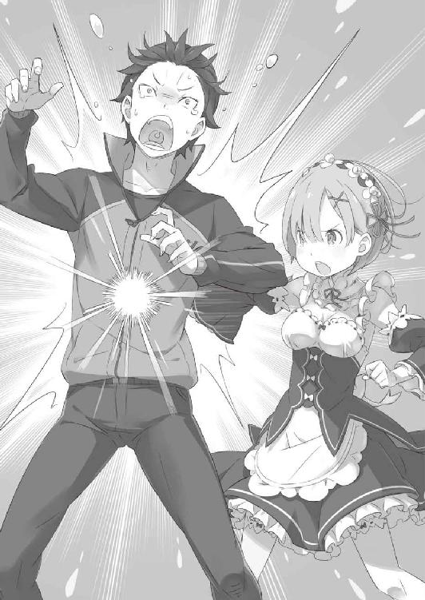
「そうか。私を思ってのことか。それなら許そう」
あっさり口車に乗せられるクルシュに、先ほどの加護の話が急速に胡散臭くなる。おそらく、フェリスは長年の付き合いで加護の抜け道を熟知しているのだろうが。
「それにしても、さっきの交渉が実は低次元なやり取りに思えてくるな......」
「あるあるやね。ウチも大事な商談の前にはおまじないするよ。金銀銅貨を袋に詰めて、耳元でジャラジャラ鳴らしてると勇気が湧いて......なに、その顔」
「ここだけ切り取ると、とても国のてっぺん競い合う人たちの会話じゃねぇなって」
大事の前の小事と割り切り、スバルは彼女らの発言に目をつむる。
アナスタシアはそのスバルの反応に唇を尖らせ、それから長い息を吐く。
「ま、ええわ。息抜きはこの辺にして、さっきのお話、続けてもらってもええ？」
「ああ......気ぃ遣ってもらって悪いな」
四方山話で時間稼ぎ──クルシュとフェリスの主従は素だろうが、アナスタシアの厚意に甘えて、スバルは考えを整理しながら説明を形にしていく。
「この屋敷で何日か過ごしたけど、いくつか引っかかったことがあった。まず、屋敷の出入りの多さだ。ちょっとばかし、人と物の出入りが過剰に多い」
「それは私の王選参加が公にされたためだ。そのことは卿もわかろう」
「昼間の訪問客はそれで納得する。でも、深夜はどうだ？ もう寝間着に着替えてあとは寝るだけ......そんな時間の人の出入りも、会談のためって言い切るか？」
一回目の世界で、クルシュに誘われて晩酌に付き合った夜があった。
寝る前の寝衣に着替えたクルシュはひどく女性的で、スバルは目のやり場にも会話の引き出しにも困った覚えがある。だが、覚えているのはそれだけではない。
酒杯を傾けるクルシュと一緒に見下ろした庭園、そこを行き交う人々の気配だ。
「クルシュさんの性格的に、酒飲んで人を出迎えるなんて考えられねぇ。なら、クルシュさんのほろ酔い後に屋敷に出入りする人たちは？ 会談以外の目的があるんだ」
「────」
スバルが並べる推論に、今度はクルシュも口を挟もうとしない。
ひとまず、会話の主導権を握ったスバルは「次だ」と手を叩きながら、
「他に気になったのが、王都のここんとこの金物相場。顔見知りの商人の話だと、このところ鉄製品の価値が高騰してるって話だ。つまり、武器とか防具の類だな」
それは一回目の世界で、二回目の世界で、三回目の世界で知り得た情報の断片だ。
「それまで二束三文だった武具を大量に集めてるところがある。馴染みの店や、行商人からそれがクルシュさんのところだってのも聞いてるぜ」
戦争の準備でもしているのか、と笑ったのは同行した行商人の誰かだったか。
「市場に影響するぐらいだ。結構な勢いで集めてたみたいだな。そんなに急いで、自分の領地の外で武器を集める。何かあると思うのが人情だろ？」
「それだけで当家と『白鯨』を結ぶのは突飛すぎるな。白鯨の『は』の字も出てきていない。当家が武具を集めているのは事実だが、そのことと白鯨討伐は繋がるまい？ 純粋に戦力を集め、王選の成り行きを無視して武力で王城を乗っ取る気かもしれんぞ」
「そんな暴挙に出る理由がねぇし、そんな人間じゃないことぐらい俺だってわかる」
誠実、高潔、それらの単語を具現化したようなクルシュほど、その人柄に信用が置ける人物はそうはいまい。
「それにしても、少しばかり驚かされたな」
そのスバルの内心を知るべくもないクルシュは、言葉通りに感嘆の息を吐く。腕を組む彼女は首を傾げ、スバルを上から下まで眺めながら、
「てっきり、卿が日中に都へ出ているのは、手持ち無沙汰を誤魔化す手慰みだとばかり思っていたが......見る目がないのは私の方だったようだ」
「んんっ！ ああ、そうなんだよ。俺もほら、遊び呆けてたのとは違うわけですよ」
感心してくれるクルシュに、チクチクと罪悪感が刺激される。
実際、クルシュの見立ては非常に正しい。彼女の見てきたスバルの人間性は、疑いようもなく腐っていた。今はそれを、後付けで誤魔化しているだけなのだから。
「とにかく、武器を集めてるってわかったとき、最初に考えたのが戦争準備だ。問題は何と戦おうとしてたかって部分だが......そこは、さる商人が口を滑らせてくれた」
「さる、商人」
「念のために言っておきますが、私ではありません。誤解されませぬよう」
ちらと自分を見るクルシュに、ラッセルが先んじて疑念を否定する。その答えに嘘の気配を感じなかったらしく、クルシュは渋々ながら納得した様子だ。
さすがにクルシュの勘は鋭い。──だが、その疑念は正解だが不正解なのだ。
スバルに口を滑らせた商人は、クルシュが疑った通りラッセルで合っている。ただしそれはここにいるラッセルではなく、一つ前のループのラッセルだ。
『此度のクルシュ様の狙いが成るのであれば、それは我々にとっても喜ばしいことです』
クルシュとの会談が決裂し、去り際にラッセルが言い残した言葉だ。
その言葉の真意が、スバルの中ではずっとしこりとなって残り続けていた。
クルシュが王座に就くと見越した発言にしては、会談が決裂した風であることが腑に落ちない。ならば、他にクルシュとラッセルで利害が一致するとしたら──。
「王選の下馬評じゃ、ほぼ独走態勢にあるクルシュさんなわけだが、どうも商人連中からの受けは一般人からのものほど優勢ってわけじゃないみたいだな」
「否定はしない。金はあるところから引っ張るのが一番理に適っている。私の領地での商売に高い税率が掛けられているのは認めるところだ。もっとも、その分、治安の保障で還元しているつもりではあるが......傍目にその恩恵が伝わり難いことは承知している」
「実際、クルシュさんとこの領地でその恩恵を受けてる連中と違って、評判が届き辛い人たちは上っ面の情報でクルシュさんの人となりを判断するしかねぇしな」
クルシュが為政者として、立派に自らの領地を治めているのは事実だろう。
だが、その手腕を実際に確かめることができる立場の人間以外は、クルシュの評価を上辺だけ聞きかじった情報で決めるしかない。
エミリアがただ、ハーフエルフであるという事実だけで疎まれるように。
クルシュもまた、その苛烈な生き方の負の側面だけを見る人間には疎まれるのだ。
「そこで俺はこう考えた。クルシュさんは、そういう人を上っ面だけで判断するような連中はいけ好かないはずだが、そんな連中でも味方につけなきゃならないのが王選だ。そうなると、そんな連中の評価を好転させるにはどうすりゃいいか......」
「人の上っ面で良い悪いを判断するんやったら......その上っ面、良い話で塗り替えたったらええってことやんな」
スバルの言葉の最後を引き取り、アナスタシアが結論を述べる。
「まぁ、都合のええ話やけどね。事はそないに簡単やないし、そもそも見込み違いの可能性も高い。だぁいぶ、自分に都合よく話を曲解してへん？」
「否定は、できねぇ。クルシュさんが武器集めしてんのと、何かしらでかいことやって商人連中を味方にしようとしてるってのは間違いない。けど、それが白鯨と結び付くかどうかってのは希望的観測が大きい。近いうちに白鯨が現れるって、俺がそう知ってるから関連付けちまってるだけなのかもしれねぇ」
だが、と言葉を継いでスバルはクルシュを真っ直ぐに見る。
クルシュの表情には感情が浮かばず、その内心を透かし見ることはできない。しかし、否定の言葉は出てこない。
ならば、挑む価値は十分にある。
「改めて言う。エミリアとクルシュの同盟に際して、エミリア陣営から差し出せるのはエリオール大森林の魔鉱石採掘権の割譲と、白鯨出現の時間と場所の情報。つまり、長いこと世界を脅かしてきた魔獣討伐──その栄誉だ！」
「────」
「俺の言葉が的外れで、意味がさっぱりってんなら切り捨ててくれ。もし違ってんなら、純粋に白鯨の情報だけを取引き材料として判断してもらって構わない」
あるいはその情報だけでも、この場にいる商人二人ならうまく利益に繋げ、情報をもたらされた商人勢からのクルシュ評価も高まるはずだ。それだけでも価値はある。
「けど、もしもあんたの狙いと俺の望みがかち合うなら──」
持ち上げた右手を前に差し出し、スバルはクルシュに求める。
この手を取り、スバルが見てきた未来の価値を証明し、壁を取り払うことを。
「白鯨を、討伐しよう。──ひと狩りいこうぜ」
あの異形の存在を、悪夢めいた強大な魔獣を。
行商人たちにとって災いの象徴を、スバルにとって忌まわしき記憶へ繋がる悪意を。
霧の魔獣の討伐を、スバルはクルシュに提案する。
「一つ、問い質そう」
差し出されたスバルの手を見下ろし、クルシュはこちらに向けて指を一つ立てた。
その問いかけが、クルシュが用意する最後の関門であるとスバルは直感する。
「卿が──白鯨の出現時間と場所を知っている、これは確実なのだな？」
「──ああ、本当だ」
呑んだ息に言葉を添えて、スバルはクルシュの問いかけに答えを差し出す。
最後の質問、それは間違いだ。──それじゃ、スバルに嘘はつかせられない。
「白鯨の出る時間と場所は俺が保証する。命、懸けてもいいぜ」
文字通り、自分の命と他人の命を支払い続けて得た情報だ。
その確実性に疑うところはないし、ここは引け目を見せるべき場面でもない。
「......いくらか疑問の余地はあるが、こちらの思惑を見抜いたのは見事だった」
小さく吐息し、クルシュが観念したように目をつむってそう答える。
その答えに最初、スバルはどんな意味があるのか掴みかねた。が、その言葉がゆっくりと脳に沁み込み、形を作るにつれて意味が明快になる。
「それじゃ......」
「疑問はある。疑念もある。腑に落ちない点も多く、即座に頷くのは難しい。だが」
クルシュは指を立てていた手を下ろすと、そのままスバルの手に被せる。差し出していた手が、しっかりとクルシュの白く細い指と重なった。
「この状況を作った卿の意気と、この目を信じることにしよう」
──交渉は、成立だ。
その二人の交わす握手を見て、盛大に肩の力を抜いた者が一人──ラッセルだ。彼は大袈裟に息をつくと、やれやれとばかりに首を振った。
「何度かひやひやさせられましたが、無事に成立したようで何よりです。ナツキ殿、会談の前のお約束は確かに」
「ああ、貧乏くじばっかで悪かったな。助かったよ、ラッセルさん。約束通り、白鯨の討伐が済んだらケータイはあんたに譲るさ」
人の悪い笑みを浮かべるラッセルに、スバルも悪い笑顔で応じる。そのやり取りに気付いて、クルシュが呆れた顔で吐息をこぼした。
「やはり、通じていたか」
「ここに呼んだの俺だぜ？ そりゃちょっとは助太刀のお願いはしてたさ」
「悪く思わないでいただきたいところです。実際、私どもとしては不自然に肩入れするような真似は避けたつもりですよ。あくまで、同盟成立後を見越して、です」
しれっと答えるスバルとラッセルに、クルシュは無言で肩をすくめる。
スバルがラッセルと連絡を取ったのは、レムとの情報交換を終えてすぐだ。三回目の世界同様、クルシュとの話し合いが決裂したラッセルを捕まえて、この会談の内容と助太刀を持ち掛け、携帯電話の譲渡を条件に協力を取り付けたのだ。
もっとも、携帯電話の機能に関してはラッセルをも欺いている形だが、オーバーテクノロジーである電子機器を入手するチャンス、ということで納得してもらいたい。
「さて、そうなると疑問の余地が残るのは卿の立場だな」
スバルとラッセルの繋がりに、クルシュが今度はアナスタシアへと目を向ける。その疑いの眼差しを受け、アナスタシアは「なんやの？」と首を傾げる。
「納得いってなさそうな顔やけど、どないしたん？」
「ナツキ・スバルとラッセル・フェローとの間の利害関係は理解した。だが、そうすると卿の立ち位置が不鮮明だ。いったい、卿は何のためにここに呼び出された？」
「まぁ、一つは説得力の水増しやろね」
襟巻きを抱き寄せ、アナスタシアは可愛らしく「んー」と唇を尖らせると、
「王選の候補者が二人と、王都有数の商売人が一人。同盟交渉の場にこれだけ有力者が集まれば、口から出た言葉はその場限り......ってわけにはいかんからね。せやから、ウチがここにいるだけで、ナツキくんの言葉には重みと力が乗っかるやろ？」
「ま、まぁ、そんな感じの狙いがなくもなかったりしなくもない」
曖昧な答弁で明言を避けながら、スバルの内心は図星を指されて冷や汗塗れだ。
実際、アナスタシアを呼んだ経緯にはそのあたりの理由も含まれている。
クルシュに不用意な発言をさせないためではない。スバルが不用意に根拠のない発言をするはずがないと、クルシュに思わせることが目的だったのだ。
これだけ関係者を集めたのだから、根拠も確度もある話をしていると思わせる。
それがどこまで効果を発揮したか、クルシュとアナスタシアの勘働きの良さを考慮すると、確かめるのが怖いので聞いたりしないが。
「一つ、ならば別の理由もあるのだな。それは？」
「そっちはもっと簡単やん。──ウチ、商人やから」
口元に手を当てて笑い、アナスタシアは弾む足取りで前に出る。
それから、いまだ握手を交わすスバルとクルシュの手に自分の両手をそっと被せた。
「白鯨の討伐、大いに期待するわ。ウチら商人にとって、白鯨のおるおらんは死活問題やし、討ってくれるゆうなら大助かりや。ついでに準備その他諸々、ホーシン商会をご贔屓いただけるんやったら言うことなしやし？」
「お待ちください。その取引きに関しては、王都の商業組合が優先されるはずです。アナスタシア様も、割り込まれるのならば筋を弁えていただきたい」
商魂丸出しなアナスタシアに割って入り、物申したのはラッセルだ。
商人同士が視線で火花を散らせる中、二人の発言を耳にしたクルシュが何かを察した顔でスバルを見る。
「待て。卿らの話を聞くと、かなり時間の猶予が限られているようだが？」
「ウチも肝心なとこは聞いてないよ。たぁだ、話の進め方がそんな感じやったから。実際のとこ、結構切羽詰まってるのと違う？」
クルシュとアナスタシアの両者に見つめられて、スバルは乾いた唇を湿らせる。
同盟は締結、もはや情報を隠し立てする必要もない。
「──ああ、そうだ。『ミーティア』によると、白鯨が出るのは今から約三十時間後。場所は......フリューゲルの大樹、その周辺だ」
「三十時間......！」
「フリューゲルの大樹──」
時間の猶予のなさにクルシュが歯噛みし、アナスタシアがその地名に首をひねる。
そう、あとは時間との勝負なのだ。
「三十時間以内にリーファウス平原に討伐隊を展開し、出現した直後の白鯨を総攻撃にて仕留めなくてはならない。そのために......」
素早く状況を呑み込んだクルシュが振り返ると、主君に頷くのはヴィルヘルムだ。彼の老剣士はここまでの沈黙を破り捨てると、
「まず討伐隊の編成ですが、これはすでに数日前より滞りなく。そもそもこの王都での滞在が、白鯨の出現時期に合わせての準備です。王選の開始と時機が重なったことは、クルシュ様の天運ならではと思いますが」
「話が早いな！ でも、白鯨の出る時期ってパターンがあるのか？」
渡りに船と喜びつつ、ヴィルヘルムの答えに驚きも感じる。
スバルの聞いた話では、白鯨の出現は場所も時期も完全にランダムで、神出鬼没であることが『霧の魔獣』の最大の脅威とされていたはずだったのだが。
「白鯨の出没する時期と場所、それを突き止めたのはヴィル爺の執念の賜物にゃの。大征伐から十四年、そればっかり考えて生きてきたんだからネ」
スバルの疑問に答えたのは、ヴィルヘルムの隣に進み出たフェリスだ。彼は猫耳を震わせながら、肩幅の広い老人の横顔をそっと覗き込み、
「討伐隊の錬度と士気はヴィル爺のおかげで心配にゃいけど、物資の準備不足は否めにゃいかなーって。クルシュ様が軍勢率いて王都にきたにゃんてことになると、色んなところが大騒ぎになっちゃうからこそこそ集まってもらったしネ」
「確かに、いまだ武器や道具の準備は万全とは言えませんが......そのために、アナスタシア様とラッセル殿が同席しておいでなのでしょう、スバル殿」
フェリスの指摘を受け、ヴィルヘルムが鋭い瞳をスバルへ向けてくる。
「まぁ、こういうこともあろうかと......って、人生で一度は言いたいじゃん？」
頭を掻きながら、ヴィルヘルムの視線にスバルは用意していた答えを返す。
そのスバルの返事を受けて、件の商人の一人であるラッセルが窓の外を手で示した。
「すでに組合には動くよう呼びかけ、準備を進めております。明日の昼過ぎまでには、王都中の商人から必要なものを掻き集めてみせましょう」
「ホーシン商会も同じく、やね。組合に所属してない、隙間狙いの商人連中との商いは任せてもらおか。その他にも、色々と期待しててええよ」
ラッセルの言葉を引き継ぎ、アナスタシアも実に力強い返事をくれる。
それからアナスタシアは、腕を組んで感心した顔のクルシュへと笑顔を向けた。
「商機を見逃さんのが商人の鉄則、これがウチがここにきた理由やよ。それにそれに、物もそうやけど売るならやっぱり恩が一番！ 形ないし、損ないし、在庫にならんし──何より、値札が付いてへんからね」
「今は味方だからいいけど、改めて聞くとマジおっかねぇな、この商売人！」
頬を染めるアナスタシアは可憐だが、その根底にあるのが守銭奴根性なのだから空恐ろしい。恩にいくらの値段を付けさせられるかわかったものではない。
上機嫌なアナスタシアを横目に、クルシュが納得した顔で頷いた。
「交渉以前に道は整えていた、か。なるほど。この場面において、先見と覚悟が足りていなかったのは私の方というわけだ。感服したぞ、ナツキ・スバル」
「予習復習がうまく嵌まったってだけだよ。ぶっちゃけ心底ホッとしてるぜ、俺」
事前にこれだけ策謀を巡らせて、それでも交渉の成立は紙一重の綱渡りだ。イレギュラーな要素が味方してくれたことも、反省点として覚えておかねば。それでも、
「なんとか、王都に残った面目は保てただろ、レム」
「──はい。さすが、スバルくんは素敵です」
繋いだままの手を持ち上げ、この交渉の影の功労者であるレムと達成感を分かち合う。
──きっと、この交渉の結実を誰より喜んでくれているのはレムだろう。
元々、この交渉はレムに任されていた役目だ。課せられた使命をスバルにも打ち明けられず、日々のクルシュとの話し合いに精神を削られていったのは想像に容易い。
腐り続けるスバルと、エミリア陣営の今後──その重さに苦しんでいたはずだ。
それでも支え続けてくれた彼女の想いに、少しは報いることができただろうか。
それができていれば、今はそれだけがスバルには嬉しかった。
「──スバル殿」
ふと、レムと喜びを交換するスバルに声がかけられた。
見れば、真剣な眼差しでスバルを見るのは背筋を正したヴィルヘルムだ。老剣士はスバルと目が合うと、その皺の浮かぶ精悍な顔に万感の想いをみなぎらせ、
「感謝を──」
そう短く告げて、その場に膝を突いて礼の形を取った。
その突然の振る舞いにスバルは驚かされる。
だが、驚いた反応をしたのはスバルだけだ。他の面々はそれぞれ、ヴィルヘルムの行いに一定の理解を示した顔をしていた。関係者であるクルシュとフェリスはもちろん、部外者であるレムやアナスタシアですら、だ。
「我が主君、クルシュ・カルステン公爵へ捧げるものと同等の感謝をあなたに。この至らぬ我が身に、仇討ちの機会を与えてくださったことを感謝いたします」
「えっと、その......え？」
「賢明なスバル殿はすでに見抜いておいででしょうが、改めて──」
ヴィルヘルムはスバルの戸惑いを無視し、腰から剣を鞘ごと外す。
そのまま彼は剣を床に置き、その上に手を添える最敬礼を以て最大の敬意を示した。
そして、名乗る。
「以前、名乗ったトリアスは昔の家名です。本当の家名はアストレア。先代の剣聖、テレシア・ヴァン・アストレアを妻に娶り、剣聖の家系の末席を汚した身──それが私、ヴィルヘルム・ヴァン・アストレアです」
息を継ぎ、ヴィルヘルムはその双眸に覇気で満ちた輝きを宿し、
「妻を奪った憎き魔獣を討つ機を、この老体に与えてくださる温情に感謝を」
深々と頭を下げ、ヴィルヘルムは強く心に訴えかける感情を真正面からぶつける。
同席した全員が聞き入り、スバルに答えを期待する。その期待にスバルは息を呑み、
「あ、ああ......も、もちろん知ってたけど。当然、それ込みでクルシュさんが白鯨討伐に乗っかってくるって思ってたわけで！」
「ナツキ・スバル」
微妙にたじろぎながら答えるスバルに、やおらクルシュが割り込んだ。
琥珀色の瞳が、泳ぐスバルの目を覗き込み、小さくため息まじりに、
「嘘の風が吹いているぞ。卿から」
誤魔化し切れないスバルの嘘を暴いて、『風見の加護』の力を証明したのだった。
第二章 『決戦前夜』
１
──白鯨を討つ。
交渉が終わり、討伐の二文字が具体性を帯びれば、その後の関係者の動きは早い。
アナスタシアとラッセルの商人二人は宣言通り、ありったけの武器や道具を掻き集めに王都を奔走し、クルシュもかねてから準備していた討伐隊を招集する。それに加えて人や物の運搬手段である竜車の確保など、仕事は枚挙に暇がない。
「これで竜車が買い占められるから、屋敷に戻る足の確保に手こずったわけだ」
屋敷の内外を人と物が激しく出入りするのを見ながら、スバルはループ中の自分と無関係に発生していた出来事の裏側を把握する。
スバルが身勝手にしていた周回でも、クルシュやヴィルヘルムは白鯨と戦うための準備を進めていたのだ。今さらそれに気付き、ジッとしていられない気分になる。
都合三回も迷惑をかけてきたのだ。何か手伝えることはないだろうか。
「俺にも何かやれることが......」
「え～、スバルきゅんにできることにゃんてなんにもなくにゃい？」
「あればって、おい！」
慌ただしい雰囲気に呑まれて、手伝いを申し出ようとした出鼻が挫かれる。先んじてスバルの意思をへし折ったのは、口に手を当てて欠伸を隠すフェリスだった。
当事者なのに真剣味に欠けたフェリスに、スバルは目尻をつり上げる。
「自分のやる気のなさに人を巻き込むなよ。俺にだってなんか......」
「物資の手配も討伐隊の編成も、どっちもスバルきゅんの領分じゃないでしょ？ 部外者は掻き回してややこしくしちゃうだけなんだから、大人しくしてること」
「そんなわけにいくかよ。俺がやろうって言い出したせいで、みんなこんな夜遅くに動き回ってんだぜ。なのにその俺が」
「はい、そこがマチガイ！」
意気込むスバルの鼻面に指を突き付け、フェリスが鋭い口調で言葉を遮る。強制的に黙らされたスバルが呻くと、フェリスは突き付けた指でこちらの鼻を弾き、
「その自分のせいって考え方、フェリちゃん超好きじゃにゃい。っていうかキラーイ」
「......実際、みんなが徹夜してる切っ掛けは俺にあるだろうが」
その自分が抜け抜けと、ただ黙って結果を待っているなどおかしい。
「──今でこそ王選なんて話になってるけど、昔のクルシュ様は国の方針を変えようなんて別に考えてにゃい、普通の可憐なお姫様だったんだよ」
「は？」
「あ、お姫様っていったらちょっと違うかも？ 可憐な美貌は昔からだけど、クルシュ様ってばその頃からそこらの男なんて目じゃないぐらい凛々しくてお強かったしぃ」
唐突に違う話題を持ち出され、戸惑うスバルを置き去りにフェリスが頬を染める。
脳裏に描く幼いクルシュに腰砕けのまま、フェリスは熱っぽい吐息をこぼし、
「誠実で勇敢で、誰よりも真っ直ぐでお優しいのが素敵で無敵なクルシュ様......でも、そんなクルシュ様を今のクルシュ様にしてくれて、それで王座を目指すぐらいにまで強くしてくれたのは、ある御方が傍にいらっしゃったから」
「何の話してんだよ。それに、ある御方って......」
「──フーリエ・ルグニカ殿下。亡くなられた、この国の第四王子」
話から置き去りにされていたスバルは、そのフェリスの言葉に少しだけ息を呑んだ。
知らない故人の名前への驚き、それも言葉に詰まった理由だが、それだけではない。
「────」
その名前を口にしたフェリスの横顔が儚げで、寂しげな微笑に目を奪われたからだ。
微笑みは郷愁と寂寥感、それと何故かわずかな誇らしさが同居していて、彼の性別がわかっていても、ハッとなるほど美しく見えたから。
「スバルきゅん見てると、フーリエ殿下をちょっとだけ思い出すかも」
「......目つきの悪い人だったのか？」
「んーん、顔は格好よかった。スバルきゅんとは比べ物にならないくらい。ただ、性格は自分勝手で、単純で、底抜けにあけすけで独りよがりで......これ以上は殿下の悪口になっちゃうから言えないけど」
「今のも十分すぎるぐらい悪口だったし、逆説的に俺も傷付いたけど!?」
顔以外が感傷の原因なら、羅列された悪い部分が共通しているということだ。否定できないのが悲しいところだが、フェリスはそのスバルの言葉に首を横に振った。
「フーリエ殿下は確かに困った方だったけど、でも一生懸命な人だったよ。王族らしさってものにいつも悩んでて、色んなこと閃いてはみんなに迷惑かけるの。不器用なのにやる気だけはあるから、大人しくしてってお願いしても絶対聞いてくれにゃくて」
「......そりゃ、扱いづらい人だったんだろうな」
「そりゃもう！ 『皆が懸命なのに、余だけが待ってなどいられるものかー！』ってネ。それこそ、今のスバルきゅんとおんなじ。ただし、殿下は『自分のせい』だなんて絶対に言わなかった。そんにゃこと考える人でも、思いつく人でもなかったけどさ」
思い出を回想し、苦笑するフェリスの言葉の端々にその人物への親愛がある。
本当に大切な人物だったのだろうと、そう考えてスバルは遅すぎる理解に達する。
ルグニカ王国の第四王子ということは、話題に上ったフーリエという人物は王選の切っ掛けになった伝染病で亡くなったはずだ。
そしてその人物が、クルシュが王座に向かう理由になったのだとしたら──、
「そのフーリエ殿下と、クルシュさんは親しかったのか？」
「御歳が近かったから、殿下はよくクルシュ様のお屋敷にいらしてたの。たまたま立ち寄ったなんて毎回言い訳してたけど、隠し事が下手だから本音が見え見えで」
微笑ましい思い出を振り返るフェリスに、スバルもフーリエの淡い想いを悟る。
フェリスとクルシュの関係は、単純な主従とも男女の関係とも異なる。ただ、そこにフーリエという人物を加えた関係は、きっと彼にとって特別なものだったのだ。
三人の関係はきっと、特別、大切なものだったのだろう。
「今のフェリちゃんがあるのは、九割五分はクルシュ様のおかげ。でも、残りの一番大事な五分はフーリエ殿下のおかげ。......それは、絶対」
胸に手を当てて、そっと目を伏せるフェリスの言葉にスバルは妙な感慨を得た。
これまでスバルは勝手に、てっきりフェリスはクルシュ以外の誰にも心を開いていないのではないかと思っていた。治癒術師として命に関わる経験からか、フェリスは時々、ゾッとするほど冷酷な目をすることがある。
だが、フーリエの思い出を語るフェリスには、そんな様子は微塵もない。
どこにでもいる普通の、可憐な少女──風に見える、少年だ。
「でも、それだとそのフーリエって人と同じぐらいの親しみを俺に感じてるってこと？」
「は？ なんでスバルきゅんがフーリエ殿下と同じになるの？ 殺すよ？」
「ゾッとするほど冷酷！」
ドスの利いた声と剣呑な目つきに、スバルはビビりながら後ずさる。その様子にフェリスは咳払いし、「そうじゃなくて......」と言葉を継ぐと、
「今、わざわざ殿下のお話をスバルきゅんにしたのはそういうことじゃなくて......ああもう！ なんでこれでわかんにゃいの、バカ！」
「いくらなんでも理不尽すぎるだろ！ 話があっちゃこっちゃ飛んでわっかんねぇよ！ 結局、お前は俺にどうしてほしいんだよ！」
地団太を踏むフェリスに逆ギレされ、スバルも負けじと大声で言い返す。
「スバルくんとフェリックス様、大声を出してどうしたんです？」
その騒ぎを聞きつけて、客室で荷造りをしていたはずのレムが階下へ降りてきた。スバルは心配そうな顔をするレムに、どう説明したものかと頭を掻く。
「いや、俺にも何か手伝えることはないかって思ったんだけど、フェリスがその邪魔をしてくれやがってさ。おまけに自分でも何を言おうとしたのかわかんなくなってるし」
「スバルきゅんの察しが悪いからでしょー。もう、なんて言おうとしたんだか......スバルきゅんがみんなの仕事を邪魔しようとしてたってところだから......」
「邪魔とか言うな！ 手伝おうとしたんだよ。だって、俺が始めたせいで......」
「それだ！」
スバルの歯切れの悪い言葉を、顔を上げたフェリスが勢いよく遮った。そのまま彼は頭の猫耳を小刻みに震わせ、スバルの胸に指を突きつける。
「スバルきゅんの、その『せい』って言い方がキライ。『せい』じゃなく、『おかげ』。こうしてみんなが夜を徹してるのも、ヴィル爺が白鯨と戦えるのも、みんにゃね」
「俺のおかげ......？」
実感の湧かない言葉にスバルは首を傾げる。ただ、隣にいるレムも、満足げなフェリスと同意見だと言いたげにスバルに微笑んでいる。
「王選に挑むのも、白鯨と戦うのも、ホントはみんなクルシュ様自身のためじゃない。みんなみんな、誰かのため」
押し黙るスバルに代わり、フェリスがなおも唇から言葉を紡ぎ続ける。
「白鯨の討伐はヴィル爺の悲願にゃんだよ。先代の剣聖、ヴィル爺の奥さんが白鯨にやられたとき、ヴィル爺は傍にいられなかったらしくて」
「先代の剣聖......」
「仇討ちのために、ヴィル爺は死に物狂いで白鯨を追いかけた。それこそ、『霧』を掴むみたいに先が見えない中、記録に残った白鯨の出現場所、時期、天候......そのために出奔までして、色んな仮説と条件を検証して、やっと法則性みたいなものを掴んだの」
その執念たるや、どれほどのものだったのだろうか。
霧の魔獣と恐れられ、その存在を誰もが知っていながらも、生態の全貌がまったく明らかになっていない強大な敵──たった一人、その存在を求めて抗い続けたのだ。
「でも、せっかくわかったその話を、誰も聞き入れようとしなかった」
書物や文献に血眼になり、老剣士は復讐心を胸にいくつの夜を越えたのか。
執念実り、やっと見つけた手掛かりさえも、誰を動かす力にも足りず──。
「大征伐の爪痕は王国に根深く残ってる。王座が空位になった時期もヴィル爺に味方しなかった。白鯨と戦う気概も、白鯨に気を向ける余裕も誰にもなくて......支援者を募ることもできなくなって、ヴィル爺の心境はきっと絶望的だったと思う」
仇を討とうと願い、なのに憎むべき相手の足下にすら辿り着くことができない。
その無力感が生み出す絶望をスバルは知っている。
弱さという罪は決して、自分自身を逃がしてはくれないのだから。
「何もかも捨てて、一人で白鯨に挑むことも考えたみたいだネ。勝てないことより、戦えないことの方が恥だと思う。──男って、ホントにバカ。ヴィル爺の奥さんだって、きっとそんなこと望んじゃいないだろうにさ」
「そうですね」
そう、フェリスに同意したのはこれまで黙っていたレムだった。
レムは自分の胸に手を当てながら、そっと薄い青の瞳でスバルを横目に見る。
「愛した人には、レムはずっと元気でいてほしいです。たとえレムがいなくなったとしても、レムのことは笑顔で思い出してほしい」
「......思い出になる話をするのは、早すぎるだろうがよ」
感傷的なレムの言葉に、たまらずスバルは言い返してしまう。伸ばした手でレムの頭をそっと小突き、そのまま当てた掌で優しく撫でる。
レムはそんなスバルの乱暴な感情表現に、愛おしげに目を細めた。
「では、そのヴィルヘルム様に声をおかけになったのが、クルシュ様なのですね」
「クルシュ様は本当にお優しい方だから。絶望して、悲嘆して、誰も見向きもしなくなったような相手にも、手を差し伸べてしまう。大切な誰かのために、何かしようって人のことならなおさらそう。──殿下も、そうするって」
レムの言葉に頷いて、フェリスがどこか遠い瞳をしながら顔を背ける。一度、目を閉じると、それから顔を上げたフェリスは普段の表情で舌を出した。
「はい、変なお話はおしまい。長々と話したけど、つまりスバルきゅんが思い詰める必要とか全然にゃいし！ むしろ、誰もスバルきゅんのために動き回ってるわけじゃにゃいし！ スバルきゅんが思ってるほど、誰もスバルきゅんに興味とかにゃいし！」
「照れ隠しだかなんだかしんないけど傷付くんだけど！」
「大丈夫ですよ。レムはスバルくんに興味津々です。スバルくんがこのぐらいだろうなと思っている、その十倍以上は確実です」
「それはそれで恐れ多いよ！」
あんまりなフェリスの発言と、見当違いなフォローを入れてくれるレム。二人に振り回されながら、それでもスバルは何を言われたのか本質はわかったつもりだ。
「まどろっこしい話だぜ......」
「その俺はわかってる感がにゃんかムカつく。ふんだ、スバルきゅんのくせに」
「それにしても......フェリス、少々、口が軽すぎますな」
「にゃっ!?」
つっけんどんな態度を取ったフェリスが、背後からの声に驚いて小さく跳ねる。恐る恐る彼が振り返ると、そこには後ろ手に手を組んだ老紳士が立っていた。
ヴィルヘルムは小さくなるフェリスを、細めた目でじっと見つめると、
「あまり人の恥を口外するのは、良い趣味とは言えないと思いますが？」
「恥なんてとんでもにゃい。フェリちゃん的には、ヴィル爺の解体新書みたいな？」
両手の指を突き合わせて、唇を尖らせながら媚びる姿勢のフェリス。見た目猫耳美少女の愛らしさに誤魔化されそうになるが、残念ながら男だ。
当然、ヴィルヘルムにもその色仕掛けが通じるはずもない。
「いずれにせよ、当人の許可も得ずにぺらぺらと喋るものではありますまい」
「はぁい」
にべもなく切り捨てられて、フェリスは肩を落としてすごすごと退散する。去り際に軽く手を挙げ、ウィンクを残していくところがさすがのフェリスだった。
ただ、この場に残されたスバルの心境は正直なところ最悪だ。
意図せずヴィルヘルムの過去を聞いてしまい、スバルの方は気まずくて仕方がない。
代わりに自分の黒歴史をぶちまけて相殺しようかとも思ったが、それがいったいどんな焼け野原を生み出すのか想像して断念した。
結果、沈黙だけが続いてしまい、スバルの額を一筋の汗が伝っていく。
「お聞き苦しい話を聞かせてしまい、申し訳ありませんでした。老木のつまらぬ妄執と、無為に過ごした時間のことです。お忘れください」
沈黙を破り、今の話をなかったことにしようとするのはヴィルヘルムだ。
苦々しい笑みを浮かべる彼の姿に、スバルは黙ってその意思を尊重しようと決める。
何も聞くな、それがヴィルヘルムの望みだ。何も聞くまい。
「奥様を愛していらっしゃるんですね」
──レムさん!?
と、内心で敬称を付けて呼んでしまうほどスバルは動揺する。
それぐらいの勢いで、まさかの地雷原にレムが足を突っ込んでいったのだ。
そのスバルの焦燥を余所に、眉を上げたヴィルヘルムは返事に一拍置き、
「ええ、妻を愛しております。何よりも、誰よりも、どれほど時間が過ぎようとも」
そこに込められた年月の分だけ、ヴィルヘルムの告白は重い。
過去にスバルは幾度か、ヴィルヘルムの口から愛妻への想いを聞かされている。
そのたびに、ヴィルヘルムが細君をどれほど大事に想っているかが伝わってきたものだが、それが故人への想いだと知ってしまえば、別の感慨があろうというものだ。
「明日の準備がまだありますので、これで。お二人も、今夜はゆっくりとお休みになってください」
押し黙る二人に背を向けて、ヴィルヘルムがゆっくりと遠ざかる。
「明日は──」
その立ち去る背中に、スバルは思わず声をかけていた。
足が止まる。しかし、振り返らない背中にスバルは、
「明日は俺も、レムも一緒に戦いますから」
「それは......」
「同盟した相手が強敵と戦うってのに、黙って見過ごす奴がありますかよ。心配しなくてもレムは戦えるし......俺にだって、やれることがある」
矢継ぎ早に言葉を重ねて、スバルは協力を拒まれることを未然に遮る。
そして、
「力合わせて、あの鯨野郎をぶっちめてやろうぜ！ 俺も全力で手伝うから！」
「────」
伸ばした右手の親指を立てて、スバルはヴィルヘルムとの共闘を誓う。
その宣言に、ヴィルヘルムはしばし無言だったが、
「──妻は、花を愛でるのが好きな女性でした」
ぽつりと、それはスバルの誓いへの返答とは趣の異なる言葉で。
「剣を振ることを好まず、しかし誰よりも剣に愛された。剣に生きることしか許されず、妻もまたその運命を受け入れておりました」
当代の剣聖である、ラインハルトの実力をスバルは実際にこの目で見ている。
『剣聖』の加護は、人の身にはあまりにも途方もない力を与える。
その者の未来を縛り、可能性を限りなく狭めてしまうほどに。
「その妻から剣を奪い、剣聖の名を捨てさせたのが私だったのですよ」
非才の身と、かつてヴィルヘルムは自身のことをスバルに語ったことがある。
それ故に彼は、今の領域に至るために半生を剣に捧げたのだとも。
その悲願に達するまで、この老人は何度挫折を味わい、幾度心を挫かれただろうか。
そして──、
「剣を捨て、一人の女となった彼女を私は妻とした。それで全ては彼女を許したのだと、剣聖ではない一人のテレシアとして生きられるのだと。──ですが、剣は彼女を許してなどいなかった」
剣を捨てたはずのその女性が、どうして白鯨の討伐隊に加わったのか。
しかし、ヴィルヘルムの述懐はその点に触れず、
「スバル殿、感謝を」
一息に、
「明日の戦いで、私は私の剣に答えを見つけられる。妻の墓前にも、やっと足を向けることができましょう。やっと、妻に会いにいくことができる」
言い残し、ヴィルヘルムは今度こそ退室する。
部屋に残されたスバルは、溢れる感情を堪えて全身を震わすことしかできない。
ただヴィルヘルムの覚悟に、同じ男として一種の尊敬の念を抱かずにおれなかった。
人はあれほどまでに真摯に、一途に、愛を貫けるものなのだ。
「スバルくんは......」
静けさの落ちる空間に、ふとレムの声が響く。
無言でスバルがそちらを向くと、ちょうどこちらを見たレムと視線が絡んだ。
「レムがいなくなったら、同じくらいに長く覚えていてくれますか？」
「......縁起でもねぇから答えたくねぇ」
憮然とした声で言って、スバルはレムの額を軽く指で突く。
レムはその指の触れた額に手を当てると、まるで求めていた答えを得たかのように幸せそうな顔で笑ったのだった。
２
翌朝、白鯨討伐までのタイムリミット──十七時間半。
「さ、クルシュ様からのご指示だから、この中から好きな子を選んでいいよ」
「好きな子って言われてもよ......」
早朝の風が冷たいクルシュ邸で、スバルはずらりと並ぶ地竜を前に途方に暮れていた。
スバルに地竜を見せびらかすのは、普段の女らしい装いから一転、近衛騎士団の白い制服に身を包むフェリスだ。純白のマントをたなびかせ、気合い十分といった顔のフェリスは、スバルの答えに不満そうに頬を膨らませる。
「にゃにさ！ せっかくのクルシュ様のご温情なのに、気に入らないって言うの？」
「違くて。俺が乗る地竜を選ばせてくれるってのは嬉しいんだけど、地竜の良し悪しなんてぶっちゃけわかんねぇよ。俺が地竜一筋十数年のベテランに見えるか？」
「ん～ん、全然。そうだネ、直感で選んだら？ 命預ける子だし、死んじゃったりすること考えると、フェリちゃん恨まれたくないから余計な口出ししたくにゃーい」
「やめろ！ 変なフラグ立てんな！ 誰が死んでやるか！」
決戦まで二十時間を切っても、フェリスの態度には固さがまったくない。変に緊張されるよりマシだが、緩すぎるのも考えものだ。
今、クルシュ邸の前庭には、白鯨攻略戦に臨むための多数の地竜が並べられている。
荷物運搬用の地竜も多いが、特に重要なのが実戦に参加する騎竜の選定だ。カルステン家が選別しただけあって、血統に優れた名竜ばかりと聞かされてはいるが。
「どれ見ても格好いい以上の感想が出てこない件について。レムはどうだ？」
参戦する戦士の多くは愛竜を連れてきており、候補から自分の地竜を選ぶ権利はスバルに優先的に与えられた。ただ、せっかくの権利もこのままでは持ち腐れだ。
スバルの問いに、隣にいたレムは手前の地竜の首を撫でてやりながら、
「そうですね。レムの場合、大抵の地竜はどっちが上なのかちゃんと教えてあげれば言うことを聞いてくれるので、あまり地竜の違いに拘ったことがなくて......」
「だよね。レムの方針ってわりとスパルタなんだよな。ええと、どうすっかな」
レムに撫でられた地竜が、まるで服従を示すように地面にぺたりと座り込む。おそらく生物的な格の違いを実感した形だ。あまり参考にならないし、できない。
「あんまり時間かけられてもあとがつかえるから、早く選んでね～」
「他人事だと思って適当なこと言うんじゃねぇよ」
「他人事なのはホントだけど、別にだから適当ってわけじゃにゃいって。実際、どの子を選んでも後悔させないくらいの質を揃えてるの。だから直感なんだってば」
「そりゃ理屈はそうかもしんねぇけどさぁ......ん？」
フェリスに急かされながら、並ぶ地竜を見て回るスバルの足が止まった。一緒に歩いていたレムが、足を止めたスバルを不思議そうに見て、
「スバルくん、どうしました？」
「いや......ちょっとこいつが気になって」
立ち止まるスバルの前にいるのは、漆黒の肌をした美しい地竜だ。
鋭い面貌に黄色い瞳。背中に付けた鞍に、頭部を覆う地竜用の革兜。装備の数々は他の地竜と変わらないが、印象的なのはその瞳だった。
「────」
静かにスバルを見据える瞳が、他の地竜のものと一線を画している。
他の地竜のように自らを誇示するでも、忠誠を示すように傅くでもない。漆黒の地竜はただ悠然と、自分が選ばれるのを待っている。
「お前、ひょっとしてこの間、屋敷で俺と顔合わせた地竜か？」
ふと、その個性に見覚えがあって、スバルは地竜の方へと手を伸ばした。
隣のレムがわずかに驚き、とっさにスバルの手を引き止めようとする。だが、レムの制止より、スバルの手へと地竜が鼻先を擦りつける方が早かった。
「......どうも、こいつが一番よさそうだな」
「驚きました。この地竜、気位が高いことで有名な種類だと思ったんですけど......スバルくんの手が食べられちゃうんじゃないかって」
「確かにちょっと今の俺は不用意だった！」
けれど、そんな心配がいらないように思えたのだ。波長が合ったというべきか。
スバルは鼻先を擦りつけてくる、黒い地竜に命を預けることに決めた。
「フェリス、こいつにする。一目惚れだ」
「はいはーい。お、いい子選んだネ。スバルきゅんもなかなか図々しい......あと、レムちゃんが拗ねてるから一目惚れとか言わない」
「別に拗ねてませんよ。ちゃんと仲良くします。できます」
確かめるように言葉を重ねるあたりが少し不安だが、レムの許可も出たことでスバルの騎竜がこれにて決まった。まだ少し準備があるというフェリスをその場に残し、スバルはレムを伴ってそのまま屋敷の中へ。
出発が予定された時刻まで、あとわずかに時がある。
クルシュ邸では白鯨攻略戦に向けて、続々と討伐隊に組み込まれる人員が集まり始めていた。その中でも、広間に戻ったスバルの目を特に引いたのは、
「な、なんだ、あの一団......？」
呆気に取られて、思わずスバルはまじまじとそちらを見てしまう。すると、その視線に気付いた一団の一人が、のしのしと足音を立てながらやってきて、
「なんや、兄ちゃんも討伐隊の一人やろ！ よろしゅう頼むわ、兄ちゃん！」
朝の澄んだ空気を吹っ飛ばす勢いで、大音量がスバルに向かって放たれた。
広い屋敷の隅から隅まで届きそうな声だ。
それを目の前で、至近距離から浴びせられたスバルはたまったものではない。
耳に手を当てて顔を盛大にしかめ、抗議を込めて相手を睨み返すが、
「お嬢から話は聞いとるわ！ 兄ちゃんが今日の鯨狩りの立役者なんやろ!? 今日はワイらも鯨狩りに混ぜてもらうんや！ ええ天気になってよかったやんか！」
「声がでけぇよ！ 俺のリアクションがそのつぶらな瞳に映ってねぇのか!?」
豪風が吹き付けるような声で話されて、応じるスバルの声も自然と怒鳴り声になる。
その怒声にますます馬鹿笑いするのは、犬の顔をした獣人だった。
全身を茶色の体毛で覆い、焦げ茶の毛色が縦長の頭部をモヒカンのように飾っている。鋭い目つきと牙だらけの口が目立つが、不思議と愛嬌のある顔をしていた。
ただし、その上背は二メートル近くあり、筋骨隆々の肉体を革製の衣服に包む姿は、野性と文明が殴り合いの果てに和解した感で溢れている。その剥き出しの上半身を守る鋼鉄の肩当てに、ホーシン商会の屋号が描かれているのが目に留まった。
「その屋号にカララギ弁の獣人......ってことは、アナスタシアの『鉄の牙』か！」
「なんや！ 声小さいな、兄ちゃん！ 何言うたか聞こえへんぞ！」
「うるせぇよ！ 何食って育つとそんなでかくなるんだ！ あんた、何族だよ！」
「見りゃわかるやろ、コボルトやないかい！ 犬人族がコボルト以外におるか!?」
「へぇ、コボルト......絶対に嘘だろ!?」
自称コボルトの獣人だが、スバルのイメージするコボルトは犬の顔をした小人だ。犬の顔と二足歩行は合っているが、体格が想像と違いすぎる。
「ワイはリカード言うねん、そっちの嬢ちゃんもよろしゅうな！」
「はい、リカード様。ご丁寧にありがとうございます。レムと申します」
リカードの快活な挨拶に、心の準備ができていたレムは丁寧に名乗り返している。
そのやり取りを横目にしていると、リカードのいた一団──獣人たちの集まっていた一角から、ニヤニヤした顔のアナスタシアがやってくるのが見えた。
そのいやらしい笑みにスバルが仏頂面になると、彼女は意地悪く首を傾け、
「あかんでー、ナツキくん。リカードは都合の悪いことは聞こえん耳の持ち主やし。うまぁく付き合うコツは、そない不用意に近付かんこぉと」
「遭遇前に教えておいてほしかったな。ホント、あんたも人が悪いぜ」
「ごめんな？ ナツキくんがどんな反応するか、試してみたぁてたまらんくて」
「人だけじゃなく、性格が悪ぃな。って、痛っ！」
含み笑いのアナスタシアに悪態をつくと、そのスバルの頭を獣人──リカードが大きな掌で小突いてきた。彼は牙を見せるように大口を開けると、
「コラ、兄ちゃん！ お嬢になんて口利いとんねや！ ワイの雇い主やねんからもうちょい優しぃしたってくれや！ 基本、誰相手でも損得勘定抜きで話しぃひんから友達がおらんねん！ 今なら優しくしたらちょろいで、たぶん！」
「リカード。あんた、隠し事に向かんのやから悪口は言わん方がええよ？」
「悪口違うやん！ お嬢心配しとんねや、ワイ！ お嬢、昔っから人付き合いのええ方やなかったし、カララギからこっち出てきて、知り合いもおらんと心細いやろ!? せやからここに、ほれ！ てれれれー、友達一号くんやぞ！」
「人を間に挟んでぺちゃくちゃ喋るな！ あとあんまり人の頭掴んでガクガクやるもんじゃねぇよ！ 首がもげるだろ、馬鹿力！」
字面通りに常人外れの腕力に振り回されて、首がもげる前にどうにか振り払う。慌ててリカードから逃れると、スバルはその場で首を回しつつ屈伸運動を始めて、
「あ、危ねぇ危ねぇ。決戦前に雑談で負傷離脱とか笑えねぇよ。さすがの俺もこんだけ盛り上がっててそのオチは受け入れられねぇぜ......」
「なんや、大袈裟やな！ 仲良ぉやろて言うてるだけやんなぁ！」
「その仲良くに国民性の違いが出てんだよ。カララギの人ってみんなこうなの？」
「そんなわけないやん。リカードが特別。ウチ見てたら上品でお淑やかな国風が見てとれるんと違う？ ん？」
リカードに並んで、アナスタシアがいけしゃあしゃあとそんなことを言い出す。スバルは深々とため息をついて、隣にいるレムを前に押し出すと、
「いいか？ 真にお淑やかってのはレムみたいなのを言うんだ。見ろ、この雅やかさ」
「そんな......可愛いだなんて、照れます」
「んー、いい感じに変な子で将来有望やね。ナツキくんもいい子捕まえたわ」
相方を捕まえたみたいな言い方なのが気になるが、レムの反応もスバルが望んだ反応と少し違うので、なんとも言い訳が重ねづらい。
「その様子を見ると、顔合わせは済んでいるようだな」
と、そうして珍妙な集まりとなったスバルたちの下へ、クルシュが姿を現した。
クルシュは普段の男装めいた礼服ではなく、装飾を極端に減らした軽鎧姿だ。動きやすさを重視し、機動性に比重を寄せた鎧は彼女らしい選択ではあるが、スバルの目には防御力に不安があるように見えてしまう。
「戦装束は動きやすい方がいい。心配せずとも、鎧には土の鍛冶師が堅固の加護を刻んでいる。私のマナが尽きぬ限り、見た目以上の頑健さを発揮する代物だ」
そのスバルの視線の意図を悟り、クルシュが胸のプレート部分を撫でて答えた。
「そんなもんもあるのか。相変わらず、魔法と加護がチートがかってるよな......俺もまだ目覚めてないだけで、超便利な加護とか眠ってないもんかしら」
「どれだけ長く眠っても、呼吸の仕方は忘れようがあるまい？ 加護持ちにとっての加護はそういうものだ。自覚がないのであれば諦めるがいい」
以前にも同じような否定をされた経験があり、スバルは唇を尖らせて願望を投げる。
子どもじみた拗ね方をするスバルをレムが慰めるように撫でる傍ら、クルシュは自分を見下ろしているリカードの巨体を見上げて、
「なるほど。話には聞いていたが、噂以上の兵だな。卿がアナスタシア・ホーシンの懐刀と言われている、『鉄の牙』の団長か」
「あくまで雇われ、ですわ。クルシュ・カルステンさんやろ？ 噂と話は外とお嬢に聞かされとったけど、実物はこれまた......」
腕を組んで自分を見上げるクルシュに、リカードが犬の嗅覚を持つ鼻を鳴らす。それから鼻面に皺を寄せ、喉を震わせて笑った。
「傑物やな！ これは王選、結構しんどいんとちゃうんか、お嬢！」
「やーかーら、こうやって恩とか売りつけとるとこやないの。値札にいっくら付けてもらえるんか、リカードの仕事ぶり次第なんやから、しっかりしぃや」
「がははは！ 人使いやのぅて、犬使いが荒いお嬢やのぅ！」
リカードのクルシュ評に、アナスタシアは否定するでもなく同意している。
馬鹿笑いするリカードとは付き合いが長いのか、彼と話すアナスタシアには見た目相応の少女らしい雰囲気が垣間見える。よほど、彼に気を許しているのだろう。
スバルも、声の大きさを除けばリカードに苦手意識は感じなかった。彼の人柄、あるいは犬柄だろうか。少々、あけすけ過ぎるところがある気はするが。
「昨晩は休めたか？」
リカードから視線を外し、クルシュはスバルに水を向ける。スバルは今しがた、リカードに捻られかけた首を回しながら、
「おかげさまで、な。クルシュさんたちが忙しくしてる間、呑気に寝てたみたいで寝心地はあんまよくなかったんだけどさ」
「適材適所というものだ。卿の仕事は昨晩、私やラッセル・フェロー、アナスタシア・ホーシンを集めて白鯨討伐を結論付けた時点で果たされている。もっとも、私としては討伐戦にまで協力を申し出てくれるのは意外だったのだがな」
薄く微笑んだ後で、クルシュは口元を引き締めて真っ直ぐスバルを見つめる。
琥珀色の瞳が複雑な感情を描くのを見て、スバルは何事かと身をすくめた。
「白鯨との戦いへの協力はありがたいが......卿は戦えるのか？」
「戦えねぇよ？ 戦力として俺を数えようってんなら、それはちょっと猫の手を借りたいにしても切羽詰まりすぎって言っておく。犬の手にしなよ、でかいけど」
「今、ワイの話してへんかったか!?」
「してたけど入ってこなくていいよ！ 都合のいい耳だな、オイ！」
話の腰を折るリカードに怒鳴るスバルだが、そのあまりにさっぱりした非戦闘員宣言にクルシュは目を丸くしている。スバルはそんな彼女への説明に苦慮しながら、
「戦力としてはアレだが......白鯨相手なら俺って人間がわりと役に立つ、と思う」
「聞こう。その根拠は」
「あんまし、俺自身も嬉しくねぇんだが......どうも俺の体臭って、魔獣を引き寄せる性質があったりするっぽいんだよね」
スバルの微妙なニュアンスの発言に、またしてもクルシュが押し黙ってしまう。
しかし、スバルの隣のレムが「間違いありません」と変な肯定をしてくれると、少しだけ悩む素振りを見せてから続きを促してきた。
「ひとまず、わかったと言っておこう。詳しく頼む」
「体臭って言うと語弊があんだけど、そういう体質ってわけ。実際、昨日も話した屋敷での魔獣騒ぎのとき、この体質で魔獣をおびき寄せたりとかもしててさ」
「そう、か。その体質があることが、卿が魔獣の危険性を報せる『ミーティア』を所持していたことに繋がるのだな」
「あ、意外な伏線に......いや、こっちの話」
訝しげな目を向けられて、スバルは余計なことを言いかけた口を閉じる。
「とにかく、そういう体質なもんで、たぶん白鯨にも効果があると思うんだ。俺がいれば多少なり、白鯨の狙いを誘導できると思う。ただ、危険性がそのときの魔獣とは桁違いなもんだから、戦えるって期待をされるのはちょっと重たい」
ウルガルムは大型犬ほどの危険性だったが、それでもだいぶ死にかけたのだ。
体長で危険度が測れるわけではないが、白鯨はウルガルムの数千倍の巨大さだった。スバル単独では、迎撃どころか回避もままならないだろう。
「だから借りた地竜で、白鯨の鼻先なりを駆け回って注意を引きつける。その隙を狙って総攻撃を入れてもらう......ってのが、俺のオススメ戦術なんだけど」
正直、自分でも口にしていてどうかと思うプランではある。
戦力としては期待できないが、生餌として役立つから戦場を走り回らせてくれ、と申し出ているのだ。自殺願望の持ち主も青ざめる役割分担である。
「──驚くべきことに、嘘の気配はないのだな」
顎に手をやり、半信半疑の眼差しだったクルシュが諦めたように吐息をつく。『風見の加護』でスバルの発言を測り、真偽のほどと作戦の有効性を考慮したのだろう。
「昨日からの半日で、こう何度も自分の加護を疑う機会がくるとは思わなんだ。万能であるなどと心得違いをしていたわけではないが......」
「ちょっと自信喪失する？」
「違うな。世に私の思惑を超えるものなどいくらでもあると、身が引き締まる思いだ」
そう言いながら、クルシュは負け惜しみには見えない笑みを浮かべる。美しい獅子を思わせる表情、彼女はそれをすぐに凛々しい表情の下に隠して、
「フェリスから、当家でも随一の地竜を選んだと聞いている。卿がその役目を買って出るのなら是非もない。ただし、基本は私の指示に従ってもらうぞ」
「あ、その格好だから当たり前だけど、やっぱクルシュさんも戦うんだ」
「屋敷で椅子に腰掛けて、ただ吉報を待つことが私にできると思うか？」
鎧の金具を指で弾き、クルシュは当然のように胸を張る。
その男前な姿にスバルは、わかりきったことを聞いたと素直に頭を下げた。
「──どうやら、集まってきたようだな」
スバルの謝意を受け取ったクルシュが、片目をつむってふと呟いた。
その言葉を切っ掛けにしたように、屋敷の大ホールに次々と人が足を踏み入れる。全員が戦装束に身を包み、厳しい顔つきをした者たちだ。年季の入った装備の数々に、歴戦を思わせる武人の風貌。だがスバルには彼らの年齢の偏りが気になった。
「なんかずいぶん、若さの足りないメンバーに見えるな」
思い浮かんだ感想をそのまま口にしてしまうスバル。
目の前、スバルの視界を横切るのは討伐隊に加わる人々だろう。列を成す十人ほどのメンバーは、平均年齢がかなり高めだ。五十代を下回ってはいないだろう。
スバルのその呟きが届いたわけではないだろうが、ふいに男たちの一人がこちらに視線を向けた。思わず身を固くするスバルの方へ、男が一人歩み寄ってくる。
「クルシュ様、参上いたしてございます。──そちらの彼が？」
「ああ、そうだ」
渋い声でクルシュに問うたのは、髪やヒゲまで灰色がかった初老の男性だ。
男性にクルシュが頷くと、彼はスバルに向き直り、その肩に手を伸ばした。そして、
「ありがとう、少年」
「へ？」
「君のおかげで、我々の悲願が叶う。これほど嬉しいことはない」
肩を掴む手から男性の強い感情が伝わってきて、スバルは思わず狼狽してしまう。動揺するスバルに男性は、「ありがとう」ともう一度肩を叩いて歩み去っていった。
「全員、白鯨に縁のある方々なのでしょうね」
立ち去る背中を見送りながら、レムがスバルの耳元で囁く。
「白鯨に縁ってことは......過去の討伐隊の関係者とか、そういう感じか」
「一線を退いていた者たちも多かったがな。ヴィルヘルムの呼びかけで、此度の討伐隊に加わった兵揃いだ。士気と錬度は現役の王国騎士団にも見劣りしまい」
「復讐に燃える老兵たちってシチュエーションか......燃えるな」
滾るものを感じながら、スバルはちらと老兵たちを見ているクルシュを窺う。
ヴィルヘルムの仇討ちを成就させるために、白鯨の討伐まで志したクルシュだ。老兵たちを参戦させ、その本懐を果たさせるのもきっと同じ気持ちだろう。
それが昨夜、フェリスが口にしたクルシュの『優しさ』であり、おそらくは彼女の生き方に強い影響を与えたという『殿下』の意思なのかもしれない。
「今回の戦力は、まさかここにいるだけってんじゃないよな？」
「ここにきているのは主立った顔ぶれだな。残りはリーファウス街道への隊の展開のために、すでにフリューゲルの大樹へ発っているはずだ」
予定時刻が迫る中、集められているのは討伐隊の主要メンバーというわけだ。
老兵たちが参列すると、いよいよ決起直前の機運が高まってくる。当たり前だが、負けられない気持ちが強くなり、スバルの胸に緊張感が込み上げてきた。
「そろそろ時間だな。卿らも広間にいてほしい」
入口の魔刻結晶を見上げ、口数の減ったクルシュがそう言い残す。
出発前の口上、いわゆる士気高揚のための演説のようなものがあるのだろう。
クルシュが歩き出すと、ちょうどホールにヴィルヘルムとフェリスも姿を見せた。フェリスは先ほど庭園で顔を合わせたときと同じ装いだが、ヴィルヘルムは違う。
普段の黒の礼服を脱ぎ、急所のみを守る最低限の防具だけを身に着けた軽装だ。腰には左右に合計六本の細身の剣を携えており、発される剣気が尋常ではない。
「お、ラッセルさんもきてるやん。ちょっと話しとこかな」
ヴィルヘルムたちに続いて、くすんだ金髪の持ち主であるラッセルの顔もある。徹夜明けの表情には疲労があるが、目前に大戦を控えて双眸には力がみなぎっていた。
「あの顔からすると、不足なしって感じの面だな。アナスタシアさんの方は？」
「ウチが手抜かりなんてする思うん？」
「しないだろうけど、聞いてみただけ」
周到さに関して、王選候補者の中では随一のイメージがアナスタシアにはある。
着々と準備が完了し、予定時刻が近付くにつれてホールを戦意が張り詰めていく。
もうじき、全てが決戦へと向けて動き出す。
「と、その前に」
一つ、やるべきことがある。
傍らのレムが首を傾げるのを横目に、スバルは遠ざかりかける背中に声をかける。
「アナスタシアさん。ちょっち、ラッセルさん交えてお話させてもらっていい？」
「──へぇ」
立ち止まり、振り返るアナスタシアの表情が商売っ気を帯びる。
スバルが何かを持ちかける、その雰囲気を敏感に察した顔だ。瞳からはそれまでの少女らしさが消えて、算盤を弾く商売人の眼光が残る。
その変わり身が今は心強い。
悪い顔のアナスタシアを連れて、スバルはラッセルの下へ足を向ける。二人の接近に気付くと、疲れた顔だったラッセルの顔にも生気が蘇った。
まったく、頼りになる連中だ。
「二人を商人、それも先見の明に優れた大商人と見込んで話がある。取らぬ狸の皮算用って笑われるかもだけどさ、鯨退治の後のお話だ」
そんな前振りをしながら、一つ、白鯨討伐の前に『布石』を打つことにしたのだ。
３
「──四百年だ」
定刻となり、集った戦士たちの前でその言葉が始まりを告げた。
重々しい声音と、張り詰めた空気。
伸ばした背筋に痛みが走るような鋭い感覚の中、この場に集まる全員からの注視を浴びるクルシュが、堂々と胸を張りながら真っ直ぐに立っている。
カルステン家の家紋『牙を剥く獅子』の刻印が刻まれた宝剣を床に立てて、柄尻に手を置いたクルシュがゆるりと全員の顔を見渡し、
「世界史に残る最悪の災厄、『嫉妬の魔女』が世界を脅かした時代から四百年。その魔女の手で生み出された白鯨が世界を狩り場とし、我が物顔で弱者を蹂躙しながら跋扈するようになって、それだけの月日が過ぎた」
かつて世界の半分を滅ぼし、いまだ恐怖の代名詞として語り継がれる『嫉妬の魔女』。
その魔女の僕にして、主を失った今も自由を謳歌し続ける霧の魔獣。
十四年前の大征伐を始め、各国で多くの犠牲を生み、数多の戦意を呑み下した怪物。
「白鯨により、奪われた命は数え切れない。その霧の性質の悪辣さも相まって、犠牲者の正確な数は誰にもわからないというべきだろう。四百年の時間を経て、銘の刻まれた墓碑と、銘すら残すことのできない墓碑の数は増えるばかりだ」
クルシュの言葉に下を向き、歯を食い縛って嗚咽を堪える老兵がいる。
握りしめた拳に爪を突き立て、血を滴らせる戦士がいる。
その胸の内側に尽きることのない激情を抱え込み、ただ静かに怒りを爆発させる機会を待ち続けた老剣士がいる。
彼らの無念が、積み上げられてきた屍の数だけの怨念が、澱んだ闇となって大広間の空気を取り巻き始めている。
だが──、
「だが、その無為の日々は今日をもって終わる」
「────」
「我らが終わらせる。白鯨を討ち、数多の悲しみを終わらせよう。悲しみにすら辿り着けなかった悲しみに、正しく涙の機会を与えよう」
「──ッ！」
「すでに主を失った身で、なおも終わらぬ命令に従う哀れな魔獣を終わらせよう」
胸が熱くなる。
無言でいる誰もが、スバルと同じ熱を共有しているのが伝わってくる。
下を向いていた老兵が、拳を固めていた戦士が、目をつむっていた老剣士が、今はその目を見開いて、正面に立つクルシュを見つめている。
それらの視線の熱を受け、クルシュは手を前に突き出し、声を大にする。
「出陣する！ ──場所はリーファウス街道、フリューゲルの大樹！」
「──おう!!」
応じる声が重なり、地を踏み鳴らす轟音が地面を揺るがした錯覚を生む。
噴き上がる戦意の熱に浮かされて、スバルも気付けば叫んでいた。
その中で一際強く、高く、クルシュが抜き放った宝剣を空に向けて掲げ、
「今宵、我らの手で──白鯨を、討つ!!」
白鯨攻略戦──異世界召喚されて以来、最大の作戦が今、始まる。
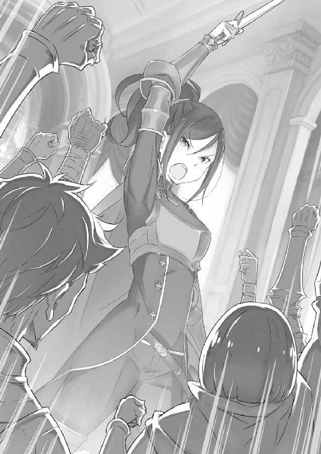
第三章 『白鯨攻略戦』
１
クルシュ・カルステン公爵を筆頭に、今回の『白鯨討伐』の遠征は行われる。
十四年前の『大征伐』以来、白鯨攻略のための大規模な作戦はこれが初めてのことであり、これまでに類を見ない激戦になることが想定される。
この遠征のために編成され、クルシュの指揮下にある大討伐隊、その隊長を任されているのは剣聖の家系──ヴィルヘルム・ヴァン・アストレア。
ヴィルヘルムに従う討伐隊は十五の小隊に分かれ、各小隊の隊長を大広間での演説に参列していた老兵たちがそれぞれ請け負っている。小隊の構成は各隊が十五名ずつで、クルシュ率いる討伐隊の総数は約二百二十人といったところだ。
ただし、総戦力はこれだけに留まらない。決戦の地であるフリューゲルの大樹には、ラッセルの指示で先行した輜重隊が必要な物資の運搬と展開を行っているはずだ。
さらにはアナスタシアより貸し出された、リカード率いる獣人傭兵団『鉄の牙』の一団が三十名。こちらは全体をリカードが仕切り、その下に副団長を二人据えている形だ。
そして、その『鉄の牙』の副団長というのが、
「ミミなのだー！」
「ヘータローです」
と、元気よく手を挙げるのと、ぺこりと頭を下げる二人の子猫の獣人だ。
オレンジ色の体毛に、スバルの腰ほどまでしかない背丈。愛らしい顔立ちと、首まですっぽり覆った純白のローブが実にお似合いで、端的な感想を述べるなら、
「さらいたくなるぐらい可愛いな！」
「お嬢にもよく言われるー！」
「お、お姉ちゃんってばまたそんなこと言って......」
スバルの感想にミミと名乗った少女が溌剌と笑い、それを微妙に慌てた様子のヘータローと名乗った少年が窘める。呼び名からして、二人は姉弟──双子だろうか。
お転婆な姉と、そのフォローをするしっかり者の大人しい弟といった様子だ。
その微笑ましさには異論などないが、肝心なのは見た目ではなくその実力。ピクニックに向かうわけではないのだ。
「しかし、疑ってたわけじゃないけど......お前、本当に副団長だったのな」
「んー？ おにーさん、ミミとどっかで会ったことあったっけ？ むむー、思い出せない感じがジンジョーじゃない！」
両手をクロスさせてミミが首を傾げるが、スバルは苦笑でそれを誤魔化す。
彼女がスバルに見覚えがないのは仕方がない。スバルにとってのミミとの初対面は、一つ前の周回での出来事だ。それも、あまり思い出したくない類の。
もっとも、そのときも今も、ミミの底抜けの明るさだけは変わっていないが。
「気にすんな。俺の名前はナツキ・スバルだ。んで、二人は腕は立つのか？」
「じゃ、気にしなーい！ それにミミとヘータローが揃えばサイキョー！ ティビーもいればもっとすごー強い！ チョーサイキョー！ ガシーン！」
「ええと、はい、そうです。お姉ちゃんと二人、頑張ります」
自己主張の強い姉の手綱を、弟がなんとか操る形だ。二人を見ていると、この世界の双子には、下にフォローを任せる姉しかいないのかという疑問が湧いてくる。
「──？ どうしました、スバルくん？」
疑問のままレムを見ると、不思議そうな顔で首を傾げられたので愛想笑い。
それからスバルは咳払いすると、改めてミミたちに向き直り、
「それにしても大した自信だ。副団長なんて、腕っ節だけじゃできねぇだろうに」
「チョーゼツギコー！ あと、ダンチョーは戦いが始まると、もー先走ってゼンゼン周り見ないでギョワーンてするから、ヘータローがチョーがんばる！」
「お姉ちゃんと団長の代わりに、ボクがみんなに指示を出したりするんですよ」
「ああ、なるほど......苦労がしのばれるな」
豪快に笑い、好戦的に戦場へ駆け込んでいく巨躯と、隣の姉の姿が目に浮かぶ。
そうなると副隊長といっても、相応しい役目を果たしているのはヘータローの方だけなのかもしれない。可愛い姉は、天真爛漫な猪突猛進を絵に描いたような子だ。
「できるだけクルシュ様の指示に従いますけど、ボクたちはボクたちなりのやり方で戦います。その点、ナツキさんに伝えておかないと混乱すると思って......ナツキさん？」
「いや、真面目に気が利いてて驚いてる。この細やかな気遣い、レム並みだぜ」
「ふふーん、スゴイでしょー！」
「お姉ちゃんはまたすぐそうやって調子に乗っちゃって......可愛い」
真っ当な配慮を見せるヘータローを褒めると、何故かミミの方が鼻高々に胸を張る。そしてそんなミミに困った顔をしつつ、最後に本音が漏れたらしいヘータローだ。
先ほど抱いた、この世界の双子の下側ハイスペック疑惑に、下側の姉甘やかしすぎ疑惑まで追加される。それも含めて、ヘータローはレム並みと言えた。
ミミがのびのび育ったことに、ヘータローの影響はきっと小さくないだろう。
姉弟との顔合わせも終えて、スバルはちらと携帯電話で時間を確認する。
──白鯨が出現する定刻まで、残り時間は十二時間。
目的地まではあと距離半分ほど、到着するのは決戦の五時間ほど前になるだろうか。
「大樹までいったら、作戦の最終確認もしなきゃだな。......俺の立ち回りは特に、周りに与える混乱が半端なさそうだし」
「今回はレムも前線ではなく、スバルくんの傍に控えていますからね。──ウルガルムのときのような後悔は、絶対にしたくありませんから」
スバルの呟きに、レムの瞳は静かな決意を燃やしている。
「本当はレムは反対なんです。魔女の残り香で白鯨を引き寄せるなんて、危険すぎると思いますし......第一、あの臭いがスバルくんからするのは」
「使えるもんはなんでも使う。それで勝率がコンマでも上がるってんなら儲けもんだ。足りないとこだらけの俺は、そうでもしなきゃ遅れが取り戻せねぇ」
「スバルくんは素敵です」
スバルの覚悟を前に、しかしレムはそこだけは頑として譲らない。
拗ねたように顔を背けるレムの仕草に、滅多に見せない感情が溢れている。そのことにスバルは、苦笑というには柔らかすぎる笑みを浮かべた。
レムの態度の明らかな変化を、この半日でスバルは十分すぎるほど実感している。
魔獣騒ぎの一件以来、レムはスバルに心を開いてくれたものだとばかり思っていた。だが、本当の意味で心が通じ合ったのは、あの前日の出来事があってからだ。
止まっていた時を動かす、とはレムの弁だったが、まさしくその通りだった。
だからこそ──、
「勝ちたいな」
小さく、スバルはその希望を口にする。
現状、事はこれまでのループからは想像できないほど順調に進んでいるはずだ。
あれほど訴えかけても、誰にも聞き入れられなかったはずの要求を通した。決別は必至だったクルシュ陣営との関係も良好だ。レムとの関係も、スバル自身の恥ずかしい内心をぶちまけた事実はともあれ、より絆が強まったと自負している。
だが一方で、これまで以上に危険な展開に踏み込んでいるのも事実だ。
白鯨の脅威は、それを目の当たりにしたスバルの心に今も鮮明に焼きついている。
レムほどの戦力でも全く歯が立たず、攻撃とすら言えない尾の一振りで竜車を粉々に吹き飛ばす巨体。開いた顎は大地ごと地竜を丸呑みにし、石臼のような凶悪な歯が肉をすり潰したときの断末魔が耳から離れないのだ。
アレと向かい合うと考えるだけで、手足に震えが走るのを止めることができない。
しかし、そんな風にスバルの心が弱気に傾くたびに、
「────」
隣にいるレムの瞳が、まるで心を見透かすようにスバルを覗き込むのだ。
それだけで、スバルの心は怯えを忘れたように燃え上がる。
レムの目の前で、弱くてどうしようもないナツキ・スバルでいることは許されない。
「覚悟一つで、何もかもが綺麗に変わるわけじゃねぇことぐらいわかってるが......」
後ろ向きになることをやめたとはいえ、劇的に事態が好転するわけではない。
未来はより危険なルートに入り、準備が万全とも決して言えない状況だ。
スバルにできたのは、限られた時間の中で最善だと思われる人員に声をかけ、その先は全て彼女らに丸投げするといういつもの他力本願だけだった。
それでも、クルシュたちはスバルにそれ以上を求めなかったし、それは決してスバルを役立たずの厄介者として無下に扱ったわけでもなかった。
ただ、そのときそのときの、できることをできるだけ懸命にこなす。
そのできることの幅がスバルは狭いのだから、せめてその枠の広さをちゃんと把握して、その狭い枠の中で何ができるのか考えなくてはならない。
「つまりは、いつもの通りだ。当たり前だったけどな」
「なんや、兄ちゃん。──覚悟の決まった面しとるやん」
ふいに、竜車の隣に並んだリカードがスバルを見ながらそう笑う。
大鉈を背中に担いだ犬の獣人を睨みつけ、スバルはその口の端を強気に歪めた。
「おうとも。ちっと遅いが、かっちりはまったさ。覚悟の決まった俺はすげぇぜ？ なにせ、死んでも未来を諦めねぇからな」
「そらまた豪毅なことやな！ お嬢がおったら大喜びしそうな話や！ やっぱし兄ちゃん、お嬢の友達にぴったりや思うわ！」
「立場が立場でなきゃ、握手するのも悪かないと思うけどよ。......ああ、でもアナスタシアと仲良くしようとすると、面倒そうな奴がいるしな」
アナスタシアを思い出せば、その隣に立つ美丈夫の姿もセットで思い出される。
ユリウスに練兵場で叩きのめされたのも、今ではずいぶん前に思えた。体感時間では数週間、現実時間ではまだ五日ほどしか経っていないのだろうが。
と、そんなスバルの言葉に、リカードが大口に隠し切れない含み笑いを浮かべる。
その反応と悪戯な瞳からして、彼はスバルがやらかした醜態を聞いているらしい。自然と、不貞腐れのような感傷にスバルは顔を背けた。
「笑うなら、それこそ爆笑してくれや。俺だって、今ならあんときの俺の空気読めなさっぷりぐらい自覚してんだから」
「ちゃうちゃう！ ワイがおかしいんはそれとはまた別の話や。まぁ、もうちょいしたら自然にわかるやろし、ここでばらすんは無粋やろからな！」
一人納得するリカードは、己の鬣を撫でつけながら話題を区切る。思わせぶりな態度が気にかかるが、問い詰めても答えは返ってこないだろう。
「そういや、出発したときから聞こう聞こうと思ってたんだけどさ」
「なんや、なんでも聞きぃ。ワイと兄ちゃんの仲やんけ！ よっぽどのことでなきゃなんでも話したるわ！ よっぽどのことやったら銭次第やな、銭！」
「その辺はやっぱりお前もカララギ人っぽいな。......お前たちの乗ってる、そのでっかい犬みたいな生き物だけど、すげぇよなって」
はしゃぐリカードの尻の下、彼らの乗る生き物を指差し、スバルはなんと表現するのが適切か迷いながら問いかける。
リカードら『鉄の牙』の騎獣は、地竜とは全く異なる別の生き物だ。
大型の犬、が最も表現的に近いだろうか。ただ、その体躯は大型の肉食獣──元の世界のライオンや虎に匹敵し、速度と体力は地竜にも見劣りしない。
そのスバルの質問に、リカードが納得した顔で騎獣の背中を叩いた。
「あんましこっちじゃ見かけんからな。これ、ライガーいう生き物やねん。こっちの地竜とおんなじぐらいカララギじゃ重宝されとる。なんや縄張り争いの関係で、ルグニカやら他の国やと繁殖厳しぃくて数少ないねんて」
「ライガー......」
パッと見だと、スバルの経験上はウルガルムの亜種か何かに見えてしまう。幸い、頭部に角は見当たらないし、顔つきも魔獣と比べれば明らかに愛嬌があった。
魔獣が狼寄りの面構えだとすれば、ライガーは確かに犬寄りだといえる。
ただ、その超大型の犬に、犬型獣人であるリカードが乗っている状況は──、
「なんかすげぇ変な気分になる絵面なんだけど、お前、自分で違和感とかないの？」
「時たま言われるんやけど、別にやなぁ。ワイら自身は獣人と動物できっちり区別できとるし......あ、言われると怒る奴もおるから気ぃつけや。ワイは気にせぇへんけどな」
「いや、俺も言っててどうかと思ったからちゃんと謝る。悪い」
「がはは、律儀なもんやのぉ！」
牙を剥き出して笑い、リカードはそれからライガーのうなじをガシガシ撫でる。
ライガーは主人の行動に無反応だが、黙して主を揺する姿には犬のような忠誠心が確かにあるように思える。サイズは違っても、犬らしさは失われていないようだ。
「ライガーは馬力じゃ地竜に負けやけど、代わりに身軽さが段違いや。鯨退治で乱戦になったら、ワイらの独壇場やからよう見ときぃ」
「馬力か。竜と犬が一般的でも、やっぱり動物パワーはそう言われるんだな。......そういや、馬って見かけねぇな」
いる、という話自体はエミリアの口から聞いたことがある。だが、これまでに一度も見かけていない点を見ると、かなり普及率は低いらしい。
それからスバルは後方、行軍する討伐隊の後続を指差した。
「その馬力の差があるから、一台の車両を犬ぞりみたいに大勢で引っ張ってんのか。本番前に犬が疲れるかもって思うと、運搬は竜車任せでよかったんじゃねぇの？」
「自分らの荷物ぐらい自分らで管理せんとなぁ。それに心配はいらんで。荷車引くライガーはライガーで、ちゃんとそれ用に鍛えてあんねや。甘やかすんは論外やし、白鯨ばっかが敵や思うとると足下すくわれかねんかんな」
ぎくり、とスバルは内心の動揺が表情に出そうになるのをなんとか堪える。
一方でリカードは、スバルのそんな驚きに気付かない様子で、
「道中、盗賊やらに絡まれんとも限らんしなぁ。余計なとこで時間取られて、間に合わんとか最悪やろ。せやから、荷物ぐらいは自分らで面倒みとるわけや」
「......こんな完全武装の一団、襲う勇気があるなら盗賊なんてやってねぇだろ。仮にやるとしたら勇気じゃなくて、遠回しな自殺だよ」
「そらそうやな！」
そう言って馬鹿笑いすると、リカードはスバルに手を挙げて竜車を離れる。騎獣を先頭へ向かわせながら、周りの人々にうるさく話しかけていく様子が見えた。
「リカード様、ああして戦いの前に皆さんの緊張をほぐして回っているみたいですね」
「────」
遠ざかるリカードを見送り、レムがこっそりとスバルに囁いて聞かせる。
そこで初めて、あの大柄な獣人の気遣いにスバルは気付かされて、苦笑する。
「覚悟、決まったはずなんだがなぁ......」
年長者から見れば、まだまだということだろう。
迫る白鯨との一戦──難関は、その大一番を乗り越えた先にも待っているというのに。
「目指せ、英雄......って言っても、なかなかキツイもんだぜ、まったく」
レムにさえ聞こえない声で小さく呟き、しかしスバルの頬は笑みを作っている。
やらなければならないことと、やりたいことが一致していて、それをやってくれと後押ししてくれる人がいる。──これほど、やり甲斐のある場面があろうか。
来る一戦を前に、こちらの戦意は万全だ。
「──さあ、勝負といこうぜ。運命様よ」
２
幸い、討伐隊はトラブルに見舞われることもなく、無事に目的地へと到着した。
到着は定刻の五時間前──決戦の夜空には、白い月が昇り始めている。
討伐隊が展開していた先遣隊と合流すると、武具の点検や作戦の最終確認が行われる。当然、話し合いにはスバルも参加し、各人の立ち回りを含めた作戦の詰めが終わると、その後は決行時間まで自由行動となった。
そして、それぞれが思い思いに作戦までの時間を過ごす中、スバルは──、
「で──っけぇなぁ」
「嬉しそうですね、スバルくん」
首が痛くなるほど見上げても、てっぺんが見えないほど長大な大樹の幹。地面を盛り上がらせ、盛大にのたくる木の根に足をかけながら、スバルは興奮を隠せないまま素直な感想を口にしていた。その様子を、レムが微笑ましげに見守っている。
「男ってのはこう、でかくて強そうなもんに感動しちまう生き物なんだよ。初めて地竜見たときも感動したけど、大自然も半端ねぇな！ フリューゲル、いい仕事したよ」
大樹の幹に触れながら、スバルは木を植えたという賢者の偉業を称賛する。
木を植える以外に何をしたのかわからない偉人らしいが、歴史に名を残す偉業を一つでもやってのけたなら問題なしだ。フリューゲル、名前も格好いいし。
「あ、でも幹に誰かの名前が彫ってあんな。修学旅行生じゃあるまいし、ちょっとマナーがなってねぇよ、マナーが。レム、彫刻刀貸してくれ」
「いくらスバルくんでも、そんなことしたら怒りますし、怒られますよ」
彫られた名前に対抗心を燃やすスバルを、レムが優しく正論で窘める。それから彼女は拗ねるスバルに小さく笑い、そっと大樹を見上げた。
「ここに、白鯨が出るんですね」
「ああ、出る。時間になったらケータイが......この『ミーティア』が鳴るから」
ポケットから携帯電話を取り出し、ストラップに指を引っかけて左右に揺らす。すでにアラームはセットし、白鯨の出現時間に鳴るように設定済みだ。
それは最終ミーティングで共有してあり、クルシュへの説明に苦慮した部分でもある。事実を明かせない罪悪感は、結果を出すことで挽回しようと開き直り気味だ。
ただ、レムにすら真実を打ち明けられないのは、さすがに心苦しいのだが──、
「その『ミーティア』が、魔獣の存在を報せてくれる......」
「ん、そゆこと。ぶっちゃけ、これなしだと俺の価値ってば今回は......」
「──嘘ですよね？」
唐突に、目を細めたレムにそう言われて、スバルの心臓は確かに止まった。「は」と声にならない息が漏れて、心臓の鼓動が遅れて再開する。
「────」
今、レムに何を言われたのか。
何かの聞き間違いか、という淡い期待は、スバルを見つめるレムの瞳に砕かれる。
彼女は確信を持って、そう言っている。
「な、何を言い出しますのん？ これが嘘なら、ワイはどぎゃんして......」
「カララギ弁のような何かになってますし、スバルくんには似合いませんよ」
「いや実際、これが嘘とかありえねぇだろ。クルシュさんたちだって納得してんだぜ」
レムに誤魔化しは通用しない。それでも、スバルは嘘を貫き通そうとする。
もし事実が明らかになれば、それは間違いなく事態の悪化を呼び込むからだ。嘘が暴かれれば、スバルがクルシュたちの事情を知っていたことの辻褄が合わなくなる。その辻褄を合わせようとすれば、『死に戻り』について説明する以外に方法がない。
無論、『魔女』の定めた禁忌に従う限り、『死に戻り』は誰にも明かせない。
ましてや今の魔女の掌は、エミリアの心臓を握り潰すほど悪辣な進化を遂げた。同じペナルティが発生することを想定すれば、レムだって被害者になり得る。
──絶対にレムに、事実を知られてはならないのだ。
なのにレムは、言い訳するスバルにゆるゆると首を横に振って、
「クルシュ様たちは、スバルくんが嘘をつく必要がないと判断されているだけですよ。こんなことで嘘をつけば、クルシュ様だけでなくアナスタシア様や、ラッセル様を含めた商人組合まで敵に回してしまいますから。そんなこと、する意味がありません」
「それは......」
否定できない事実だ。
同盟交渉の場面、クルシュならばスバルの拙い理論武装など、いくらでも反論ができたはずだ。ラッセルやアナスタシア、交渉慣れした二人も同じことだろう。
それでも彼女らが不審点に目をつむって交渉を受け入れたのは、スバルへの信頼などではなく、状況を考慮した上での判断でしかない。
あの交渉は、場所も人員もスバルが設定したのだ。スバルには彼女らを欺く必然性がない。無論、そう考えるだろうという打算もスバルの張った保険の一つだ。
ただそれは、薄氷の上に成り立つ利害関係の一致に他ならない。
スバルが『嘘』を貫き通すことで、初めて成立する類の偽りの信頼だ。そして結果が伴うのであれば、その嘘は今後も永遠に明かされる必要のない嘘である。
しかし、レムにとっては違う。
レムの立場は今も変わらず、スバルの味方である。スバルも今やこの異世界で、自分に一番親身になって接してくれているのがレムであることは重々承知だ。
そのレムに嘘をつき続けることは、クルシュたちを欺くのとは全く違う意味を持つ。偽りに気付いて、そこから受ける印象が全く別のものになってしまうのだ。
クルシュたちに明かせないのは、利害関係の一致から。
レムに明かせないのは、レムを信じていないから──そう思われても仕方ない。
そう思われたとしても、真実を明かすことは絶対にできないのだから。
「レム、俺は......」
「いいんですよ、スバルくん」
「え？」
取り繕いの言葉で、どうにかレムを守ろうとスバルは画策した。
しかし、それは口元に微笑を浮かべ、首を横に振ったレムによって拒絶される。
驚き、口の塞がらないスバルにレムは真摯な眼差しを向け、
「スバルくんが嘘をついていることぐらい、レムにはわかります。ずっとずっと、スバルくんを見ているんですから」
照れ笑いするようにはにかみ、レムは冗談めかした仕草で口元に指を当てる。
それから、その指をスバルの方へ向けて、
「その嘘の理由が話せないでいることも、わかります。でも別に、それを話してくれないからって、レムに気を遣うことなんてないんですよ？」
「────」
「だってレムは、スバルくんを丸ごと信じていますから」
フリューゲルの大樹の根元で、向かい合う二人の間を風が通り過ぎてゆく。
そっと胸に手を当て、レムは押し黙るスバルの前で宣言する。
「スバルくんが白鯨の現れる場所を知っているというなら、信じます。魔女教がエミリア様たちを狙っているというなら、それも信じます。仮に月が落ちてきて、この国が滅ぶとスバルくんがいうのなら、それだって信じられます」
「......そこまでは、言わねぇよ」
「はい、そうですね。でも、それだけ本気だってことですよ」
笑みを消し、レムはそれから真剣な目でスバルを見つめた。
そして、彼女は静かに腰を落とし、スカートの端を両手で摘まんでお辞儀すると、
「この身、この心は全て、スバルくんに心酔しております。──故にレムは今も、これからも、スバルくんを疑うことは絶対にありません」
「────」
「だから、信じさせようだとか、嘘で丸め込もうだとか、そんな風に自分を追い詰めたりする必要──どこにもないんですよ」
喉が詰まり、熱いものが込み上げてくるのをスバルは寸前で堪えた。
目頭を押さえて顔を上に向け、震える口を大きく開くと、
「あー！ やっぱり、でっかい木を見上げてるとテンション上がるなー！」
「はい、そうですね」
「これはしばらく、木の上の方とか見上げてないと気分落ち着かないわー。全然他の理由とかないけど、しばらく下とか見れないわー」
「はい、そうですね」
涙がこぼれないように、スバルは虚勢を張って顔を上に向け続ける。
そんなスバルの弱い強がりを、しかしレムは優しく慈愛で包んで暴かない。
今、改めて、スバルは自分自身の本当の馬鹿さ加減を理解した。
──最初から全て、レムに打ち明けてしまっていればよかったのだ。
何もかもを告げることはできないけれど、それでも起きてしまう惨劇のことを彼女に伝えられれば、スバルは二度三度と悲劇を重ね続けることはきっとなかった。
理由を説明できないから、言っても信じてもらえないから、スバルは一人でやるしかないのだと決めつけて、あらゆる失敗を繰り返した。
でも、レムは違ったのだ。
彼女は理由の説明を求めない。言わずとも、スバルを信じてくれている。
今もこうして、真実を話せないスバルを許し、慈しんでくれているように。
「ごめんより、ありがとうだよな。こういうときは」
涙の堤防を必死で守り切り、スバルはどうにかレムと向き直る。
そのスバルの答えに、レムは満面の笑みで頷いた。
「どういたしまして、ですよ。それにレムの方がずっと、ずっとずっとずーっと、スバルくんに感謝しているんですから、おあいこです」
「正直、もうレムにしてあげられたことの分なんて軽く超過して色々返されてる気がしてならねぇんだけどな、俺としては」
「そんなこと、ありませんよ」
小さく俯き、レムはスバルの言葉を否定する。
「本当なら、こんな話をするのだってスバルくんを苦しめるだけだってわかっているのに、それでも言ってしまうのはレムのわがままなんですから」
「そんな風に、思ったりしねぇよ。隠し事してて、悪いのは俺の方だ」
「でも、やっぱりわがままですから。それなのに、ごめんなさい」
言葉には自嘲がまじっているが、顔を上げたレムの表情は晴れやかだ。そんな矛盾した姿にスバルがたじろぐのを嬉しそうに見て、レムは小首を傾け、
「スバルくんが背負う荷物を、ほんの少しだけ預けようと思ってもらえる。そんな存在であれないことが、今のレムには耐えられないほど悲しいんです」
「俺は......」
レムの覚悟の程が、その思いの丈が、今もこうして伝わってくる。
大樹の幹に背を預けて、スバルは一度深呼吸する。
この胸の中に湧き上がる温かい想いを、そのまま言葉にする勇気を──。
「俺は──エミリアが好きだよ」
「はい」
一度、それはレムと交わした言葉の焼き直しだ。
それが彼女をひどく傷付け、苦しめる言葉だと知っていて、それでもスバルはまたそれを口にした。
だけれど、
「でも」
「────」
「でも、お前といると、心が震える。......ひでぇ奴だと、思ってくれていい」
ひどく、都合のいい言葉なのだと思う。
でも、嘘偽りのないスバルの気持ちだった。
レムの想いには応えられないとわかっているけれど、こうまで心を温めてくれるのは彼女の言葉だけなのだから。
ほぅ、とレムがどこか熱の入ったような吐息をこぼし、
「本当に、スバルくんはひどい人です」
「......わかってる」
「嘘です。愛してます」
「わ......っかってるって」
改めて想いをはっきり言葉にされて、スバルの顔が一気に赤くなる。
夜でなければ、その赤さはさぞ目立ったことだろう。スバルは赤面した顔を隠すように背けて、幹から離れるように歩き出し、
「そろそろ戻ろうぜ。白鯨が出る寸前までに、きっちり心と体を仕上げなきゃだ」
レムの横を通り抜ける前に、宙ぶらりんだった彼女の右手を握った。
手を握られ、レムは「あ」と小さく声を上げたが、すぐに早足のスバルに歩調を合わせると、その自分を見ようとしない少年の横顔を悪戯な目で見つめて、
「スバルくん」
「......なんだ」
「レムは第二夫人でもいいですよ」
思わず、足が止まりかけるような言葉だった。
たまらずスバルがそちらを向くと、レムは人懐っこい子犬のような顔をして、スバルの返答を尻尾をぶんぶん振りながら待ち構えている。
ああ、まったく、この少女はどこまでも──。
「エミリアたんが一夫多妻に寛容な子だったらな」
「ではでは、戻ったらエミリア様を説得しなきゃですね。レムは頑張ります」
握られるのと反対の手で拳を固め、レムは意気込むように言って笑った。
その冗談めかした言葉に緊張を解かれて、スバルは本当に敵わない子だと自分の弱さをはっきり自覚した。
エミリア然り、レム然り、こういう場面で男は女にどうしても敵わない。
その弱さだけは、これまでのそれと違って認めることが嫌ではなかったのだけれど。
３
──定刻が迫り、大樹の周囲には戦場独特の緊迫感が張り詰めつつあった。
交代で食事と仮眠を取り、戦域に集った討伐隊のコンディションは万全だ。騎兵に従う地竜とライガーも、今か今かと鼻息を荒くして号令を待っている。
息を殺し、心を落ち着けて、全員でその時を待ち続ける。
リーファウス街道の夜空、風の強い今宵は雲の流れる動きが速い。
月光が雲に遮られるたび、白鯨の巨体が空を泳いでいるのではと視線を上げる者が後を絶たない。それだけ、警戒心が皆の心を支配しているのだ。
「定刻まで、あとわずかだな」
静かに呟き、クルシュは横に立つフェリスが小さく頷くのを目端に捉える。
長年クルシュに仕え、常に軽妙さを失わないのが持ち味のフェリスも、今ばかりは普段の諧謔を口にする余裕が一切ない。
張り詰めた緊張に呑まれている、のではない。
フェリスは自分の役割──己がこの討伐隊における、一種の生命線であることを理解して、その役割に徹しようと心に決めているのだ。
事実、フェリスの活躍次第で、この戦いにおける最終的な勝者の数は変わるだろう。
クルシュは自分の陣営の勝利を信じている。
だが、犠牲なしで白鯨を討てると考えるほど自惚れてもいない。しかし、その必要な犠牲の数を減らすことはできると、そう考える程度には自信を持っている。
その自信が、自分の騎士であるフェリスへの信頼からなるものなのだから、これを自信と呼ぶべきなのかはいささか疑問の余地があるが。
「────」
正面、討伐隊の最前列に立つのは帯剣するヴィルヘルムだ。
老剣士は腰に帯びた六本の内、二本の剣を両手に構え、即座に駆け出せる姿勢にある。
剣鬼の纏う静かな剣気は研ぎ澄まされた領域にあり、悲願の時を迎えようとしているこの瞬間でさえ洗練されたものだ。
その純粋な剣鬼の在り方に、クルシュは場違いな感嘆を抱かずにはいられない。
人はただひたすらに、ああまで魂を清く保つことができるものなのだ。
いつか自分も、その領域に至りたいとクルシュは心から思う。
「────」
ヴィルヘルムに並び、各々表情に覚悟を漲らせる討伐隊の勇士の士気も高い。
クルシュの命に従い、白鯨を待つ彼らの心にも疑問はあろう。白鯨出現の最大の情報源であるスバルと、彼らが信頼関係を築くには時間が足りなすぎた。
それでも彼らが異を唱えず従うのは、クルシュの判断を尊重してのこと。その信頼に応える義務が自分にあることを、クルシュは強く自覚している。
「────」
刻限が近付き、じりじりと心地良い戦意がクルシュの内側を焦がしていく。
クルシュの手は宝剣の柄に触れて、そこに彫り込まれた『獅子』の家紋の感触を確かめている。幼い頃からの手癖で、それはクルシュに覚悟を注ぎ込む魔法だった。
「────」
勝たねば、ならない。
傍らにフェリスの存在を、そして指先には『獅子王』の遺志を感じている。
それだけでクルシュは、どれだけ強大な敵が相手だったとしても戦えるのだから。
そして──、
「──ッ！」
唐突に、それは闇夜に沈むリーファウス平原に響き渡った。
軽やかな音が連続し、鼓膜を震わせるそれが音楽であることに遅れて気付かされる。
音の発生源に目を向ければ、輝く『ミーティア』を手にするスバルの姿があった。その手元の『ミーティア』から、その音楽がやかましく流れ出している。
スバルが言っていた、その時を告げる合図だ。
「総員、警戒──！」
クルシュの掛け声がかかると、討伐隊が一斉に身構える。
スバルの話では、『ミーティア』の報せから数十秒で白鯨が出現するとのことだ。
彼の言を信じるなら、今この瞬間にその巨体が空を泳ぎ始めても不思議ではない。場所も、『ミーティア』の報せがあった以上、ここで正しいはずだ。
疑う余地はいくらでもあるが、その疑いを生む理由がスバルにはない。疑念と疑心を置き去りにして、クルシュは神経を研ぎ澄ませながら、その魔獣を待ち構えた。
しかし、
「────」
静寂の中に、その強大な魔獣が現れる気配は感じられない。
拍子抜けした、という表現は正しくないが、一分が経過しても変化の生まれない戦場の中で、クルシュは珍しく動揺を禁じ得ない。
情報の食い違い、想定の誤り、何かしらのアクシデント。
リーファウス街道に落ちる静けさは変わらず、周囲の景色にも敵影はない。
今も月明かりが雲に遮られ、暗く大きな影が平原にかかっているが──、
「──っ」
見上げ、クルシュは自分の浅はかな考えを即座に呪った。
月明かりの消えた平原に、影が落ちている。
月光を遮断した雲霞がゆっくりと高度を下げ、目の前に迫る。
──雲霞ではない。
それは、あまりにも大きな魚影を空に浮かべる魔獣であった。
クルシュが息を呑んだのと同時、討伐隊のほぼ全ての人員が同じ理解に達した。そして全員の意思が統一されると、彼らの視線がクルシュへ投げかけられる。
──先制攻撃、その命令を待っているのだ。
機先を制し、白鯨の出現の頭を押さえることには成功した。
あとは手筈通りに奇襲を叩き込み、この戦線を支配するだけだ。
「────」
息を吸い、クルシュは最初の号令を発しようと心を決める。
白鯨はいまだ、矮小なこちらの存在に気付いていない。
巨大な頭を巡らせる白鯨の動きは、まるで自分がどこにいるのか確かめようとしているかのようだ。そしてその仕草は無警戒で、何より隙だらけであり──、
その様子にクルシュの肚が決まった。
「──全員」
総攻撃、とそれを口にしようとして、
「──ぶちかませぇッ!!」
「──アル・ヒューマ!!」
クルシュを飛び越えて号令が発され、同時に魔法の詠唱によりマナが展開する。
世界が凍てつく音を立て、凄まじい密度の強大な氷柱が生み出される。一本一本が屋敷の大黒柱に匹敵するサイズの氷柱が都合四本。それが超高速で射出され、宙を走る氷柱が白鯨の胴体を直撃、一拍遅れて魔獣の絶叫と噴出する血が大地に降り注いだ。
慌てて見れば、地竜に相乗りするスバルとレムが先陣を切って駆け出していく。
レムの腰に抱き着くスバルが拳を突き上げ、魔法の先制攻撃を果たしたレムは自らの役割を全うしたとばかりに会心の表情だ。
その二人の先走り──もとい、抜け駆けに討伐隊が動揺する。
駆け抜ける二人の姿に、クルシュは自分の口が大きく歪むのを堪えられない。
怒り、ではない。笑いによってだ。
「全員、あの馬鹿共に続け!!」
動揺を掻き消すクルシュの号令に、討伐隊の面々が反射的に攻撃を開始する。
粉塵が舞い上がり、その向こうで白鯨の絶叫が再度高らかに、リーファウス街道の夜空へ木霊していく。
──白鯨攻略戦が満を持して、その火蓋を切った。
４
『風除けの加護』の効果は、何度味わっても不自然なものに思えて仕方ない。
振動、風、体勢、本来ならば受けるはずの影響の一切を遮断するあり得ない現象だ。
疾走する地竜の背に直接跨り、レムの腰に抱き着きながらスバルは目を凝らす。渇き始めていた唇を舐め、軽く湿らせながら息を呑んだ。
定刻通りに携帯電話のアラームが鳴り、宵闇の平原に白鯨はその姿を現した。
空を割り、影から這い出したと、そう表現する他にない巨体の出現だ。根源的恐怖を覚える巨躯に、命を脅かされた記憶が舞い戻ってスバルの心胆が縮み上がる。
周囲を見れば、スバルと同じものに気付いた討伐隊に緊張が走っている。手筈通りであればクルシュの号令がかかり、そこで一斉攻撃が始まるはずだ。
だが、ほんの刹那、あのクルシュをして息を呑む空白が生じるほどの威圧感。
それが致命的な失策になりかねないのが、極限状態に達した戦闘の恐ろしさだ。
故に、スバルは目の前の肩を叩き、
「──ぶちかませぇッ!!」
「──アル・ヒューマ!!」
クルシュが息を吐く半瞬前に、戦線の火蓋を切る叫び声を上げていた。
スバルの掛け声に呼応し、練り上げられた膨大なマナにレムが指向性を与える。生み出された四本の凶悪な氷槍は、宙に浮かぶ白鯨の下腹を容赦なく鋭い穂先で抉った。
岩肌に激突し、氷が砕け散る音が響く。しかし、破砕が氷槍の全体に広がる直前に、貫通した威力が白鯨の分厚い皮膚の防御を突破──平原に血がぶちまけられる。
白鯨の絶叫が平原に轟き渡る。鼓膜を痺れさせる大気の震えを味わいながら、スバルとレムが乗る漆黒の地竜は恐れることなく前へ踏み出していった。
──明言するが、これは決してスバルたちが早まったわけではない。
白鯨出現の瞬間に、討伐隊の中に生じた一瞬の空白。
あの瞬間に動けていなければ、この先制攻撃はおそらく成立していなかった。
あの空白こそが分水嶺。そして、そのわずかな躊躇いが生死を分けるとわかっていながら、クルシュほどの傑物でも白鯨の威容の前には息を呑んだのだ。
その出現を半ば確信していても、実物を目にすれば人の心には波が立つ。その波紋はささやかでも思考に歪みを生み、歪みは停滞を、そして停滞は敗北を招き寄せる。
そうなれば戦いは、こちらの不利で始まっていたかもしれなかった。
──スバルとクルシュの一瞬、それを分けた差がどこにあったかといえば、愛だ。
スバルとその『ミーティア』への信頼──クルシュの判断がコンマ遅れたのは、それを心底信じ切ることができなかったからに他ならない。心情では信じていても、為政者としての純度が彼女に疑念を忘れさせなかったのだ。
だが、レムはスバルの言葉を、白鯨がこの瞬間に現れるという発言を、一点の曇りもなく欠片も疑っていなかった。故にレムはスバルが指示した時間に合わせ、自らの持てる最大火力の魔法を準備し、魔獣の出現と同時に叩き込むことができたのだ。
これをレムの愛が勝ち取った結果と言わず、なんと呼べるだろうか。
「とか分析すると超恥ずかしい──っ！」
「スバルくん、もっとしっかりしがみついてください。振り落とされます！」
戦端の切り方を自分なりに分析するスバルに対し、地竜の手綱を握るレムがそう叫ぶ。彼女の言葉は作戦の一部──先制攻撃炸裂後の、第二段階を示していた。
「全員──あの馬鹿共に続け!!」
背後、風になるスバルたちに半瞬遅れて、クルシュの号令に従った討伐隊が次々と砲筒に着火──大砲のような砲筒に魔鉱石を詰め、弾丸として射出する魔石砲だ。
その一斉砲撃が爆音を上げて着弾し、破壊の力で白鯨の体を蹂躙する。
直撃の瞬間、魔鉱石に込められたマナが対応した属性の魔力に変換され、炎が、氷が、光が、レムの作った傷口を押し広げ、街道にどす黒い血の雨が降り注いだ。
鮮血が霧雨のように降る中、スバルたちの地竜は機敏な動きで白鯨の背後を取るように大きく回り込む。打ち合わせ通りの動きだ。
「白鯨に俺の存在を意識させて、討伐隊に背中向けさせるように立ち回る──！」
「空！ 『夜払い』がきます！ 目をつむってください!!」
戦闘状態に入り、その額に純白の角を覗かせるレムが頭上を見上げて叫ぶ。
彼女の指示に慌てて従い、スバルが下を向いて目をつむる──直後、世界が瞬いた。
白光は空で爆発し、一瞬で夜の世界を白い輝きが焼き尽くす。
閉じた瞼越しでも視神経を侵す光の強さに、スバルの喉が驚きに詰まる。
そして数秒後、恐る恐る瞼を開けたスバルの目の前には、
「うおお！ 聞いてた通りだ、すげぇ！」
リーファウス街道から、夜の気配が完全に消え去っていた。
数秒の間に何があったのか、世界の昼夜が反転し、真昼の明るさが平原を照らす。
頭上、すでに沈んだはずの太陽の代わりに輝くのは、白鯨への攻撃とは別に打ち上げられた『夜払い』と呼ばれる効果を持った特殊な魔石だ。その効果は本来、込められたマナの分だけ光の塊を具象化し、薄闇を照らす程度のものでしかないとのことだが、
「そいつを財力に飽かして山ほど買い込んで、疑似太陽の出来上がりってわけだ」
「白鯨に夜に潜られては捕捉が困難ですから。──さあ、ここからですよ！」
王都でも有数の商人二強が手を組み、方々を走り回って集めた魔石の本領だ。
範囲は大樹の一帯、制限時間は一時間弱──決戦を終えるには十分すぎる。
宵闇を失った平原の空に、くっきりと浮かび上がる巨体。それは──、
「あれが......！」
これまで一度も、はっきり確認できていなかった白鯨の存在が日の下に晒される。
「────ッッッ!!」
夜空から引きずり出されたことに激昂するように、白鯨が巨体を震わせ咆哮する。
発される轟音はもはや騒音の域に留まらず、一種の破壊行為に近い。大気が鳴動し、訓練された地竜すら本能的に怯える、暴悪的な雄叫びだ。
全身から血を流す異貌だが、その泳ぐ姿には負傷の影響が見られない。白鯨は平原の空で首を巡らせ、自分に挑みかかる小さな人間たちを悠然と見下ろしていた。
「なんて、でかさだ......」
こぼした声が震え、スバルは手足が痺れたように動かなくなる感覚を止められない。
それまでスバルが見て、触れて、憎悪してきた白鯨という存在の脅威が、その存在のほんの一端でしかなかったのだと、全容を前にして初めて理解した。
白鯨──その異名で呼ばれるだけあって、その魔獣の姿は白に覆われていた。
岩盤のようにささくれ立った肌に、白い体毛が無数に生え揃っている。下腹から伸びる胸鰭は死神の鎌のような形状をしており、一回り小さな背鰭と尾鰭も同じ形だ。
頭部と横腹には無数の窪みがあり、窪みは呼吸するかのように開閉を繰り返している。
そういった醜悪な差異を除けば、なるほど白鯨の姿はスバルの知識にある鯨に酷似していた。──だが、その大きさが予想を二回りは裏切っている。
スバルの知る限り、世界最大の鯨はシロナガスクジラ──全長は三十メートル前後で、まさに地球上最大の哺乳類であるといえる。
しかし、遠目から見える白鯨の巨躯は三十メートルを軽々と越えて、五十メートルに迫ろうかという規模だ。その巨体は生物というより、もはや一つの山に近い。
一つの白い岩山が、何の冗談なのか空を悠々と泳いでいる。
「スバルくん」
歯の根が噛み合わず、今にも震え出しそうなスバルを呼ぶ声がした。
それはこちらに背中を向け、小さな体の腰にスバルを抱き着かせるレムの声だ。すぐ目の前、息遣いさえ聞こえそうな距離で彼女はスバルの方を振り返らず問うた。
「怖いですか？」
挑発ではなく、信頼が呼びかけてくる。
グッと、歯の根を噛んでスバルは口を強引に捻じ曲げると、
「ああ、怖いね。──アレを倒して称賛される、俺の未来の輝きっぷりが！」
軽口を叩いてレムの期待に応えると、スバルはその肩を後ろから叩いた。
「俺の命は全部預ける！ さあ、逃げまくってやろうぜ！」
「レムの命も、スバルくんのものです。──では、そうしましょう」
覚悟を決め、勇ましく逃げ回る宣言をするスバルに、そっと微笑むレムが手綱を荒々しく鳴らす。漆黒の地竜が嘶き、白鯨の異形にも怖じることなく大地を蹴った。
正面、こちらを向く白鯨の右下を斜めに駆け抜け、尾の側へと回り込む狙いだ。
討伐隊から突出し、接近するスバルたちに白鯨が巨大な眼を向ける。大型の竜車すら一呑みにする顎が開かれ、石臼のような歯が並ぶ口が咆哮の構えに入った。
破壊すら伴う音の洗礼、その予感に地竜に跨るスバルは身構える。
その頭上を──、
「余所見とはずいぶんと、安く見られたものだ──!!」
勇ましい女傑の声がした次の瞬間、白鯨の頭部が真一文字に浅く斬り裂かれた。強固な岩肌を撫で斬る見えない斬撃に、白鯨の巨体から再び血が噴出する。
振り向き、斬撃の出所に視線を走らせたスバルは、後続の先頭を走る白い地竜──その背に立ち、腕を振り切った姿勢にあるクルシュを見た。だが彼女の手には、
「何も持ってない......!?」
「射程を無視した無形の剣──百人一太刀で有名な、クルシュ様の剣技です」
スバルの驚愕に、低い声でレムが答える。
レムが口にしたクルシュの逸話は初耳だが、その文字面だけで察せられるものがある。無手に見えるクルシュの戦闘力は、その名に相応しい技量を備えていると。
目に見えない斬撃に初動を潰され、動きの停滞した白鯨へ追撃が入る。
魔石砲が再び稼働し、火力を集中された白鯨の巨体に次々と着弾によるダメージが蓄積され、宙で悶える魔獣の高度が落ちてくる。
雲と同じ高さにあった白鯨の位置が、首を真上に傾けるほどでなくなればそこは──、
「刃の届く距離、だ」
一頭の地竜が地を蹴って跳躍し、その体躯に見合わぬ軽やかさで空へ駆け上がる。
それでも、強大さを誇る白鯨と比較すれば質量差は歴然だ。鼻先に浮かぶ地竜の姿は、白鯨からすれば虫けらも同然だったことだろう。
──真っ直ぐにひた走った剣閃が、その魔獣の鼻面を縦に深々と割った。
銀閃が白い岩肌を易々斬り裂く光景に、砲火の鳴り響いていた戦場から音が消える。
それは魔法でも、魔石砲によるものでも、実体のない刃のもたらす斬撃でもなく、人の手が鍛え、人の手によって振るわれる鋼が魔獣に届いた証。
長きに亘る時を費やした人間の意地が、霧の魔獣に確かに届いた、その証だ。
「──十四年」
割った鼻先に剣を突き立て、人影がしゃがみ込みながらぼそりと呟く。
振り切ったのと反対の剣を突き刺して姿勢を維持し、魔獣の血に濡れた刀身を振り払う鍛えられた背中、それは大気が歪むほどの剣気を迸らせている。
「ただひたすらに、この日を夢見てきた」
背を伸ばす影に白鯨が身をよじる。自身の頭の先端に乗る影を振り落とそうと、空で身をひねる白鯨は唸りを上げてバレルロール。
豪風が街道の空を吹き荒び、巨躯の遊泳の結果に誰もが息を呑んで目を見開く。
だが、
「────ッ!!」
半円を描いた白鯨が痛みに絶叫し、尾を振り乱しながら空で踊る。
先ほど縦に割られた傷に追加で横一文字の傷が加わり、十字の傷を額に刻んだ白鯨の背を、軽やかな足音を立てて影が踏む。
──剣鬼が禍々しい笑みを浮かべ、青い瞳が殺意に輝いた。
「ここで落ち、屍をさらせ。──化け物風情が」
言い捨てて、剣を両手に構えるヴィルヘルムの体が風と化す。
白鯨の頭部から尾の方へ背中を駆け、魔獣の岩肌を両手の刃で滅多斬りにしていく。
固く、強靭なはずの外皮を難なく斬り裂き、どす黒い血で空を彩りながら疾走するその姿は、まさしく剣鬼。
体に取りつかれ、巨体を揺する白鯨はそのヴィルヘルムに有効な手を持たない。身軽に駆け抜ける老剣士を振り落とさんと、再び颶風を纏いながら空で側転するも、
「わざわざ斬られにくるとは協力的で結構！」
中空で白鯨の身が回る寸前、短く跳躍するヴィルヘルムは足下へ剣を突き立てる。
と、その場で一回転する白鯨の体を、突き刺さったままの刃が綺麗に走り、白鯨は自ら自分の体を刃に対して献上した形になる。
絶叫、血霧が舞い、その半身を斑に染める剣鬼が笑う。笑い、老躯が双剣を振りかぶりながら巨体の側面へ。Ｖ字に振られる剣が肉を削ぎ、赤黒い傷の断面が晒される。
怒号が空をつんざき、落下する剣鬼を白鯨の尾が横殴りに狙う。が、直撃の寸前に飛び込む地竜が、ヴィルヘルムの体をかっさらい、即死の威力を掻い潜って躱した。
着地、即座に地竜は再び疾走。白鯨が怒りに任せ、遠ざかる剣鬼を追おうとする。
「余所見すんなや、ダボが！ おどれの相手にゃワイらもおんねや!!」
大鉈の一発が振り返りざまに白鯨の顎を直撃、抱え込むほど巨大な白鯨の歯を根本から抉り、鈍い音を立てて黄色がかった奥歯が吹っ飛ぶ。
そのまま白鯨の顔面を斜めに駆け上がるのは、ライガーに跨ったまま喊声を上げるリカードだ。地竜と比べて身軽と語っていた通り、猛犬はその俊敏さを遺憾なく発揮し、主人を乗せたまま上空へ昇る白鯨の体を駆け回る。
「そらそらまだまだ終わらんでぇッ!!」
疾駆するライガーの上で、獣より獣のような雄叫びを上げるリカードが大鉈を振るう。外皮を砕き、肉を抉り、奮迅の活躍ぶりだ。そしてそのリカードに続き、
「そりゃー、いっくぞー！」
「お姉ちゃんは前に出すぎないで！ みんな、今だよ！」
小型のライガーに跨る双子の副団長が散開し、後続の傭兵団に指示を出す。猛然と跳躍するライガーの群れが白鯨に取りつき、その巨躯を足場に蹂躙が始まった。
剣や槍を振るい、白鯨にダメージを与える姿は毒虫が群がっているかのようだ。
白鯨は自身に取りつく外敵を振り払うために、巨躯を踊らせる以外に対策がない。巨体故の、小回りが利かない弱点が露呈している。さらにそこへ、
「総員、離れろ!!」
戦場を貫くクルシュの号令がかかり、取りついていた『鉄の牙』が一斉に白鯨の体から飛び退く。全てのライガーが身軽に着地し、解放された白鯨がやっと反撃に移ろうと大きく旋回した。──その判断は誤りだ。
「横腹をさらしたな──！」
大上段からのクルシュの二撃目、袈裟切りの斬撃が白鯨の側面を斜めに走り、その一太刀を先触れに三陣目がここで加わる。
これまで攻撃に参加せず、ひたすら魔法の詠唱に集中していた魔法隊の攻撃だ。
「──アル・ゴーア!!」
複数の人員の詠唱が重なり、生み出されるのは赤熱の極光だ。
空に太陽と月が同時に浮かぶ世界で、低空に第二の太陽が灼熱を纏って生まれる。
それが火の魔法の火力を束ねたものだと理解してなお、劫火に炙られる世界の壮絶さから目を離すことができない。直径十メートル以上に及ぶ大火球の熱波は、離れた位置からでも肌を焼き、瞼に守られる眼球の水分を奪い尽くそうと燃え盛る。
その大火球が揺らめき、初速を得ると、
「うおおお！」
初速が加速し、加速が高速に変わり、火球が横腹を向ける白鯨の胴体へ直撃。
蓄積した傷から炎が体内を焼き、内臓を沸騰させられる白鯨の絶叫が響き渡った。
砕け散る炎の破片が平原に飛び散り、巻き添えを避ける傭兵たちが慌てて避難する。スバルとレムもその避難に紛れながら、炎上する白鯨の姿を目で追い続けた。
その圧倒的な戦果──一方的ともいえる戦況は、これ以上ない形で奇襲が成功したからに他ならない。このまま、何もさせずに魔獣を討伐できるのではないか。
「かなり効いた感じがするぜ！ このままいけるんじゃねぇか!?」
炎の余波が届かない位置で、地竜の背から白鯨を見るスバルは拳を握り固める。
ここまでは白鯨を完全に抑え込み、少なくない被害を与えているはずだ。
十四年前の大征伐の失敗、その前例から警戒していたが、楽勝ムードですらある。
事前に用意した策のことごとくが嵌まり、早くも勝利を目前にした高揚感があった。
しかし、そんなスバルの楽観的な意見に、
「いいえ。──本当なら、今の奇襲で地に落としてしまいたかったです」
首を振るレムが悔しげに、炎を纏う魔獣を睨みつける。
彼女の言葉に目を丸くし、スバルは何事かと白鯨の様子に目を向ける。
魔獣の半身は今の大魔法に焼かれ、体毛に延焼する炎は消える気配がない。魔石砲や直接攻撃による傷も多く、血を滴らせる姿は見るからに痛々しい。
だが、
「高度が......下がってねぇ」
依然、白鯨の存在は見上げた空の中にある。
騎獣の跳躍で届かない高さではないが、単身で人が挑むには困難を極める。
何より、魔獣を地に落とさなくては次の作戦に移ることができない。
「初っ端に切れる手札はぜぇんぶ切ったった。それでも落ちんちゅーことは、こら向こうのタフさが一枚上手やいう話やな」
大鉈を肩に担ぎ、返り血に顔の毛を濡らすリカードが隣にやってくる。
彼は犬面の鼻を鳴らし、尖った耳をぴくぴくと震わせ、
「一当たりした感じやと、分厚い肌の下に攻撃通すんは楽やないな。ワイの得物みたいに力ずくか、ヴィルさんぐらいの技量がないとジリ貧やぞ」
「物理攻撃はそうかもだけど、魔法攻撃は通ってる風に見えるぜ？」
「それも微妙なところです。一見、派手に当たっているように見えますけど、あの白い毛がマナを散らして威力を殺しています。見た目ほど、レムの魔法も効いていません」
レムは口惜しげに、自分の最大火力の魔法が通じていないことを口にする。
彼女の言葉にスバルが顔を向ければ、確かに白鯨の肉体には浅い傷が多数あるが、戦力の低下に繋がる深手は負っていないようだ。だが少なくとも、
「さすがにさっきの火の魔法は、毛を焼いたからか効いてるように見えるな」
「魔力散らす毛ぇ焼いて、その下の炙った鯨肉なら料理できる──単純やな」
スバルの推察にリカードが獰猛に牙を剥いて同意する。
彼はそのまま大鉈を構えてライガーの背を叩き、再び最前線へと飛び込んでいった。
「さっきとおんなじ感じで余力削るわ！ クルシュさんにも、要所であのでっかい一発ぶち込むように頼んどいてなぁ！」
勝手な注文を付けて白鯨の下へ潜り込み、再び跳躍してその体に取りつく。
見れば、一度は距離を開けたはずのヴィルヘルムも、尾の方から白鯨の上を目指しており、スバルたちと同じ結論に達した討伐隊も速やかに次の行動に移っている。
即ち、総攻撃の第二陣だ。
「現状だと、火力が白鯨に集中してるから俺らが近付くと邪魔になるな。レム、さっきみたいに魔法はぶち込めねぇか？」
「さっきと同規模の詠唱は時間がかかるのと、水属性の魔法だとマナが散らされてダメージが通りません。あれ以下の威力ではそもそも火力不足になってしまいますし」
先ほどのリカードの結論に倣えば、レムも得物のモーニングスター片手に最前線へ参戦し、打撃力を活かして白鯨に攻撃を加えるのが正しい選択だろう。
しかし、それをさせるにはスバルが枷となる。情けない話だが、スバルの体質を利用した囮作戦を実行するには、レムとスバルが分断されるわけにはいかないのだ。
「悔しいけど、動きがあるまで見てるしかねぇのか......」
「歯痒い気持ちはこっちもおんなじなんだけど、ネ」
言いながら、スローペースで戦場を俯瞰するスバルたちの地竜に別の地竜が並ぶ。騎竜用の甲冑を装備した、重装甲地竜に跨るフェリスだ。
「フェリちゃんってば攻撃手段ないから、基本見てるしかできないし？ 慣れてるっていえば慣れてるんだけど、歯痒い気持ちはいつだってあるよネ」
「その分、お前は回復特化の討伐隊の生命線だ。前に出てもらっちゃ困る。その役割だけビシッとこなしてくれ、頼むからよ」
この期に及んで普段の調子で接してくるフェリスに、スバルははっきりと念を押す。その答えにフェリスは「ふーん」と片目をつむった。
「ホント、たった一日の間に変わったよネ。いったい、何があったの？」
「しいて言えば、ちょっとマシな男になったんだよ」
動く戦況に目を走らせながら、スバルは苦い思いを噛んで仏頂面で答える。
そのスバルの態度に、フェリスは意味ありげに指を頬に立てると、
「ひょっとして、レムちゃんがスバルきゅんを男にしたのかにゃ？」
その答えはイエスであり、ノーでもある。
場違いな下世話さを発揮するフェリスを、スバルは黙らせようかと怒鳴りかけた。
「ヴィルヘルム様が──！」
だが、それはレムの叫び、その危急の響きに遮られた。
慌ててレムの見る方角に視線を合わせれば、そこに白鯨の背を走る老剣士がいる。
剣を背に突き刺し、駆けるヴィルヘルムが白鯨の胴体を縦に切り裂く。尾から背にかけて疾走するヴィルヘルムを、遅れて噴き出す鮮血が噴水のように追いかけて見えた。
鬼神の如き活躍とは、まさに今のヴィルヘルムのことだ。
剣鬼の常軌を逸した剣の冴えに、見上げる討伐隊の士気が爆発的に上がる。魔石砲の連射速度と、傭兵団と騎竜隊による集団攻撃の勢いが増す。
苦痛に耐えかね、中空で身をよじる白鯨は討伐隊の攻撃に全く対応できていない。
霧の魔獣──四百年もの間、世界を苦しめ続けてきた災厄の哀れな姿に、スバルは風向きが完全にこちらへの追い風になっていると確信した。
「ちぇぇぇぇぇいぃぃぃッ！」
気合い一閃、ヴィルヘルムの剣撃が白鯨の頭部まで線を引き、そのままの勢いで老躯が巨躯の先端から飛び立つ。宙で身を回し、逆さとなる老人を、
「ほいさぁっ！」
真下から、タイミングを合わせたリカードの大鉈が迎え撃つ。峰を向けた大鉈が落下するヴィルヘルムを狙い、剣鬼は迫る鉈の打撃に足裏を合わせ、
「し──ッ!!」
リカードの膂力に、ヴィルヘルムの跳躍力が加わり、弾丸のように剣鬼が飛んだ。
射出されたヴィルヘルムが双剣を振り回し、白鯨の顔面で斬撃が荒れ狂う。鼻先から頬に欠けて無残に斬り刻み、巨大な瞳に向かってヴィルヘルムは刺突を放った。
「────ッ!!」
白鯨の左眼に双剣が鍔まで埋まり、破壊された眼球から水晶体が流れ出す。
ヴィルヘルムは埋まった剣を即座に放棄し、新たに二振りの刃を引き抜いて一閃──左右から迫る斬撃が眼球を上下に斬り込み、翻る刃がさらに縦に左右の傷を生む。
結果、白鯨の左眼は四角く切り抜かれ、
「目が落ちる──！」
四つの斬撃に抉られて、白鯨の左の眼がヴィルヘルムと共に自然落下──。
誰かの叫びが現実となり、血と体液をぶちまける眼球は地面に激突、爆ぜ潰れる。
そのすぐ傍らにヴィルヘルムが着地し、剣鬼はそのまま原形をなくした眼球に剣を突き立て、それを真上にいる白鯨の右眼に見えるように持ち上げると、
「──無様」
と、口の端を持ち上げて凄惨な笑みで勝ち誇る。
剣鬼の壮絶な戦いぶりに、翻弄される白鯨には為す術もない。
その戦闘力の差は、圧倒的な体躯の違いに左右されていないのが歴然だ。
片目を失うに至り、白鯨もようやくその事実を受け入れたのかもしれない。
「白鯨の目の色が......！」
「くるよ!!」
「スバルくん、頭を下げていてください──!!」
その変化にスバルが気付いた瞬間、フェリスが叫び、レムが地竜を加速させる。
停止したことで『風除けの加護』の効果が切れている。激しい風と揺れをスバルはレムにしがみつくことでこらえ、どうにか頭上の白鯨へと目を向ける。
その視界の中で、白鯨の様子が一変する。
「────ッ!!」
咆哮を上げ、片目を抉られた怒りに魔獣の隻眼が真っ赤に染まった。
血色に染まる眼光が、距離を取ろうと下がる討伐隊に突き刺さる。直後、白鯨が憎悪と憤怒に身震いし、その肉体に変化が生じた。
──変化が始まった瞬間、スバルは言葉にし難い嫌悪感を堪え切れなかった。
白鯨の、口が開いたのだ。
否、その言葉は正しいようで正しくない。事実を正確に伝えるなら、こうだ。
──白鯨の全身にあった無数の窪みが一斉に口を開け、声を上げ始めていたのだ。
「────ッ!!」
金切り声のような響きは、魔獣の全身に生まれた無数の口から溢れ出すものだ。
この世のものとは思えぬ不協和音は、聞いた者の精神を直接爪で掻き毟り、聴覚から脳神経を犯して凌辱していく。
被害は人間だけに留まらない。地竜やライガーといった騎獣も、本能そのものに訴えかける根源的恐怖に足が竦んでしまった。
この瞬間、白鯨討伐戦が始まって以来、最悪の無防備が討伐隊を支配していた。
そして、
「......ぁ」
嬌声を上げる無数の口から、おびただしい量の『霧』が放出される。
それは瞬く間に平原に降り注ぎ、『夜払い』の効果で照らされた世界を白く塗り潰す。
視界が遮られ、全身が竦み、スバルは白鯨がこちらを敵と認めたことを理解する。
──『霧の魔獣』が雄叫びを上げ、戦端が本当の意味で開かれる。
５
──リーファウス街道に哄笑が響き渡っていた。
巨体で悠々と空を泳ぐ白鯨は、全身に開いた小さな口から不協和音を垂れ流す。
本来の口が咆哮するとき、それは大地を揺るがし破壊を伴った。だが、不揃いな数多の口から発される音は、風を掻き毟るように歪でおぞましい。
鼓膜を殴られるのではなく、脳を細い針で掻き回されるような不快感なのだ。
その不気味な白鯨の変化と同時に、風向きの変化もスバルは感じ取っていた。
あれほど盛大に先制攻撃を打ち込み、ヴィルヘルムを始めとした討伐隊と傭兵団の密集攻撃をも加えた。白鯨に与えたダメージは決して少なくない。
総火力はスバルが百回死んでもお釣りがくるほどだし、比較対象をもっと魔獣に寄せるのなら、ウルガルムの群れですら十回は殲滅できそうな攻撃力だった。
立て続けにそれを浴び、片目を失うほどのダメージを負ったのだ。
決着まではゆかずとも、せめて地に落ちる程度の戦果を期待したのだが──、
「やべぇ、霧が......ッ！」
金切り声を上げ続ける白鯨は、その無数の口から『霧』を撒き散らしている。
街道の広範囲にわたり、空から降り積もる霧の浸食が進む。視界は徐々に白みがかったものへと変わり、『夜払い』の魔石の効果が失われつつあった。
──『霧の魔獣』、その本領発揮だ。
視界が悪くなり、霧に覆われる平原では討伐隊の連携が噛み合わなくなる。
何より、白鯨の姿そのものが、霧の海の中に溶けるように消えていくではないか。
「嘘だろ......!?」
「──スバルくん、レムに命を預けてください!!」
消える巨体に動揺するスバルに、前傾するレムがそう叫ぶ。スバルはその叫びに対する答えとして、レムの体に深く腕を回して抱き着いた。
地竜がレムの手綱捌きに従って身を回し、地を削りながら疾走を開始する。
先ほどまで隣にいたフェリスも、同じように霧の内側へと地竜の頭を向けた。白鯨が戦闘状態に入ったなら反撃は必至。当然、負傷者が出ることは避けられない。
そうなれば、そこにこそ『青』と呼ばれる最高の治癒術師である彼の役目がある。
だがしかし、
「総員、退避──っ!!」
霧の内側から怒号が響き、白い海に飛び込もうとしていたこちらを牽制する。
聞こえたのはクルシュの声だ。
何を、と顔を上げかけたスバルだが、その直後だ。
「うお!?」
一瞬の判断で地竜が進路を変え、遠心力に振り回される体は左へ。前方、同じように急旋回するフェリスの地竜は右へ、スバルたちは二手に分かれた形になる。
そして、傾く視界の端を白い暴威が押し寄せる。
「──おいおいおいおい!?」
その二組が開けた進路のど真ん中を、濃密な質量を伴う霧が一気に吹き抜けた。
突き抜ける霧は高波の勢いで、回避が一瞬遅れれば地竜ごと呑まれていただろう。
たかが霧に何を大袈裟な、と実物を見ていなければ笑い飛ばせたかもしれない。が、間近でその『霧』の異質さを目の当たりにすれば、そんな軽口は誰にも言えまい。
霧は撫でた平原の地面を溶かすように抉り、進路上を根こそぎ霧散させている。
もしもあの霧をまともに浴びれば、人体すらも同じ末路は逃れられない。
「あんなもん喰らったら......！」
白鯨の生み出す霧の脅威について、スバルも事前のブリーフィングで十分以上に聞かされたつもりでいた。だが、実物はその想定をはるかに上回るものだった。
「これがマジもんの『霧』......っ」
『霧の魔獣』と呼ばれる白鯨、その『霧』の性質には大きく二つの種類がある。
一つは街道を覆い尽くしたように、自らの泳ぐ領域を広げるための拡散型の霧。
そしてもう一つがたった今、目の前でごっそりと大地を消失させた消滅型の霧だ。
ここまで見せなかった攻撃手段が、後者の破壊を伴う消滅型の霧だった。そしてその脅威は、一目見ればわかる破壊力はもちろんのこと、それだけに留まらない。
それは──、
「せぇい!!」
気合い一閃、勇ましい声が霧を薙ぎ払い、眼前の白い景色が唐突に切り開かれる。
霧の向こうから飛び出してくるのは、白い地竜の背に立つクルシュだ。おそらく、不可視の斬撃の超射程で、彼方までの霧を払って視界を確保したのだろう。
クルシュは汗の張り付いた額を乱暴に拭い、地竜の上で荒い息を吐く。その晴れた霧の中心にいる彼女を目印に、散り散りになった討伐隊が急ぎ集まり始めた。
集合する各小隊、クルシュはそんな部下たちを見回し、
「──何人がやられた？」
「我が隊の隊員数は十二名──三人、足りませぬ」
「......誰がやられた」
「わかりませぬ......！」
クルシュの焦燥感に、壮年の人物が絞り出すように応じて首を横に振る。
それは本来、意味のわからないやり取りであった。
隊員の数を把握する小隊長が、脱落した隊員の名前も思い出せないと報告する。
そんな馬鹿げたことがあるはずがない。だが、
「こちらは十四名、一名が脱落」
「我が隊は二名。同じく不明」
「六名......申し訳ありません！ 位置深く、霧を避けられませなんだ......！」
同様の報告が次々と上がり、いずれの小隊長からも消えた仲間の名前が出ない。
その異常事態こそが、白鯨の放つ『霧』の本当の脅威だ。
「消滅の、霧......!!」
戦慄が喉を駆け上がり、スバルは奥歯を震わせてそうこぼす。
文字通り、『霧』を浴びて消滅した存在は、その存在の記憶ごと世界から消えるのだ。
誰が消失してしまったのか、事実は残っても誰の記憶にもその存在は残らない。
クルシュが討伐隊の各小隊を十五名ずつに揃えた真意はそこにある。
『霧』で小隊に欠員が発生した場合、誰がやられたのかすらわからなくなってしまう。それでも、欠けた事実だけを把握するそのために、小隊の数は揃えられているのだ。
──以前の周回で味わった、薄気味悪い恐怖の正体をスバルは理解する。
街道を同行した行商人のオットーが、白鯨にやられた同業者の存在や、魔獣の足止めに残ったレムの存在を完全に忘却していたときのことだ。
あのときはオットーが恐怖のあまり、都合の悪い記憶を消し去ったのだと思い込んでいたが、それが白鯨の『霧』の影響下にあったと考えれば辻褄が合う。
霧に消された同業者とレムのことが、あの世界の記憶から消えたのだ。
屋敷に帰り着いたとき、双子の姉であるラムすらレムのことを忘れていたように。
今もまた、同じことが起きた。それなのにまたしても──、
「俺だけが、覚えてる......」
呆然と、スバルはその疑いようのない現実を口にする。
消えた行商人を、スバルを逃がすために犠牲になったレムを、スバルがあのループの最中に忘れなかったように、スバルだけは覚えている。
クルシュの下に集う小隊長たち──その顔ぶれが二つ、別の人間になっている。
消滅の『霧』を浴びて、本来の小隊長が消えたのだ。代わりに次席が小隊長であったという事実に認識がすり替わり、その突然の配置転換に誰も気付いていない。
その異常を前に、スバルは白鯨が本当に『魔女』と同じ異質なのだと理解した。
皆が忘れる事象を、忘れずに覚え続けているナツキ・スバル。
それはスバルだけが持つ『死に戻り』と、きっと無関係ではないだろう。
「霧に潜られた以上、どこから奴が襲ってくるかはわからない。密集していては下策もいいところだ。──散開し、退魔石を使うぞ」
討伐隊の顔ぶれを見回し、クルシュは手短に話し合いを区切る。
その指示に皆が頷くのを横目に、スバルはこの場にヴィルヘルムやリカードの姿がないことに気付いて目を見張った。
まさか、あの二人までも消滅させられたのではあるまいか。
「戻ったか、ヴィルヘルム」
が、そんなスバルの焦燥は、霧の向こうから舞い戻った人影に否定される。
濃霧を切り払って現れたのは、全身に返り血を浴びた壮絶な姿の剣鬼だ。ヴィルヘルムは血糊で汚れた剣を拭い、ついでとばかりに頬の血も乱暴に拭き取ると、
「先走りすぎました。──被害は」
「合わせて二十一名......小隊一つが消滅した形だ。倒れた者たちの名誉すら、もはや正しく守ることは叶わない」
霧による消失は文字通り、存在の抹消だ。
誰の記憶にも残らない人々の足跡は、全てが空白となって世界に取り残される。
だとしたら、それまで確かにあったはずの絆や想い、愛はどこに消えたのだろうか。
見れば、ヴィルヘルムの背後からライガーの群れが姿を見せ、その中には大型のライガーに跨るリカードや副団長二人の姿もある。どうやらヴィルヘルム同様、白鯨に取りつくように戦っていた一団の方がかえって被害が少ないようだ。
「厄介な霧が出てきてしもたな。退魔石は希少品や、数は心もとない。......使いどころ、間違ぅたら終わりやぞ」
「もう一度、同じだけ集中攻撃が通れば地に落ちるはずだ。姿を見失っている以上、奇襲を避けるためにもここは最初の使いどころだろう。異論は」
クルシュの決断に全員が賛同し、彼女の視線がフェリス率いる支援隊へと向く。
「フェリス、退魔石を魔石砲から打ち上げろ。二回分しかない。扱いは慎重に、だ」
「すでに準備は完了してまーす。いつでも、ご命令とあらば」
胸を叩くフェリスにクルシュが顎を引き、彼女は戦いの再開前に再び全員を見た。
「ここからが正念場だ！ 白鯨に我らの攻撃が通じるのは、卿らの手の中に残る手応えが証明している！ 確かに奴は強大だ。得体が知れぬ。我らの死は最悪、誰の記憶にも残らぬかもしれぬ。だが！」
無手で斬撃を放てる彼女には無用の長物だろう腰の剣──カルステン家の宝剣を抜き、空にかざすクルシュが声高らかに、
「墓標に名を残せなかった死者のためにも、この先の世界で霧の脅威にさらされるだろう弱者のためにも、我らは犠牲を払おうとも奴を討つ！ ──ついてこい!!」
「──おお!!」
各々が武器を空に掲げて、一斉に快哉を叫ぶ。
凄まじい士気の高まりが霧を震わせ、沈みかけた戦意に着火して猛らせる。
「退魔石、打ち上げぇ!!」
クルシュの号令に、フェリスの指揮下の面子が一斉に魔石砲を上へ──直後、爆音と共に霧の上空へ魔石が打ち上がり、
「霧が、晴れる──！」
天上で砕け散った魔石の輝きが、視界を覆っていた白い霧を一気に掻き消す。
もっとも、平原の四方に満ちていた霧の全てが払えたわけではない。あくまで霧の濃度を薄れさせ、視界確保すら困難だった状態を解消したに過ぎない状態だ。
だが、それだけでも効果は十分にあったといえる。
──白鯨の『霧』は、奴の持つ莫大なマナが変異したものであるらしい。
つまり、白鯨に指向性を与えられ、可視化されたマナの散布が『霧』に当たるのだ。
それを退魔石──本来の効果は、周囲のマナを強制的に無色のマナに還元、無効化する類の魔石だが、その力で『霧』のマナを無害化し、吹き飛ばしたのだ。
退魔石の効き目が強すぎれば、こちらの魔法攻撃の威力も減衰しかねない危険な賭けであったが、残留する霧を見る限りその心配の必要はなさそうだ。
「霧全部を消すには足りない、か」
「代わりに、こちらの魔法にも影響はありません。レムも万全です」
小さく頷いたレムが、額の上にある角を光らせてそう答える。
周囲をマナが渦巻く気配は、レムが再び魔力を練り始めていることの証拠だ。
「──っしゃぁ！ ビビってられねぇ。ここまで何の役にも立ってねぇんだ。そろそろ俺らの出番といこうじゃねぇか！」
「はい！ 行きます！」
レムが地竜の手綱を操り、嘶きに合わせてスバルの尻が弾む。
走り出す地竜の上でレムの腰に掴まり、霧の薄れた頭上に白鯨の姿を探し求める。
クルシュを先頭に駆け出した討伐隊も、それぞれ散開しながら巨躯を探す。いつ再び戦端が開かれるかわからない緊張感に、急速な喉の渇きをスバルは感じていた。
白鯨の出現は依然、見られない。
それは戦いが始まる前、夜の空に白鯨が現れるのを待っていたときの感覚に似て、
「──霧」
ふいに、嫌な予感がスバルの脳裏を過った。
特にこれといった根拠があったわけではない。
退魔石の効果や、その中での魔法の運用。作戦前の話し合いの数々に加え、以前の周回で白鯨と出くわした経験などが思い出され、その不安はふいに湧き上がった。
大気中に残留するのは、拡散型の『霧』だ。
白鯨の領域を拡大し、視界を攪乱する『霧の魔獣』の十八番。前もって知らされた情報はそれだけだが、この怖気の理由をそれだけだと断じていいものか。
だが、その疑問が頭の中で形になるより、
「────ッ!!」
霧の薄れたリーファウス街道に、軋るような嬌声が響き渡る方が早かった。
「なんだなんだなんだなんだ!?」
甲高い鳴き声は女の悲鳴に似ていて、込み上げる嫌悪感に耳を塞ぎたくなる。咆哮とも哄笑とも別次元のおぞましさは、霧を伝搬して平原中を舐め回していった。
「今のは......っ」
疑問を言葉にしようとして、スバルは気付いた。
全身に纏わりつく『霧』が、溶け込むようにして体内に侵入しようとしていることに。
そして──、
「あァあァあァあァ──!?」
最初に異変が生じたのは、隣を並走していた騎竜の小隊だ。
正気の人間が上げる声とは思えず、スバルはその奇声に肩を跳ねさせた。異変を察して振り向けば、すぐ横を走る騎兵たちが次々と地竜から振り落とされていく。
「おい！ どうした!?」
叫ぶスバルの意思に従い、地竜がＵターンして彼らの下へ向かう。騎手を失い、右往左往する地竜の合間を抜け、スバルは転落した男たちに声をかけた。
「大丈夫か!? 落馬するとただのケガじゃ済まねぇって......」
その負傷を心配したスバルは、思わず途中で声を途切れさせる。地竜から転落し、地面をのた打ち回る騎兵たち──その状態が、傷を案じるという次元になかったからだ。
「うゥうゥうゥあァ──」
奇声は人間に上げられるものではなく、それは獣の唸り声に近い。
泡を吹き、白目を剥いて痙攣する男がいる。呻き声を上げ、必死に自分の腕を掻き毟る男がいる。奥歯が砕けるまで歯を食い縛り、地面に頭を打ち付ける男がいる。
症状は一貫していないが、それでもわかることがあった。
狂気、それが『霧』を媒介に伝染しているのだと。
「これって......」
「さっきの声で、『霧』が精神に直接......マナ酔いに似ていますけど、ひどい......っ」
スバルの押し殺した声に、額に手を当てたレムが苦しげな顔で答える。
「マナ酔い......？ やっぱり、ただの『霧』じゃなかったってことか!?」
レムの様子と、体に纏わりつく霧の感触に、スバルは『霧』本来の効果を理解する。
拡散型の霧は範囲内の存在に、回避不能の状態異常をもたらす罠だったのだ。その絶大な効果に、受けた被害はご覧の有様だ。
『霧』に影響を受けたのが、スバルたちと周りの小隊だけとは思えない。事実、遠目に窺える範囲だけでも、複数の小隊が足を止め、味方の異常に対処するのが見えていた。
「霧に耐性のある奴と、ない奴がいるのか......？ 俺は何も感じねぇってのに！」
「レムは少しだけ、頭が......今、落ち着きます」
深呼吸を繰り返し、額の角に触れながらレムが自分を落ち着かせる。
その間、スバルは地竜から降りると、自傷する彼らを止めようと駆け寄る。
「おい、それ以上はやめろ！ 傷が......うお！」
「いィいィいィ！ 寄るなァあァあァ！」
混乱する男に手を払われ、腕を手加減なしに引っ掻かれる。鋭い痛みにスバルが飛び退くと、男は再び自傷行為に戻り、血塗れになるほど顔を掻き毟り出す。
「痛ぇってか、これヤバいんじゃねぇのか？ 下手すると死ぬまで止まらねぇぞ！」
「スバルくん！ 傷は!?」
「ちびっと泣きそうに痛いけど大したことない！ それより、これをどうにかしないとみんな自滅しちまう！ どうにかならないか？」
駆け寄るレムに聞き返すも、彼女は狂乱する騎兵たちに難しい顔で首を横に振る。
「残念ですが、レムの治癒魔法でどこまで効果があるか。肉体だけでなく、ゲートを通して直接オドに干渉しています。こんな強力なマナ汚染、フェリックス様しか......」
「そもそも、この精神汚染ってどれぐらいレジストできてんだ？ こっちは俺とレム以外はほぼ全滅だぞ!?」
スバルたちと並走していた一隊はほぼ壊滅──無事な数名だけが、スバルと同じように自傷する仲間を止めようと躍起になっている。
「肝心のフェリスが汚染喰らってたら完全に詰みだぞ、どうする......」
スバルに見える範囲だけでこれだ。他も同じ状態なら絶望的でしかない。
クルシュやヴィルヘルムといった主力に加えて、フェリスのような支援の要が落ちてしまえばそれまでだ。戦闘継続さえも困難になる。
「動ける者は負傷者を大樹の傍に！ 多少の実力行使はやむを得ん！」
だが、霧の向こうからまたしてもクルシュの声が聞こえた。応じる声も連鎖し、どうやらクルシュは霧の影響を免れたらしい。同じ脅威に対処しているのが伝わってきた。
──全体攻撃を指示した直後、即座の方針転換だ。
クルシュの声には歯痒さがあり、白鯨の悪辣なやり口にスバルも怒りを覚える。
「殺すよりケガ人出す方が戦力的にキツイって話だが、それを怪物がやるかよ......！」
「フェリックス様もご無事みたいです。あの方が治療に回れば、少なくとも汚染の効果は剥がせるはずですが......」
口ごもるレムの言いたいことがスバルにもわかる。
これだけ被害が出れば、フェリスの手は完全に塞がってしまう。負傷者を回収するために人手が割かれ、それだけ戦力は不足する。そして何より──、
「時間が足りない。フェリスが全員を治すまで、ずっと無防備ではいられねぇぞ」
「最悪、白鯨は密集した討伐隊を丸ごと霧で呑み込むかもしれません。そこまで知能があるとは思いたくありませんが......この状況を作り上げた以上、楽観は」
「本能でやらかしてる可能性もあるが......いや、どっちにしろ野性は馬鹿にできねぇ」
その危険性は覚悟の上で、クルシュは負傷した討伐隊をフェリスに預ける気だ。
当然、白鯨を負傷者に近付けないために、時間稼ぎを行う必要がある。
まとめて敵を叩くより、魅力的な餌をぶら下げる必要が。
「──ふぅ」
息を深く吐き、肺の中を空っぽにする。
限界まで酸素を体から絞り出すと、自然と窮屈に感じる胸の中──心臓の鼓動がゆっくりと、確かなリズムを刻んでいるのが自分でわかった。
意外なほど落ち着いている自分に、スバルは思わず苦笑する。
いつだって状況に流されるままで、目の前の事態に翻弄されては、この心臓はスバルの心情を反映するように暴走を繰り返していたものだ。
それがどうして今、この土壇場の決断を前にこれほど落ち着いているのか。
「......借り物でも、勇気は勇気ってことか」
胸を叩き、スバルは大きく息を吸い込む。一度止めて、目をつむり、それから息を吐き出して目を開く。前を向く。正面、地竜に乗るレムがスバルを見下ろしている。
スバルが何を言うのか、何を望むのか、それを待ってくれている。
「レム、一番危ないところに付き合ってくれ」
「はい。──どこまででも」
スバルの頼みをレムは躊躇なく、微笑みすら浮かべて受け入れる。
それを受け、スバルは地竜に駆け寄る。レムの手を借り、飛ぶように地竜に跨ると、地上で暴れる仲間たちを引き留める騎士たちへ、
「俺とレムが白鯨を引きつける！ その間にあんたらはフェリスの治療を受けてくれ。大丈夫そうな奴らはフェリスに預けた後、クルシュさんに合流だ！」
「引きつけるだと!? いったい、どうやって......」
「こうやるんだよ」
疑惑の声を上げる老兵に笑いかけ、スバルは息を吸い込んで喉を開け、
「──聞こえる奴らは耳を塞げ!! それどころじゃない奴らはそのままで!!」
スバルの全力の声が、霧の平原に響き渡る。
そのスバルの大声をレムは心地良さげに聞き、それから両耳に手を当てる。近くにいた騎士たちも慌てて耳を塞ぎ、おそらく声の届く範囲の討伐隊はそうしたはずだ。
作戦前のブリーフィングで、スバルが頼み込んだ通りに。
そして、スバルは禁忌に自ら触れる──。
「俺は『死に戻り』して──」
それを口にする瞬間、湧き上がる恐怖がスバルの心胆を締め付ける。
目論見が外れて、あの黒い魔手が仲間に、レムに手を伸ばすようなことがあれば。
だが、その恐怖をねじ伏せて、魔女に聞こえるように声を上げる。
──俺の心臓ならくれてやるから、手ぇ貸せよ!!
目を見開き、弱さを押し殺し、心中で叫ぶスバル──直後、それは訪れた。
『愛してる』
耳元で囁きかけられるような、弱々しくか細い声だ。
しかし、そこに込められた熱情、胸を震わせるものはなんだったのか。
思わず目尻に涙が浮かび、息の詰まる感覚にスバルは打ちのめされる。遠のいていく声を追いかけ、今すぐに抱きしめたい衝動に駆られる。
愛おしさが全身を支配する熱の中、意識は真っ白に燃え上がり──、
「......戻った」
刹那の邂逅で、スバルの意識は現実に覚醒する。
寸前までスバルを支配していた熱が遠ざかり、それまでどんな感慨を得ていたのかも思い出せなくなる。ただ、覚悟していたはずの激痛が訪れなかったような、そんな不可思議な違和感だけが残っている。それでも、
「レム、どうだ。俺から魔女の臭いは......」
「はい、臭いです！」
「狙い通りだけど言い方悪くねぇ!?」
レムのお墨付きを受けて、釈然としないながらも目的は達した。
魔女の瘴気を身に纏い、スバルは周囲の騎士たちに振り返って声を上げる。
「俺たちはすぐここを離れる！ なるべく大樹に近付かないようにすっから、クルシュさんたちとうまく落ち合ってくれ！」
「わ、わかった！ 武運を祈る！」
「お互いにな！」
騎士たちに送り出され、スバルがレムの肩を叩くのを合図に地竜が走り出す。
現状、スバルの体からは新鮮な魔女の残り香──字面で見ると矛盾に満ちた臭いが漂っているはずだ。問題はこれがどれほど白鯨に効果があるか、だが。
「ウルガルムのときは、森全体をカバーできるぐらい効果あったけど今回はどうだ......正直、未知数なんだが」
前回の世界で白鯨と遭遇したとき、オットーの竜車に移ったスバルを白鯨は執拗に追跡してきた。魔女関連の発言をしていなかったときでそれだ。あのときより強い臭いを放つスバルは、白鯨にとって格好の餌のはずだが──、
と、思った直後だ。
「──!?」
直進する地竜が何かに気付き、そのまま自分の判断で急旋回──遠心力にスバルが「うげぇ！」と悲鳴を上げ、慌てて目の前のレムを縋るように抱きしめる。
「何が......っ」
「白鯨です!!」
密着するレムが叫ぶ真横を、ふいに霧を突き破る巨大な大顎が姿を現す。
間一髪、進路上から外れていたスバルたちを避け、わずかに左を滑るように白鯨の大口が大地を咀嚼、途上にあった草原を丸呑みにしていく。
岩壁めいた外皮を掠めるように駆け抜け、魔獣の顎が地面を噛み砕く音を間近に聞いた。白鯨は口内に血肉の味がないことに気付くと、その巨体で宙を切り返す。
そして、咆哮がスバルたちを追いかけてきた。
「うおおおおお──!?」
背後から迫ってくる、圧倒的質量によるプレッシャー。
押し潰されそうな圧迫感に背中を追われながら、叫ぶスバルを乗せた地竜が懸命に大地を蹴る。しかし、追い縋ってくる白鯨の遊泳速度は尋常ではない。
山のような巨体で空を泳ぎ、風を追い越すような勢いで距離が一気に詰まる。
ぐんぐんと、世界を飲み干す顎が押し寄せてくる。
その鼻面がすぐ背後に、生臭い息が浴びせかけられる距離まできて、
「レム！」
「ウル・ヒューマ!!」
レムの詠唱に呼応して、三本の氷の槍が大地から一斉に突き出してくる。
それは狙い違わず、スバルたちを追っていた白鯨を真下からぶち抜き、その下腹を串刺しにして動きを止めようとする。だが、
「止まらねぇ──！」
槍百本を束ねたような太さの氷槍が根本からへし折られ、甲高い音を立てて氷が砕け散る。破壊された氷槍は瞬時にマナへ還元され、傷を塞ぐものを失った白鯨の傷口から血が噴出するが、その動きに影響はない。
あれほど負傷し、血を流し、それでも精彩を欠かない耐久力の果てはどこにあるというのか。改めて、白鯨を落とすという難事のハードルの高さに戦慄する。
しかし、
「ウルガルムのときと違って、こっちゃタイマンじゃねぇんだよ！」
「────ッ!!」
中指を立てて、距離の離れた白鯨をスバルが挑発。その仕草に激昂し、白鯨の咆哮が平原に轟く。だが、その胴体を横合いから、
「りぁぁぁぁぁ──ッ！」
飛びかかるヴィルヘルムの斬撃が縦に割った。
刃を突き立て、白鯨の横腹をヴィルヘルムが駆け上がる。血霧の中を抜けるヴィルヘルムに並び、二頭のライガーに跨る子猫の姉弟が顔を見合わせ、
「お姉ちゃん、合わせて！」「いっくぞー！ ヘータロー!!」
交差するライガーから飛び降り、互いに手を取ったミミとヘータロー。二人はヴィルヘルムが刻んだ傷の前に立つと、その口を大きく開けて、
「わ──！」「は──!!」
二人の声が重なり、波状的に広がる音波が凄まじい破壊の力をもたらした。
傷口から衝撃波が伝わり、白鯨の全身の傷が再び出血する。巨体が揺らぎ、自らの意思と無関係に白鯨の高度が一気に落ちる。苦しげに悶え、痛みに堪える声を上げ、かろうじて墜落を免れる白鯨の背から、ライガーに乗った双子が跳んで逃れた。
「切り札シューリョー！」「団長、お願いします！」
「おうおう、任せぃ！ チビ共が頑張ったんなら、ワイもやらなあかんわなぁ!!」
着地する双子と交代し、大型のライガーが尾の方から白鯨の体をよじ登る。
大鉈を振り上げ、リカードは霧を生む無数の口を叩いて回った。ヴィルヘルムも同じように、邪魔な口へ斬撃を叩き込み、次から次へと黙らせていく。
だが、白鯨も黙って攻撃手段を潰されっ放しではない。潰しても潰してもなくならない無数の口から、それこそ弾幕のように消滅型の霧が放出される。
リカードがライガー任せの機動で、ヴィルヘルムが人域を踏破した身のこなしで、その霧を避ける、避ける、避け続ける。
討伐隊と『鉄の牙』が再集結し、形勢不利なヴィルヘルムたちを援護するように魔石砲の射撃が再開する。自分の攻撃が当たらず、羽虫にダメージを蓄積させられる現状に焦れたように白鯨が、巨体をよじって霧をばらまくために大口を開けた。
「レム──!!」
スバルの呼びかけよりも早く、レムが地竜を白鯨の鼻先へ飛び込ませる。魔女の臭いを漂わせるスバルの接近に、集中力を乱された白鯨が反射的にこちらを見やり、飛びついてこようとする目論見を斬撃に阻まれる。
「────ッ!!」
「余所見など、つれないことをしてくれるな。私は十四年前からついぞ、貴様に首ったけだというのに」
刺突が白鯨の額に突き刺さり、頭蓋にめり込む刃にヴィルヘルムの動きが止まる。
が、老剣士は即座に三本目の剣を見限ると、手放した剣の柄を思い切り蹴りつけて飛び上がり、抜き放った五本目を握って双剣が魔獣の背中で踊り狂う。
その白鯨の背中の上で、リカードがヴィルヘルムに合流し、大口を開けて笑う。
「楽しなってきたわ！ 思ったより頑丈やけど、強さ自体は大したことないなぁ！」
「いや......少々、手応えがなさすぎる」
快哉を上げるリカードに、ヴィルヘルムが眉根を寄せて呟く。唇を噛むヴィルヘルムは白鯨の尾鰭を刻みながら、
「この程度の魔獣に妻が......剣聖が後れを取ったとは考え難い。機先を制せたことや、最初の時点で霧で分断されなかったことを考慮しても......」
刃を振るうヴィルヘルムの考察を、身を回す白鯨が中断させる。
「ど、わぁぁぁ!?」
それまでと異なる魔獣の挙動、白鯨は首を上へ向けると一気に急上昇し、その勢いにリカードがライガーごと振り落とされる。
そして、白鯨の上に取り残されたヴィルヘルムは、
「降りる前に、もう一つ貰うぞ──！」
体をくねらせて空へ泳ぐ魔獣を、軽快な動きでヴィルヘルムが駆け下りる。
上へ昇る白鯨の体を、下へ飛び込むヴィルヘルムが逆さまに登っていくのだ。体重移動と、刃を突き立てる強引な姿勢制御、長年の戦闘経験が老剣士の体を生かし、巨躯の終端で背鰭の一つを根本から叩き斬る。
「────ッ!!」
白鯨の絶叫を聞きながら、ヴィルヘルムが吹き飛ぶ背鰭を足場に大地へ落下する。
超高高度からの落下は普通に考えれば墜落死必至の場面だが、ヴィルヘルムは地面に激突する寸前に足裏の背鰭を蹴り、勢いを殺したところで地竜が受け止める。
「ヴィルヘルムさん！」
「────」
無事を確認しようとするスバルだが、ヴィルヘルムはそれに取り合わず、今も急上昇を続ける白鯨を目で追いかけている。
つられて上を見るスバルは、上空を泳ぐ白鯨の尾を視界に捉えた。
切り取られた背鰭の部分から滴る血が、暴力的な勢いで雨のように降り注ぐ。平原の草地が朱色に染まり、血の雨を浴びるヴィルヘルムの戦意は衰えない。
まさかスバルも、このまま白鯨が逃亡するものとは思わないが、魔獣が上空へ向かった狙いは今のところ不明だ。『鉄の牙』や討伐隊も不安げに空を見上げ、大樹の根元に集まる負傷者勢の状況がスバルには危ぶまれる。
「くる」
小さく、空を見上げるヴィルヘルムが呟いた。
目を細めて、両手の剣を握り直す老剣士の姿に全員の警戒心が跳ね上がった。
そして、変化を固唾を呑んで待ち構え──後悔する。
頭上に浮かぶ白鯨の行動など待たず、即座に散開すべきだったのだと。
「──霧が落ちてきやがるぞぉ!!」
スバルが声の限りに叫び、レムが地竜を一気に反転させて戦線を離脱する。
周囲の地竜やライガーも一斉に駆け出すが、もはや他の者の無事を確認するために顔を上げている余裕すらない。
──空を一面、覆うような勢いで膨れ上がる消滅型の霧が、大地へ落ちてきている。
雲そのものが落ちてくるような『霧』だ。回避には範囲から逃れる以外にない。岩や木々を盾にしようとも、障害物ごと呑み込む破壊の前に抵抗は無意味だ。
駆け出し、間に合えと祈りながら走るしかない。
頭上を見上げることすら恐ろしく、音のない終焉が真上から迫る圧迫感だけがある。
懸命に地竜の背にしがみつき、姿勢を低くして限界まで駆け抜け──、
「抜けたか!?」
積雲の下を抜けたような明るさが差し込み、背後に首を向けるスバルは見た。
霧に押し潰される大地の上、間に合わずに呑まれる複数の影がある。
懸命に、その形相に恐怖と怒りを刻み込んだ人間が、頭から霧に呑まれて消える。
地竜ごと消失し、地面に落ちて霧散する破壊の後には何も残らない。誰の記憶にも、名前すらも残らない。ただ、スバルだけがその死を覚えているだけで。
「ぅ......あ」
小さく呻くスバルの正面、霧で散り散りになった面々が遠い。
その数も明らかに、再攻勢のときよりずいぶんと減ってしまっている。討伐隊の騎士たちはもちろん、『鉄の牙』も無傷とはいかない。
せめて主力だけは、とスバルは視線を巡らせ、
「ヴィル......」
かろうじて地竜の背に片手をかけ、霧の範囲から逃れていたヴィルヘルムを発見。その背中に声をかけようとして、気付いた。
──濃霧の向こう側から、大口を開いた魔獣がヴィルヘルムに迫るのを。
「──逃げろ！」
「ぬ──!?」
スバルの叫びと、ヴィルヘルムが背後に迫る脅威に気付いたのはほぼ同時。
だが、それはすでに間に合わないタイミングでの反応に過ぎなかった。
音もなく接近した白鯨の顎が、大地ごとヴィルヘルムとその地竜を呑み込む。
地を削り、ヴィルヘルムを中心に地面が丸々抉られ、全て白鯨の口の中だ。
「あ......」
その衝撃的な光景を前に、スバルだけでなくレムすらも絶句する。
彼の老人の執念を知っていたが故に、その喪失感は尋常ではない。何より、主戦力が失われる事態に状況は悪化の一途を辿り、
「あかんぞ!!」
と、今度はすぐ傍らで別の人物の声が上がった。
その声に反応するより早く、スバルたちの地竜が横合いからぶつかってきたライガーによって吹き飛ばされる。
「うおお!?」
よろめく地竜から転落して、あちこち打ったスバルは痛みに顔をしかめる。突然の暴挙の下手人は声からしてリカードだが、その真意を問い質す前に、
「──が」
バッと、目の前で赤い華が散るのをスバルは見た。
「え？」
千切れ飛び、肉片を飛び散らせるライガーの無残な死骸が平原に転がった。そしてその上に跨っていたはずの大柄の獣人は、大量の鮮血を残して姿を消した。
そのリカードの血を浴びる尾を振り、白鯨が巨体を揺らして低空を泳いでいる。
庇われた、であるとか。
リカードはどうなったのか、であるとか。
様々な疑問が浮かんだが、それよりも無視できない事実がスバルに訴えかける。
目の前に、リカードを尾で薙ぎ払った白鯨。
そして、
「嘘、だろ......」
振り返れば、ヴィルヘルムを大地ごと呑み込んだ白鯨が咀嚼を始めているのが見える。
正面と、背後──見上げた上空にはいまだ、霧を撒き散らす魚影があり、
──三体の白鯨が無数の口で哄笑し、人間たちの絶望を掻き立てる。
じわじわ、じわじわと、悪夢が再び希望を塗り潰すのをスバルは感じていた。
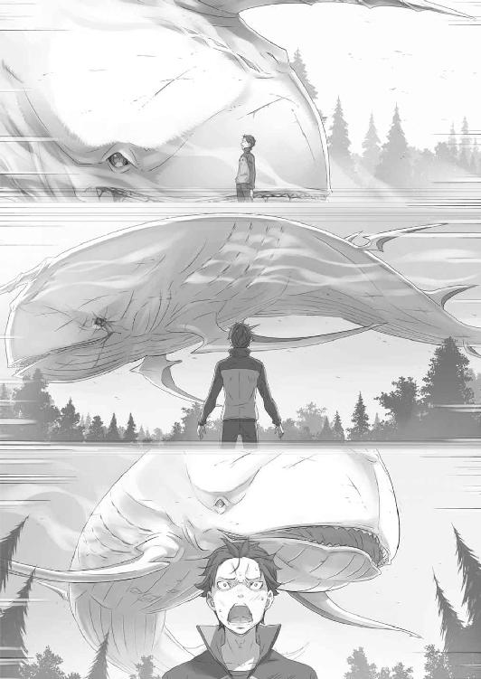
第四章 『絶望に抗う賭け』
１
高く高く、遠く遠く、重なり合うように嬌声が響き渡る。
霧の蔓延する世界で、巨体を揺らして遊泳する魚影が合わせて三つ。
全身の歪な無数の口から、ガラスを掻き毟るような音を発し続ける異形の存在。数多の旅人を食らい、数え切れないほどの命を無に帰してきた悪意の怪物。
ただの一体ですら人々に絶望を与えるのに十分な力を持つ化け物、それが今や三体にまで数を増やし、抗おうとする人間たちを嘲笑っていた。
頭上に浮かぶ白鯨を見上げ、誰かが膝を突く音が小さく届く。次第にそれは連続し、高い音を立てて武器を取り落とす音が連鎖した。
見れば、討伐隊に参加していた騎士の一人が肩を落とし、下を向いて顔を覆いながら蹲っている。肩を震わせ、喉を嗚咽が駆け上がるのを誰にも止めることができない。
その騎士の周囲にいた仲間たちもまた、誰一人かける言葉を持たなかった。
人数を揃えて万全の装備を持ち込み、機先を制して火力を叩き込み、これでもかと攻勢をかけた上での──この理不尽な状況だ。
精神汚染による兵力の半減は深刻で、残った主戦力もまた新たに出現した白鯨の奇襲により粉砕されてしまった。
残る力を結集しても、それは最初のこちらの戦力の半分にも満たない。その上で相手にしなくてはならない魔獣の数は三倍──勝ち目など、あるはずがない。
誰もが一瞬で悟った。自分たちの命が、目的が、ここで潰えるのだと思い知らされた。
魔獣の恐ろしさとおぞましさ。そしてその魔獣に奪われた大切な絆の重み。
その絆に報いることのできない自分たちの無力さに、どうしようもなく。
積み上げてきたものが崩れ落ち、支え続けてきた心が折られたとき、その場に膝を屈することを誰が責めることができるだろうか。
理不尽で、どうにもならない現実を前に、誰に諦めを否定することができるだろうか。
「──呑み込ませるな!!」
ふいに、怒号が沈黙の落ちかけた平原に大きく響く。
声に思わず顔を上げれば、地を蹴って白鯨の一体に飛びかかる影──給仕服の裾を翻して、その手に凶悪な棘付きの鉄球を握る少女の姿が見えた。
豪風を纏い、唸る鉄球が動きを止めていた白鯨の鼻面を直撃。固い外皮を易々と打ち砕き、露出する骨と肉を抉って貫き、なおも破壊の傷口を広げる。
絶叫が上がり、首を持ち上げて空へ上がろうとする白鯨。
その尾を地面から伸びる氷の刃が突き刺し、身をよじる胴体に旋回する鉄球が容赦なく直撃、小柄な少女の一発に白鯨の巨躯が揺らぎ、血がぶちまけられた。
「腹に呑み込まれる前なら、まだ助け出せるはずだ──！」
痛む肩を押さえて、額から血を流して叫んでいるのは少年だった。
前に出て、鉄球を振るう少女に指示を出し、戦いに参戦することのできない己の無力さを歯痒く思う気持ちで顔をしかめ、それでも彼は足を踏み出す。
少年の傍らに地竜が立った。その背にゆっくりと跨り、明らかに乗り慣れていない不格好な姿勢で、しかし力強く手綱を握り締めて、
「まだだ！ ──まだ、何も終わっちゃいない!!」
諦めに支配された騎士たちの前で、己の心を奮い立たせるように、顔を上げて、歯を剥き出し、目を見開いて、白鯨を睨みつけて、少年は叫んだ。
「──このぐらいの絶望で、俺が止まると思うなよ!!」
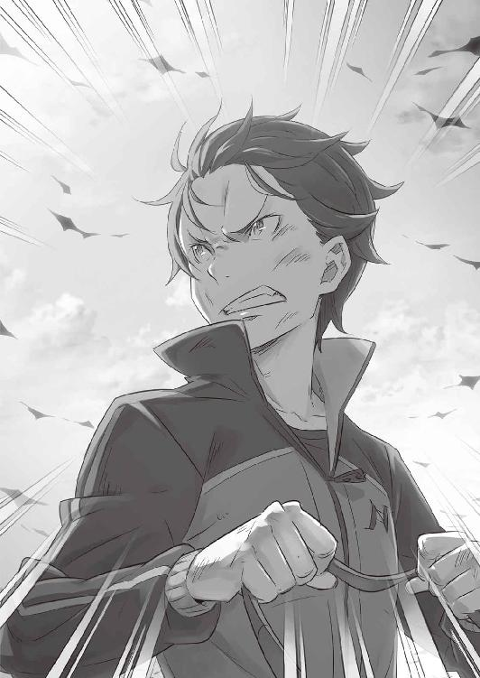
２
絶望の足音が近付いてくるのを、スバルははっきりと実感していた。
頭上に一体、背後に一体、目の前に一体──合計で三体、冗談じゃない。
一体だけにどれだけこちらの戦力を注ぎ込み、あそこまで傷を負わせたと思っているのか。それで都合が悪くなれば、仲間を二体呼んで本番開始、ふざけるな。
運命はいったいどれだけ、理不尽にこちらを翻弄すれば気が済むというのか。
リカードに庇われる形で地面に投げ出されて、倒れたままの姿勢でスバルは歯を食い縛る。そうして奥歯を噛んでいなければ、弱音が、嗚咽が、こぼれ出そうだ。
スッと、目の前が暗くなるような錯覚。
受け入れ難い事態に脳が負荷に耐え切れず、そのまま意識が失望感に切れそうだ。
ふと、見慣れた絶望が嘲笑しながら、馴れ馴れしく肩に手を回してくるのがわかる。
『──なぁに、そろそろ今回も諦める頃合いだろう？』
顔も見えない薄暗い影が、聞き慣れた誰かの声で薄笑いしながら諦めを促してくる。
その言葉にはっきりと、スバルは目の前に立ち塞がる事態の重さを受け入れた。
周囲、騎士たちもスバルと同じように、諦めに膝を屈しているのが見えた。
彼らにも、目の前の状況がどうにもならないと理解できたのだ。抗うことを始める気概さえ奪われて、誰もが瞳から力を失い、武器を握る気力を吹き消されている。
志が折られる姿を目の当たりにし、肩を組む絶望に身を委ねかけて、気付く。
すぐ傍らに、スバルと同様に地竜から投げ出されたレムがいる。横倒しになった彼女は半身を起こし、その整った横顔に悲痛な感情を浮かべていた。
強張る頬に青ざめた唇、震える瞼。
こうしてじっくり見つめると、睫毛が長いんだな、と何気なく思う。
──笑っている方がずっと似合うと、そうも思った。
だから、
「てめぇの出番は、もうずっとこねぇよ」
馴れ馴れしく、肩に回っていた腕を乱暴に振り払う。
そのスバルの行動に驚いたように口をへの字に曲げる影へ、笑顔を向けてから思い切り右ストレート──黒い影が粉々になり、同時に体の震えが止まった。
くだらない。情けない。迷っている暇も、足を止めている時間もどこにもない。
鯨が二匹、増えたからなんだ。
手足は動く。顔も上がるし、目も見えている。声は出る。声は届く。レムがいる。レムが生きてる。何もかもまだ、拾うのを諦める場面じゃない。
──立て。
幾度も、幾度も、繰り返し繰り返し、心をへし折られてきた。
──立て。
理不尽な運命に振り回されて、そのたびに絶望の終焉を押し付けられてきた。
──立て。
もう駄目だと全てを投げ出し、何もかもを打ち捨てた先へ逃げ出そうとして、それすら許されないと、自分の心に向き合わされた。
──立て。
何のために？
「このときの、ためだろうがぁ!!」
拳を地面に叩きつけて、起こした半身に勢いをつけて立ち上がる。
吠えて、顔を上げるスバルの方を、驚いた顔でレムが見た。
その彼女を見下ろし、手を差し伸べて、スバルは眼前の白鯨を睨みつける。
「まだ終わらない。──終わりにしない」
「......スバルくん」
「やるぞ、レム。見せ場だ」
おずおずと、伸びてくる手をもどかしく掴み、引き上げる。
起き上がった少女を胸に抱きとめて、スバルは間近に迫るその顔と向き合い、
「諦めるのは似合わねぇ。俺も、お前も──誰にでも！」
３
吠えるレムが猛然と白鯨に飛びかかり、右の拳を岩肌に叩きつけて体をよじ登る。左腕が振り回す鉄球が激しい音を立てて削岩し、血飛沫をぶちまけ白鯨が苦鳴を上げた。
レムが攻撃するのは、背後からヴィルヘルムを呑み込んだ一体だ。咀嚼するように顎が動いたのは見えたが、あの剣鬼がされるがまますり潰されたとは考え難い。
「頭が潰れてなけりゃ、どうにか引っ張り出してやらぁ──！」
手綱を引き、スバルはあまりに頼りない感覚の中で地竜の背に体重を預ける。
レムではなく、スバルが自身で手綱を操るのはほとんどぶっつけ本番だ。
フリューゲルの大樹到着までの道のりと、到着してからの自由時間──スバルが騎竜のための練習に費やせたのは、そのわずかな時間だけだった。
元の世界での乗馬の経験なども一切ないスバルにとって、ほんの数時間の練習で地竜を自在に操ることができるようになるはずもない。
方向と速度を指示し、あとは振り落とされないようしがみつくのが精一杯だ。
それでも知能の高い地竜は、スバルの意図と実力を完璧に把握している。自らスバルを騎手に選んだ漆黒の地竜は、未熟な騎乗者を落とすまいと気遣ってくれていた。
いい地竜だ。足が速くて、体力もあって、何より超賢い。今からお前の名前はパトラッシュだ。忠義に厚い相棒、そう考えたらそれしか名前が思いつかなかった。
「行くぜ、パトラッシュ！ 鯨の鼻先でくるくる回れ！」
高らかに叫び、手綱を弾いて地竜を走らせる。応じるパトラッシュが前のめりに駆け出し、強大な白鯨目掛けて恐れを知らずに突っ込んでくれる。
体に取りつくレムを振り落とそうと身をよじっていた白鯨が、スバルの接近を感じ取って首を思わずこちらへ向けた。その横っ面に、
「スバルくんの匂いを嗅ぐのはレムの特権です──！」
飛び上がり、砲弾のような威力の蹴りをレムがぶち込んだ。
巨大な顔面が大きくぶれ、そこにさらに追撃の鉄球が直撃する。回転する鉄球が白鯨の頬をぶち抜き、奥歯をへし折って血と唾液が草地を赤黒く汚した。
傷口から黄色い体液を垂れ流し、絶叫する白鯨。その身がついに地に落ちると、まるで陸に上がった魚のように見境なしに暴れ回る。
大地が抉られ、土塊が激しく散乱する。振り乱される尾が地面を割り、風を薙ぎ、不意打ち気味にスバルの真横へと接近──あわや直撃というところで、
「ババンとミミさんじょー!!」
子猫の獣人が打撃の寸前に割り込み、手にした杖を振ると魔力の防壁が展開した。
黄色の輝きが打撃を跳ね返し、生まれた間隙をライガーと地竜が一気に駆け抜ける。
息をつき、スバルはすんでのところで救ってくれた子猫──ミミを振り返り、
「助かった！ 反撃開始とかかっこいいこと言っていきなり終わるとこだぜ！」
「ふふーん、もっと褒めてもいいよー！ でも、きょーのところはおにーさんがすごー頑張ったからおあいこにしたげるー！」
「頑張った......？」
胸を張って、それからスバルに笑いかけてくるミミに首をひねる。
すると少女は橙色のお下げ髪を軽く指で弾いて、
「みんなブルって立てなくなっちゃってたのに、一番早く立ち直ったでしょー？ えらいぞー、すごいぞー、ミミの次だけどねー！」
「大したことじゃねぇよ。このぐらいで絶望なんて、してやれねぇってだけだ」
大声で称賛してくるミミにそう応じて、スバルは唇を噛みしめる。
そうだ。称賛されるようなことではない。
ここまで、スバルがどれだけの辛酸を舐めて、味わってきたと思っているのか。
それまでの抗えない絶望と比べれば、まだまだ戦いようのある現状──どうして、諦めに浸っている余裕などあるだろうか。
諦めと遊んでいる暇があるなら、希望を探して血反吐を吐いている方がいい。
諦めるより抗う方が、ずっとずっと、ずっと楽なのだから。
「────ッ!!」
弾み、真っ直ぐ駆けるパトラッシュの正面、唐突に現れる魚影が大口を開ける。
喉の奥がグロテスクに見える至近距離で、スバルはとっさの回避行動に身を傾ける。だが、口内に充満する『霧』が散布される方が身躱しよりわずかに早く──、
「口を閉じろ──！」
大上段から振り下ろされる不可視の刃が、開いた顎を縦に斬撃する。
その威力に強引に口を閉ざされ、地を身悶えする白鯨の横をスバルとミミが抜けた。間一髪の危機回避に顔を上げれば、戦場の向こうからクルシュが駆けてくる。
彼女は走るスバルに地竜を並べると、白鯨を忌々しげに睨みつけ、
「一見して、事態は最悪にあるな。ヴィルヘルムはどうした」
「あんたが覚えてるってことは、少なくとも霧に掻き消されちゃいねぇ。......レムの奮戦次第ってとこだ」
首を巡らせ、反転してこちらに狙いを定める白鯨を警戒しながらスバルは答える。
それを受け、クルシュもまた奮戦するレムの方を見た。鉄球が打ち下ろされるたびに鮮血が噴き、白鯨は自身の血の海で地響きを立てて跳ねる。
「どう見る、ナツキ・スバル」
「どう見るってのはどういう意味だ？ 勝ち目って意味なら、俺の生死が色々と分けるって自分可愛さまじりに言ってみるが」
「そうではない。おかしいとは思わないか？」
背後に迫る白鯨の鼻っ柱に、クルシュが不可視の斬撃を追加する。追撃の出鼻を潰されて悶える白鯨、それを背後にスバルは「おかしい？」とクルシュを見た。
「白鯨の数が三体に増えた。単純に見れば絶望的な状況にある。だが、事実として白鯨が群れを成す魔獣だとしたら、そのことが伝わっていないことなどあるものか？」
「言いたいことがイマイチわからねぇ」
「何かカラクリがあるはずだ」
はっきりと断言し、クルシュはその凛々しい面差しをスバルへ向ける。
自然、その強い眼差しに射抜かれて、スバルは背筋を伸ばした。
「それを、見つけろってことか」
「時間稼ぎは卿の逃げ足と、それを援護する形で我々が行う。いずれにせよ、そう長くはもたない。何とかするぞ。──撤退など、もはや選択肢にないのだから」
言い切り、クルシュの地竜が方向を変えてスバルから離れていく。
彼女は大きく迂回し、睥睨する白鯨を回り込みながら、次々と散り散りになっていた討伐隊の各隊に顔を見せ、声を上げる。
「立て！ 顔を上げろ！ 武器を持て！ 卿らは何のためにここまできた！」
「────」
絶望と悲嘆に暮れて、顔を俯けていた男たちが視線を上げる。
彼らの前でクルシュは堂々と、抜き放った宝剣を天にかざしながら、
「あの男を見ろ！ あれは武器もなく、非力で、吹けば飛ぶような弱者だ。打ち倒されるところを、私もこの目で見た無力な男だ！」
宝剣が、走るスバルの背を指し示し、クルシュは声をさらに高く上げる。
「他の誰よりも、あの男が一番弱い！」
そうだ。クルシュの叫びは真実だ。スバルは弱い。誰よりも弱い。
戦う力がない。生き残るだけの能力もない。何度も何度も挫かれて、そのたびに打ちひしがれてきた敗北だらけの男だ。
「そんな一番弱い男が、まだやれると誰よりも早く吠えている」
この場の誰より無力な男が、まだ戦えると歯を食い縛り、痛みに耐えて、涙を堪えて、血反吐を吐きながら、それでもまだ抗おうと上を見ている。
「それでどうして、我らが下を向いていられようか」
「────」
「我々の力は弱く、束ねたとて魔獣の喉元に届くかわからない。だとしても、最も弱い男が諦めていないのに、どうして我らに膝を折ることが許される！」
「お、おお......」
士気を折られた男たちが顔を見合わせ、震える膝を鼓舞して立ち上がる。
取り落とした武器を拾い上げ、主の騎乗を待つ地竜がその傍らに寄り添った。
手を伸ばし、手綱を握り、膝を屈したはずの騎士たちが地竜の背に跨る。
地竜が嘶き、その背の上で騎士たちもまた、剣を抜いて喉を嗄らした。
雄叫びが上がる。自らの心を奮い立たせるように、己の魂を誇るために。
戦う弱い少年の後ろで、蹲って下を向くことの愚かしさを、吠えて猛って追い払う。
──その感情を、人は『恥』と呼ぶのだ。
『恥』が恐れを、諦めを、足を止めるあらゆる感情を切り開き、騎士たちに顔を上げさせ、前へ踏み出す力を取り戻させる。
「行くぞ！ 総員、突撃!!」
「おおおぉぉ──!!」
屈したはずの魂を奮い立たせ、騎士たちが再び前進する。
地竜の軍勢が土煙を立ち上らせ、総勢で五十を下回る数になった討伐隊が、クルシュを先頭に刃の届く二体の白鯨に猛然と襲いかかった。
その討伐隊の膨れ上がる士気と、それをやってのけたクルシュの一喝を聞き、スバルは口の端に苦笑が浮かぶのを堪え切れない。
「弱者だの負け犬だの、好き放題言ってくれやがって......」
否定する気にもならないのだから、それこそ重症だといえる。
好きに呼べばいいし、好きに利用してくれればいい。スバルが無力で、負けっ放しで、折れっ放しの投げ出しっ放しでここまでやってきたのは事実だ。
それがわかっているから、スバルは今、ここで吠えることができる。
負けっ放しで終われないし、折れっ放しにはしておけないし、投げ出しっ放しはやめ時であるし、無力であることは許されない。
「頼むぜ、パトラッシュ。もっぺん、鼻先まで行って即離脱だ！」
地竜が斜めに傾いで地を削り、鋭いターンを切って再度、白鯨目掛けて吶喊する。
眼前、体に取りつくレムを振り落とそうと躍起になっている白鯨に、クルシュと別れた混成小隊が援護の攻撃を入れている。騎士剣が火花を上げて白鯨の外皮を切り裂き、距離を取りながら巨躯と並走する騎竜兵が魔石による爆撃を加える。
絶叫を上げ、地べたを白鯨がのた打ち回る。その痛みに悶える挙動ですら、間近にいる人間にとっては避け難い暴力だ。一騎の地竜と騎手がその一撃に吹き飛ばされ、超重量の下敷きになって骨の砕け散る音が鳴る。
血が噴き出し、命が一つ潰える。──それをスバルは目に焼き付けた。
背筋に寒気が走る。間に合わず、救えなかったそれはスバルの決断の結果だ。
この戦いを始めると、スバルが決断させたその結果。目を逸らすことはできない。
それを受け入れることを拒絶した瞬間、スバルは『恥』の感情に負ける。
己の心に負けたとき、最も唾棄すべき自分の弱さと向き合ったとき、それを深く優しく拒絶してもらったことがあった。だから、それ以上は甘えられない。
暴れる白鯨が、スバルの接近を察して全身の口を開ける。
ゾッと血の気が引く感覚を味わいながら、地竜の全力に信頼を預けて風を切る。
──その真横を、無数の口から放たれる消滅型の『霧』が掠めていく。
仮に指一本でも触れれば、そこから掻き消されてスバルの存在は終わりだ。
全身を『死』とは異なる喪失感に呑まれ、誰の記憶からも消えてなくなって終わる。
だが、
「エル・フーラ！」「させてたまるかぁ！」「どこを見てやがるんだよぉ！」
風の魔法が霧を払い、怒号を上げる刃が、唸る槌が、霧を放つ口を叩き潰す。
騎士たちの援護で霧の弾幕がわずかに薄まる。それでも霧の火力は絶望的だが、全身に迫る消失の気配にスバルの全神経が研ぎ澄まされた。
走る順路はパトラッシュに任せ、その背の上でスバルの肉体が回避運動を取る。腕を跳ね上げてプッシュアップ。そのまま倒立して後ろから迫る霧を避け、完全にバランスを崩して転落しかけるが──、
「こん、じょぉぉおおお!!」
握りしめた手綱と、鞍に膝を突っ掛けてかろうじて堪える。元の世界で意味もなく木刀を振って鍛えた握力が、揺れと振動に滑り落ちかける掌を寸前で引き止めた。
地面に爪先を引きずりながらパトラッシュに掴まり、弾幕を抜ける。
視界が晴れて、速度を緩める地竜の気遣いに合わせ、スバルは傍から見ればこれ以上ないほど無様な格好で跨り直す。元から少ない体力をさらに減らし、そのまま今度はもう一方──クルシュたちが攻勢をかける白鯨へと足を向けた。
「掻き回して......はぁっ、クソ、命張ってるばっかじゃねぇぞ、頭も回せ！」
荒い息を吐き、再び命懸けの囮行為に身を投げ出しながら、スバルは先ほどのクルシュとの会話で持ち上がった『カラクリ』について思考を巡らせる。
魔獣『白鯨』の生態について、スバルはこの場の誰よりも無知である。
その存在がもたらしてきた被害も、大征伐のことも字面以上の実感は持っていない。
そんなスバルだから気付ける、そんなスバルにしか気付けない、何かがあるはずだ。
十四年、妻の仇として白鯨を追い続けてきたヴィルヘルム。
執念が実り、この戦場へ辿り着いた剣鬼が、『白鯨が複数』などという致命的な情報を見過ごすことなど考えられない。当然、この現象は未知のものであったはず。
ならば何故、誰にも知られていない。──否、知られずに済んできたのか。
「どうして急に増えた。......元から三匹、ってのは前提としておかしい」
何か、取っ掛かりが掴めそうな気がする。
だがその前に、パトラッシュの懸命な疾走が白鯨の嗅覚の届く範囲に到達。
宝剣で斬撃を加えるクルシュを追っていた白鯨の視線が、ぐるりと大きく巡ってスバルの方へと向けられる。同時、開かれた口腔に溜め込まれた濃霧が、大気を打ち破る咆哮と共に膨大な破壊となって吐き出された。
鋭く角度を変えて踏み込むパトラッシュ。迫る霧の暴威からその身を逃れさせるが、勢力範囲から外れるには半歩足りない。──そのスバルたちの足りない半歩を、
「それはボクたちが！」「さっせないぞぉー！」
割り込んできたミミとヘータローの二人が稼ぐ。
双子の猫人が口を開き、「わ」と「は」の咆哮が重ねて放たれる。
高い音の交わりが波紋を生み、それは絡み合いながら破壊の力へと変換された。そして莫大な振動波が波打つように平原を耕し、迫る霧すらも正面から吹き散らす。
「うおおお!! すっげえええぇぇぇ!!」
「そーでしょーでしょでしょー！ もっと褒めろー！ うりゃー！」
「お姉ちゃんてば......」
スバルの端的な称賛に、ミミが胸を張って満足げに頬をゆるめる。その隣を走るヘータローが吐息をこぼし、それから二人はスバルを間に挟むように並走すると、
「援護します。ナツキさんの存在がないと、この戦いの勝ち筋が見えませんから」
「バーってやって、ドカーンってやって、ズババンバーンってやるんじゃダメなの？」
「バードカズババーンってやるのに、ナツキさんの協力が必要なんだよ、お姉ちゃん」
「へー！」
と、スバルを挟んで緊張感に欠ける会話を続ける。
事態の切迫ぶりを少しも理解していない風なミミをさて置き、スバルは話の通じそうなヘータローの方へ顔を向けると、
「さっきの合体攻撃、途中で白鯨にぶち込んだやつだよな。まだいけんのか？」
「マナを絞らなきゃなので、あと一回がボクは限界です。──団長の回復が済むまで、ボクとお姉ちゃんでスバルさんを守りますから」
「リカードの奴、生きてるのか!?」
思わぬ朗報にスバルが声を上げると、ヘータローは「はい」と頷く。
その態度にスバルの内心に安堵が広がる。リカードが乗っていたライガーが無残に殺されたのと、大量の鮮血を見て、下手すれば跡形も残らず消し飛んだものかと。
「瀕死の団長から、スバルさんに伝言もあります」
「伝言って......高くつくぞ、とかじゃねぇだろな」
「それは後で本人が直接言ってくると思いますけど......こうです。こほん。『なんや、軽ぅなっとるで。ワイが死なんかったんがその証拠や』。以上です」
律儀にカララギ弁まで踏襲して、リカードの声真似で伝言してくれるヘータロー。そのモノマネのクオリティには言及せず、スバルは伝えられた言葉の意味を考える。
文字通り、リカードが命懸けでスバルへ届けたメッセージだ。
そこに込められた意味と、その真意に意識を向ければ──。
「モノマネ全然似てねぇな」
「うん、チョー似てない！ すごー才能ないぞー！ ダメだこりゃー！」
「そんなこと言ってる場合じゃないよぉ！」
空気を読まないスバルの物言いに、ミミが無邪気に同意する。ヘータローがその感想に泣きそうな声で反論するが、スバルはそれを聞き流して空を見上げた。
二手に分かれた討伐隊と揉み合い、いまだ激戦を繰り広げる二体の白鯨。
一方、空に浮かぶ白鯨は地上の戦いを俯瞰し、悠然と高所からこちらを見ている。
その態度が、どこか不自然なようにスバルには感じられた。
討伐隊は主力を失い、減らした小隊をさらに二つに分けて戦っている状態だ。スバルの存在が撹乱の役目を果たしているとはいえ、空に浮かぶ白鯨がどちらかの戦場に加勢するようなら、それだけで戦局は一気に傾く。片方が食い破られれば、それで終わりだ。
それなのに、あの白鯨が何もしない理由は──。
「リカードの伝言......」
軽い、とリカードはスバルに伝えた。
自分が死ななかったのはそれが理由だと、命懸けで。
そこにどんな意味があるのか。軽いとは何が軽かったのか。命か。確かに戦場ではそれは軽い。だがそういう意味ではなかったように思える。軽い、軽いとは。
「このヘビーでベリーハードな状況で、何が軽いってんだよ......！」
パトラッシュに全身を預け、再び白鯨の鼻先を突っ切る。
クルシュたちに取りつかれていた白鯨が口腔をこちらに向けるが、開いた口の中にクルシュの見えない斬撃が、投げ込まれる魔石が爆裂のダメージを与える。
騎士たちの雄叫びが上がる。一人、また一人と確実に数を減らされながら、尽きることのない士気だけが今や戦線を支えていた。
死を目前にしながらも、抗う覚悟を決めた人間はここまで強くなるものなのか。
討伐隊のフルメンバーで挑んでやっとだった白鯨に、主力を失って兵力すら減らした武力が拮抗しているのだから。これを意思の力と言わずして──、
「いくらなんでも、意思の力万能説に期待しすぎだろ」
そこまで考えて、スバルはハッと顔を上げる。
背後、置き去りにした白鯨を振り返り、遠ざかる魔獣の顔面を睨みつけた。
そして、違和感の正体に気付く。
「だとしたら......！」
歯噛みし、湧き上がった可能性の奔流にスバルの全身を震えが走る。
握る手綱に意思を伝え、パトラッシュが鋭い切り返しで猛然ともう一体の白鯨へ。
奮戦するレムが鬼族の力を解放し、ライガーの一頭に跨りながら鉄球で白鯨の胴体に次々と風穴を生んでいる。彼女はそのエプロンドレスを魔獣の返り血で汚しながらも、接近するスバルに気付いて気丈にも微笑む。
鮮血に彩られた微笑みは凄惨ではあったが、不謹慎にもスバルはレムに見惚れた。
この劣勢そのものの戦況で、それでもレムは無謀なスバルの覚悟を信じている。
その信頼に、親愛に、応えなくてはならない。
「────」
言葉を交わすこともなく、スバルの地竜とレムのライガーが交錯し、スバルは白鯨の鼻先へ、レムは白鯨の尾の方へ向かって騎獣を走らせる。
足を止めて対話する必要などない。スバルにはスバルの役割が、そしてレムにはレムの役割があることを、互いがすでに知っているのだから。
白鯨の頭部側へ回り込むと、スバルの接近に気付いた魔獣が頭をこちらへ向けた。
巨大な目の上に出現する複数の噴霧口が、涎を垂らしながら白い霧を噴出する。
「どどーん！ ばばーん！ ずんばらばー！」
パトラッシュの周囲を、ミミの操るライガーが縦横無尽に飛び回る。
大犬の背中で決めポーズを取るミミが効果音を口にするたび、その手の中の杖が輝いて魔法障壁が霧を防御、スバルに着弾するまでの時間を稼いで回避させる。
「これはたかくつくんだぞー、おにーさん！」
「これが終わったら百回ぐらいありがとうって言ってやらぁ！」
「ならよーし！」
安上がりなミミの返答に背を任せ、並走する白鯨を追い抜き、追い越し、前に出る。
振り向き、スバルは白鯨と睨み合った。隻眼を真っ赤に染める魔獣は、羽虫の抵抗に煩わしげに甲高く鳴く。だが、その姿にスバルは自分の考えに確信が持てた。
この白鯨にも、そしてクルシュたちが対峙する白鯨にも、『左眼』がない。
「思った通りだ！ てめぇら、三匹いたんじゃなく──分裂してやがるな！」
空に浮かぶ、最初の一匹にも同じ傷が、左眼を無くした負傷が刻まれているはずだ。
──左眼の欠損、それは緒戦でヴィルヘルムが白鯨に与えた戦傷だ。
同じ傷を一匹だけでなく、他の二匹も共有している理由など明白だ。
空に浮かぶ一匹が分裂し、もう二匹を生み出したからに他ならない。
「一発が軽いのは分裂して戦闘力三分割だから！ こっちの人数が減ってても戦いになってるってのは、つまりそういうカラクリだろうが！」
不意打ちの一発がリカードを殺し損ねたこと。
兵力が激減した討伐隊が、増えた白鯨に対しても戦いになっていること。
──奇跡や意思の力、そういったご都合主義にことごとくスバルは見捨てられてきた。そんなひねくれ者のスバルだから、違和感の答えに辿り着くことができた。
消滅型の霧の威力は絶対的だ。それ故に、白鯨は耐久力を犠牲に手数を優先した。
数の暴力──そのことに討伐隊の心が折れていれば、戦いはそこで終わっただろう。
魔獣が人間の心の弱さを理解し、そんな心理戦を仕掛けてきたとは考え難い。だが、事実として白鯨の『分裂』にはそれだけの力があった。
もし仮にあの場で、スバルが諦めに逆らっていなければどうなっていただろうか。
吠えていなければ、なんてことは今のスバルにはわからない。吠えずにいた場合の未来を見る可能性、そんなものを今のスバルは欲さない。
もう二度と、白鯨共の面を長時間見るのなど御免被る──。
「──なんだ!?」
一つの結論を得たスバルの前で、こちらを追おうとしていた白鯨の動きが変化する。宙に浮かぶ体を地面に擦りつけ、体内の異物感に身悶えするような仕草、そこに、
「お姉ちゃん、今！」
「かゆいとこに手が届かないのってつらいよなー！ ミミもわかるー！」
好機と見たヘータローが飛び出し、白鯨の動きを誤解したミミもそれに続く。双子は息の合った動きで左右から白鯨を挟み、同時に口を開くと──、
「わ──！」「は──!!」
左右からの咆哮波に白鯨の胴体が大きくたわみ、衝撃波が外皮を抜けて内臓に通る。硬質の肌が弾け、亀裂が走り、出血した直後──、
「──ずぁぁぁあああ!!」
地面に擦り付けられる下腹が内側から膨らみ、血肉をぶちまけて破られた。赤黒い体液が濁流のように流れ出し、その流れに乗って外に吐き出されてくるのは、
「ヴィルヘルムさん!?」
白鯨に丸呑みにされ、生存が危ぶまれていた剣鬼の帰還だ。
暴れる白鯨を討伐隊が押さえ、その間にスバルはヴィルヘルムに駆け寄った。その全身を血で染めるヴィルヘルムは片膝をつき、剣を支えに半身を起こしながら、
「み、じゅく......油断を、しました......っ」
「喋らなくていいって！ ああ、クソ、どうしたらいいかわかんねぇけど、とにかく生きてんなら何よりだ。すぐにフェリスのとこに戻ろう！」
手を差し伸べかけ、スバルはヴィルヘルムの想像以上の負傷具合に息を呑む。剣を握る気力は残っているが、千切れかけの左腕を含めて瀕死の状態だ。
今すぐにでも治癒術師に見せなければ、命の灯火が燃え尽きてしまいかねない。
だというのにヴィルヘルムは、駆け寄るスバルの手を固辞する。寄りかかる剣に体重を乗せて、自力で立ち上がろうと奥歯を噛みしめた。
「ま、だ。まだまだ、私は......」
「言ってる場合かよ！ 鯨の前にあんたが死ぬぞ！ このぐらいじゃ死なねぇとか眠たいこと言うのも聞かねぇ！ 生き死にに関しちゃ俺の方が詳しいんだ！」
「な、にを......言われる......」
満身創痍のヴィルヘルムを一喝し、スバルは無理やりにその体を抱き起こした。すると言い争うスバルたちの下へ、猫人姉弟が合流する。
「おじーさんが出てきたぞー！」
「ヴィルヘルムさん、ご無事なんですか!?」
駆け寄ってきた双子は重傷のヴィルヘルムを見ると、即座にそれぞれが行動。ミミが老剣士の負傷に簡易的な治癒魔法を施し、その間にヘータローはスバルを見上げ、
「お姉ちゃんの治癒魔法でも、この傷はとても治せません。ナツキさんは、ヴィルヘルムさんをフェリックスさんのところまで？」
「ああ、そうだよ！ ヴィルヘルムさんがヤバいのは見ての通りだ。すぐに手当てしないと手遅れになる！ ホントなら俺が連れていきてぇんだが......」
振り返り、スバルは再起動を始めようとしている白鯨を睨みつける。
腹の傷は深く、傷口からの出血は止まっていないが、全身の口から霧を吐き出し続ける魔獣の方も、ヴィルヘルムと同じく戦意に陰りは見えない。
現状、戦力の拮抗に少なからずスバルの撹乱が貢献していることは間違いない。ここでスバルがヴィルヘルムを担いで抜けるのは、戦局を悪い方へ傾けかねない。
「だけじゃなしに、下手打つと俺がケガ人のところに白鯨を連れていきかねねぇ。ヴィルヘルムさん、お前らに任していいか？」
「それはボクらのライガーでやりますけど......何か思いついたんですか？」
スバルからヴィルヘルムを受け取り、体格差に苦労しつつもヘータローがライガーへ乗せる。彼はそれからスバルを見上げ、能天気に笑う姉の手を引いて、
「勝算があるならお聞きします。もしもダメなら、ボクはお姉ちゃんの手を引いてここから逃げなきゃいけませんから」
「えー、どーしてだよー！ まだあいつをやっつけてないのにー」
「お姉ちゃんは黙ってて」
ぴしゃりと告げる弟にミミが不満そうに唇を尖らせる。
そんな双子のやり取りを目にしながら、スバルは「そうだよな」と納得して頷いた。
「お前らは傭兵だ。俺やクルシュさん、鯨に恨みがある騎士たちと違って金で雇われてるって立場に過ぎない。......命まで懸ける義理はねぇよな」
「命を捨てる義理がないだけです。誤解されたく、ないので」
気弱そうな顔と態度だが、ヘータローは毅然とスバルに意見する。自分の腰ほどまでしかない小さな獣人を見下ろし、スバルは深々と息を吐いてから、
「悪ぃ、けど時間がねぇ。勝算は、あると思う。とりあえず、ヴィルヘルムさんは後方に下がってもらって......レムとクルシュさん、二人に話を通さなきゃだ」
傍らのパトラッシュの背に飛ぶように跨り、スバルは頭上へ視線を走らせる。
見上げた空、悠々と泳ぐ魚影を忌々しげに睨みつけて──。
４
「白鯨が分裂している、か」
「ああ、間違いねぇと思う。傷の位置と、戦闘力が根拠だ。ぶっちゃけた話、直接やり合ってるクルシュさんたちの方がそれは感じてるだろ？」
「レムは無我夢中でしたけど......でも、確かにそうかもしれません」
合流したレムとクルシュが、スバルの説明に納得した顔で首肯する。
ヴィルヘルムの後送をヘータローのライガーに任せ、一匹のライガーに相乗りする双子と共に、戦場の主戦力と『カラクリ』について話し終えたところだ。
主力が抜ける間、白鯨二体の抑えは騎竜隊と『鉄の牙』に委ねられている。士気の高さと連携の妙で誤魔化しているが、作戦会議に許される時間はほんの数分──。
その間に、白鯨打倒のための策を練り上げなくてはならない。
「──奴が元の一体より弱っている、という推測には同意だ。だが、それを理解したところでどうする。手負いで弱体化しているとはいえ、その脅威は依然こちらを上回る。いかにフェリスの治療といえど、下がった者の戦線復帰は望めないぞ」
「ヴィルヘルムさんとリカードが抜けてるのは痛いけど、無茶は言えねぇよ。それは抜きで勝ちにかかるしかない」
「三体の白鯨を殺す。口で言うのは易いが、高い壁だ」
「三匹も殺す必要はねぇよ。──一匹だけでいいはずだ」
ぴくり、とスバルの言葉にクルシュが眉を上げる。
興味深げにスバルを見る彼女に頷き返し、スバルは天上の魔獣を指差した。
「自分の分身二匹にビシバシ戦わせて、高みの見物決め込んでやがるあの野郎は、いったい何をしてやがるんだと思う？」
「加勢もしないで、傷を癒している......？」
自信なさげなレムの答えに、スバルは首を横に振る。
見たところ、魔獣といえどその生態は生物の範疇を逸脱していない。少なくとも、高速の自動再生能力なんてふざけた力は白鯨にはないようだ。
だとしたら、天上の白鯨の役割は──、
「奴が本体、か」
「そうだと、俺は睨んでる」
同じ結論に至ったクルシュに、スバルは頷いて同意を示す。
はっきり言って、全ては想像に過ぎない。
ただ、三体の白鯨のオリジナルが天上の一体なのは確実だ。そして増えた白鯨の倒し方の考察に、待ちの姿勢で構える奴の存在が一役買ったのも疑いのない事実。
「あいつが降りてこないのも、どっちの自分にも加勢しないのも、理由はひっくるめて自分がやられるわけにいかねぇからだと俺は思う」
「道理には合っている。しかし、逆を言うなら......」
「下にいる二匹は、殺しても本体の痛手にならないかもしれねぇ」
苦労して倒しても、屍が霧散して新たな個体に生まれ変わらないとも限らない。
そうなれば戦いは終わりの見えない無限ループに突入だ。結果、コンティニュー制限のない白鯨に対して、こちらが早々に音を上げるのは目に見えている。
「あれが降りてこない理由と、倒し方は繋がりました。でも、それでどうするんです？ あそこまで高いところを飛ばれると、攻撃する手段がありません」
静観していたヘータローが、リアリストらしい質問を飛ばしてくる。
子猫の問いかけに、クルシュは頭上の白鯨へと琥珀色の眼差しを突き刺し、
「加護を使った私の剣も、あの距離への攻撃では威力に期待できない。一太刀ならばあるいはと思うが、それで落とせる白鯨ではあるまい」
上空へ逃れた白鯨の高度は、おおよそ雲と同じ高さに達している。
最初の出現時よりさらに高い位置取りに、白鯨の性質の悪さが表れているようだ。
あの位置では魔石砲の射撃も、命中率を大きく下げることだろう。
「レム、あの野郎のすぐ近くに氷の山を浮かべてやるとか......」
「ごめんなさい。マナは手元から離れれば離れるほど、扱いが難しくなるんです。ロズワール様なら可能だと思いますけど、レムの腕では......」
打開策を目前に、自分の力不足を感じたレムが悔しそうな顔をする。
その彼女の答えにスバルは手を振り、仕方ないと答えながら空を仰いだ。
──考えていた作戦は、ある。
クルシュの答えと、ヘータローたちの答えと、レムの答えを待って、それで最善策が出るのであれば、採用したくなかった次善策が。
「ちっとばかし、賭けの要素が強すぎる作戦があるけど......乗るか？」
片目をつむり、スバルはその次善策を披露する前に彼女たちの覚悟を問う。
だが、それはそれこそ無粋な問いかけだったと言えるだろう。
──この場に馳せ参じた時点で、彼女らが賭け事に躊躇するはずがない。
──そんな大馬鹿者であることを、スバルは知っていたのだから。
５
──はるか高空から、眼下の争いを白鯨は静かに見下ろしていた。
戦場は左右に、ちょうど天を衝くような大木を中心として平原を割っている。
左右どちらの戦場でも、小さな人間たちが魔獣の巨躯に取りつき、その手に握った鋼を突き立て、光を生み出す石を振りかざし、小賢しく抗っている。
炎が立ち上り、魔獣の苦鳴が下から届くたびに、空を泳ぐ白鯨は白い霧を吐く。
平原に立ち込める霧は眼下の分体に味方し、矮小な敵を確実に劣勢へ追い込んでいた。
ちょこまかと動き回る影は時間の経過に、一つ、また一つと数を減らしていく。『霧』の中に呑まれ、その存在を世界から掻き消されていく。
全てを呑み干し、この無益な戦いが終わるのもそう遠いことではない。
戦力の拮抗が崩れ出し、瓦解が始まるのも時間の問題だ。
白鯨が人の知能を持っていれば、そう考えて自分の勝利を確信したことだろう。
だが、実際には白鯨にそのような知能はない。
白鯨はただ本能に従い、自身を滅ぼされぬように、相手を殲滅するための行動をする。
何故、そのような判断を下すのか、獣の本能に問うだけ無駄であろう。
故に白鯨は本能のまま、冷静に的確に、獲物を嬲り殺しにしようとしている。
「────ッ!!」
霧を吐き、地上を白く染め上げていく。
邪魔が入って中断しているが、白鯨には『霧』で世界を覆い尽くす使命がある。それもまた本能の指令であり、そうすることが白鯨の生きる意味だ。
そうして、眼下の光景から意識を切り離していた白鯨は、ふいにその巨大な隻眼をぎょろりと動かし、大地に意識を向け直す。
凄まじい勢いで収束するマナを感知し、その流れの根本を見たのだ。
「アル・ヒューマ」
膨大なマナの渦、その中心に青い髪の少女が立っていた。
跪き、時間をかけて練り上げたマナに指向性を与える少女の正面で、ゆっくりと構築されるのは鋭い先端を覗かせる長大な氷の槍だ。
十メートル級の凍てつく凶器が、その鋭い穂先を白鯨の中心へ向けている。
その威力は遠目にも脅威だが、射出される前に白鯨に気付かれたのは致命的だ。
「──お願い！」
少女の祈るような叫びを受けて、氷の槍が地上から空へ向けて打ち上げられる。
狙いは当然、遊泳する白鯨の胴体ど真ん中だ。
ぐんぐんと加速し、空を突き破る勢いで迫る氷の殺意──だが、それは加速を得るための時間と、発射の瞬間を見られていた失策により目的を果たせない。
白鯨が尾を振り、風を薙いで空を泳ぐ。それだけで、氷の槍の狙いは逸れた。
哀れ、狙いを外した氷槍はそのまま、白鯨の真横を通過して空の彼方へ──。
「────？」
氷槍が通り過ぎる瞬間、ほんのささやかな、何かが砕ける音が白鯨の聴覚に届いた。それは両者の質量の差を鑑みれば、もはや奇跡であったとさえいえる。
それが取り返しのつかない音であったと、悪魔めいた天の奇跡が白鯨に報せたのだ。
「──よぉ。こうして間近で見ると、超気持ち悪ぃな、お前」
白鯨の鼻先に、あまりに軽い感触が乗った。
ちょうど額の上に着地した存在に気付くのと同時、通り過ぎるはずだった氷槍が跡形もなく消失し、マナの拡散する波動を白鯨は嗅ぎ取った。
──次いで、頭頂部にいる、耐え難い悪臭の源にも。
「ついてこいや。言っとくが、俺はシカトできねぇほどウザさに定評のある男だぜ？」
悪臭が、悪意に満ちた笑みを浮かべて、そうこぼすのを白鯨は聞いた。
６
レムの魔法の氷槍に乗って上空へ向かい、そこで退魔石を砕いて離脱──白鯨に取りつく、というのがスバルの立てた乱暴な作戦の概要だ。
当然、猛烈なレムの反対があったが、そこは「俺はレムを信じてる！」の連呼で押し切り、無謀ではないと説き伏せてクルシュからも退魔石を引き受けた。
見え見えの大魔法ならば白鯨も避けるはずと予測し、そこにスバルという本命の罠を仕掛けた。逆に白鯨が避けなかった場合、氷槍の尻に掴まっていたスバルが衝撃で粉々になった可能性がある。ある意味、この戦いで一番の命の危機だった。
「それを言い出したら、この状況も紙一重......ってか、マジ怖ぇぇぇ！」
白鯨の鼻先に必死でしがみつき、スバルはそのざらつく肌と体毛の感触を掌に味わいながら、高空の風と強大な生き物の生臭さに顔をしかめた。
取りつくスバル──つまり、魔女の残り香の塊に、白鯨の様子が一変する。
それまで静観の姿勢だった魔獣が明らかに興奮状態に陥り、全身の口から霧と涎と哄笑を垂れ流して、荒々しくスバルを大歓迎してくれている。
「──うし」
白鯨の嬉しくない歓迎を受けて、スバルは大きく深く呼吸し、心を落ち着けた。
もちろん、ここからスバルが白鯨を墜落させる必殺技を放てるわけではない。
覚悟一つで開眼できるほど現実は甘くないし、この場で身を削る覚悟でシャマクをぶちかましても、前後不覚になった間抜けが手を滑らせて墜落死するのがオチだ。
だから、スバルが白鯨に取りついてすることは一つ。
「んじゃま、いっちょいこうか──覚悟決めて、な」
白鯨が行動を起こす前に、手を放したスバルの体が岩肌を滑り──自由落下の軌道に入った。前後不覚ではない間抜けが、地上へ向けて墜落を始める。
白鯨はその大掛かりな自殺を行うスバルの姿に頭を向け、それを追いかけようとわずかに身を動かしたが、何かを躊躇うようにその動きを止める。
このままスバルを見送れば、制空権を取ったアドバンテージは揺るがない。白鯨はそのことを本能で理解し、残り香の誘惑に耐えようと踏み止まったのだ。
なるほど、手強い本能だ。しかし、それでは困る。
故に、切り札を切らせてもらう。
「この高さなら他に聞こえる心配がねぇ。大サービスだ、よく聞けや！ てめぇのせいでレムが死んで、俺はすげぇトラウマ背負ったぞコラァ!!」
言い切った瞬間、暴風を浴びていたスバルの肉体が世界から切り離された。
全身の感覚が遠ざかり、それまで内臓が上へ持っていかれるような浮遊感に支配されていた意識が現実を見失い、時間の概念が存在しない場所へ誘われる。
直後──、
『愛してる』
何か、耳元で囁かれたような気がした。
次の瞬間──激痛がスバルの全身を、稲妻で焦がすように駆け抜けた。
見えない位置、背中側から侵入した掌が心臓を鷲掴みにし、荒々しく、しかし大切なものを確かめるかのように、きつくきつく締め上げる。
命を司る器官が手荒に扱われる現実感のなさ。
致命的な部分を他人に自由にされることの異物感。
絶叫を上げることすら叶わない世界の終焉は、風の音と自分の苦鳴に知らされる。
そして、
「戻って......きたぁぁぁぁぁ!!」
「────ッ!!」
眼前、大口を開けた白鯨が猛然と、スバル目掛けて急降下してくる。
禁忌の告白で魔女の香りが増大し、魔獣の本能がそれを上回る憎悪に塗り潰された。
咆哮を上げ、もはや眼下の争いなど失念したかのように正気を失った眼で、白鯨はスバルの存在だけを消し去ろうとばかりに襲いくる。
颶風を纏い、間にあった距離をぐんぐんと埋めてくる白鯨にスバルは恐怖する。
自由落下に任せる他ない状態で、この突進をかわす術はスバルにはない。このままでは地面に到達する前に白鯨に捕まり、ＢＡＤＥＮＤ11『魚の餌』まっしぐらだ。
このまま、では。
「──レム!!」
「はい、スバルくん！」
風に掻き消されそうなスバルの呼び声に、しかし確かに少女の声は応じた。
同時、スバルだけに囚われていた白鯨の横っ面に、真横から飛び出す氷柱が激突──開いた口の中を蹂躙し、黄色い歯をいくつもへし折って、その動きに遅滞を生んだ。
その隙を突き、自由落下中だったスバルの体を、パトラッシュに跨るレムがモーニングスターで絡め取る。
腰を締め付ける鎖に、強引に落下軌道を捻じ曲げられて内臓が偏る。「ぐげ！」とスバルは悲鳴を上げ、以前にも同じ衝撃を味わったことを思い出す。
こうして転落する体をレムに救われるのは二度目、一度目は王都へ向かう途中の竜車でスバルが足を踏み外したときだった。
「なんでも、経験しとくもんだ......」
今度は、気絶せずに済んだのだから。
鎖が手繰られ、スバルの体がいささか乱暴にパトラッシュの背中に落ちる。そこでは腕を広げるレムが待ち構えており、スバルはその胸の中に飛び込む形だ。
柔らかな衝撃と、温かい感触に頭が埋まり、スバルは息を吐いた。
「助かった！」
「ごちそうさまです」
「何言ってんの!?」
頬を染め、スバルを抱き留めたレムの胸の中、大慌てで顔を上げる。
すぐ傍らを、白鯨の顔面が通り過ぎ──、
「────ッ!!」
勢いを殺し切れず、白鯨が頭から地面に激突。
轟音と土煙が爆砕された地面から立ち上り、その威力に大地が激震した。
爆風のような風を浴びながら、スバルはパトラッシュに指示して全力疾走──その背後から、土煙をぶち破って白鯨が飛び出してくる。
凄まじい威力にその頭部をぐしゃぐしゃにして、なおも白鯨は我を忘れた絶叫を上げながらスバルに追い縋る。
そのあまりの勢いに、悠然と空を泳いでいた姿は見る影もない。泳ぎ方はメチャクチャになり、風を追い越すようだった速度はパトラッシュといい勝負。
だが、気迫だけは圧倒的だ。
地面を削り、大地を尾ではたきながら、猛然と白鯨が背後に迫る。
前傾姿勢で体重を全て預けて、スバルはパトラッシュの底力に命を賭ける。
ここまで必死で懸命に、スバルに尽くしてくれた地竜だ。短時間ではあるが、命を乗せて走ってもらうに相応しいだけの信頼をスバルは抱いた。
「頼むぜ、パトラッシュ！ ドラゴンなんだろ!? かっこいいとこ見せてくれ！」
「──ッ！」
パトラッシュが嘶き、速度が一段と上がったのを風に感じる。
白鯨の咆哮が轟き、鼓膜が乱暴に揺すられて世界がぼやけるのがわかった。
真っ直ぐ、真っ直ぐ、ただひたすらに走り、走り、駆け抜け。
泳ぎ、泳ぎ、猛然とスバルを食らい尽くそうと迫りくる白鯨。
そして──、
「喰らい、やがれぇ──!!」
「────ッ!!」
轟音が二連発で鳴り響き、直後に何かを引き剥がすような音が連鎖する。
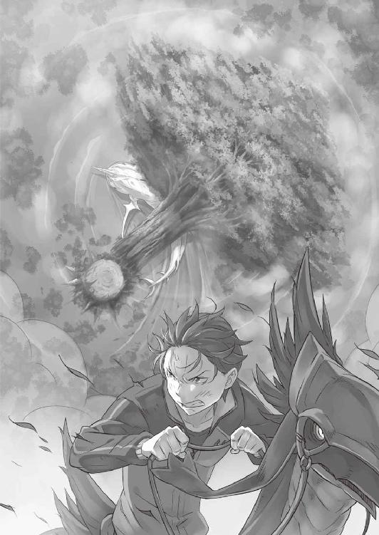
無視できない音の間隔は狭まり、近付き、やがてそれは強大な影を生み、重々しい音を立てながら真っ直ぐ白鯨へと──フリューゲルの大樹が倒れ込む。
「────ッ!! ────ッ！」
魔石砲、不可視の刃、咆哮波──束ねた破壊の力に根本を抉られて、賢者の植えた大樹が数百年の月日を経て、人に仇なす魔獣の巨躯を押し潰す。
天を衝く大樹の重量に、真っ直ぐ突っ込んだ白鯨が真上から叩き潰された。それまでの破壊とは次元の違う破壊力に、白鯨の強靭な外皮も防御の意味を為さない。
絶叫、凄まじい衝撃波がリーファウス街道を駆け抜け、霧を爆風が打ち払う。
大樹の下敷きになり、身動きを封じられた白鯨の苦しげな雄叫びが尾を引く。しかし、それだけの威力を身に受けて、なおも命を潰えることのない生命力。
もがき、超重量から逃れようとする白鯨、その鼻先に──。
「──我が妻、テレシア・ヴァン・アストレアに捧ぐ」
主より借り受けた宝剣をかざし、一人の剣鬼が舞い降りていた。
この生死を懸けた激闘と、十四年に亘る執念と、四百年にも及ぶ人と白鯨の争いの歴史に、幕を下ろす──そのために。
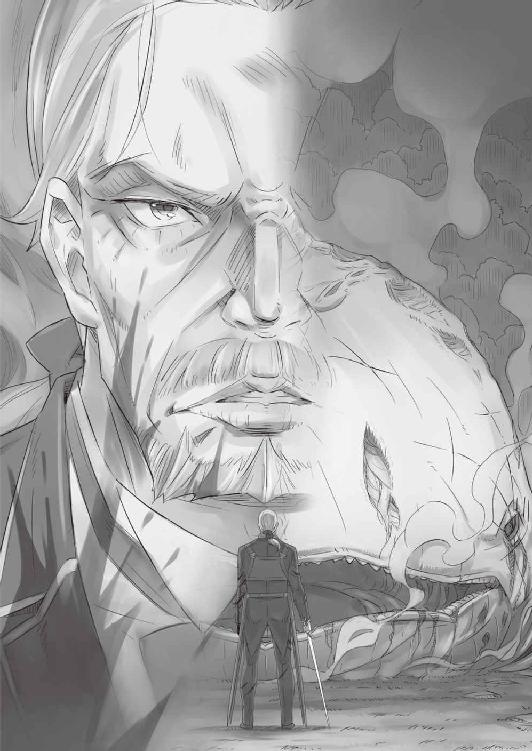
第五章 『ヴィルヘルム・ヴァン・アストレア』
１
──ヴィルヘルム・トリアスという人物の話をしよう。
ヴィルヘルムはルグニカ王国の地方貴族、トリアス家の三男として生を受けた。
トリアス家は王国の最北、グステコ聖王国との国境沿いを領地として任される歴史ある旧家である。とはいえ、武門の徒として知られたのも過去の話であり、ヴィルヘルムが生まれた頃には、小さな領地と少数の領民を抱えるだけの弱小男爵家だった。
有体に言えば、没落貴族の一例に過ぎなかった。
兄たちとは歳が離れていたこともあり、ヴィルヘルムは家督を継ぐといったしがらみと無縁に育った。また、兄たちと違って文官としての適性に欠けた彼に、未来と呼ぶべき道を示したのは一振りの剣との出会いだった。
屋敷の大広間に飾られた剣は、かつてトリアス家が王国に武名を連ねていた頃の名残であり、今のトリアス家にとっては観賞用でしかない宝剣の成れの果てである。
切っ掛けは、ヴィルヘルムも覚えていない。
ただ、手入れすらままならない宝剣を鞘から抜き放ち、その鋼の美しさに魅了された瞬間のことははっきりと覚えている。
気付けば宝剣を勝手に持ち出し、裏山で朝から晩まで振るのが日課になっていた。
初めて剣に触れたのが八つの頃、剣の重さと長さにも慣れ、手足が伸びて不格好さと縁遠くなった十四の頃には、ヴィルヘルムは領地で一番の剣の使い手となっていた。
「都に出て、王国軍に入る。そこで、騎士になる」
男の子なら一度ぐらいは誰でも考えるような、そんな頭の悪い夢を言い残して家を飛び出したのも、十四の頃だった。
切っ掛けは嵐の夜、一番上の兄との口論だ。剣ばかりに没頭し、領地の悪ガキとつるんで無頼を気取るヴィルヘルムに、兄は「将来は何をする」と説教を始めた。
剣を振り、自分が強くなっていることを実感すること、それだけが喜びだった。
そんな未来の展望一つ持たない弟への、兄の言葉は厳しいものだった。正論ばかりを畳みかけられ、言葉に窮したヴィルヘルムから飛び出したのが前述の発言だ。
あとは売り言葉に買い言葉、お約束の「兄貴に俺の気持ちがわかるものか！」が飛び出し、実際にヴィルヘルムもいくらかの金と剣だけ持って家を飛び出す結果になった。
予定外の出立だったが、ヴィルヘルムの王都への上京は無事に果たされた。
意気揚々と王都に辿り着いたヴィルヘルムは、早速とばかりに王城へと足を向け、王国軍の一兵卒として歴史に残るべくその門戸を叩いた。
今の時代であれば、そのような成り行きで城門を通ろうとする者は不逞の輩とみなされて、門前払いされるのが当然の結末だ。
しかし当時、王国は国土の東を中心に、亜人族の連合との内戦──亜人戦争が長く続いており、志願兵はいくら募っても足りないほどに切迫していた。
そこへ、多少なりとも剣を扱えると自分を売り込む少年が現れたのだ。諸手を挙げて歓迎され、ヴィルヘルムはさしたる障害もなく王国軍に入隊した。
そうして、挫折や苦労と無縁のまま、ヴィルヘルムは初陣の土を踏むことになる。
そこで初めて、少年は現実という壁を知る。故郷では右に出る者のいない剣の腕前も、戦場の実力者には通用せず、自らの無謀と自惚れに打ちのめされるのだ。
それが誰もが味わう、若さ故の挫折と初陣の洗礼なのである。
──そう。本来なら、誰もがそうなるはずなのだ。
だが、ヴィルヘルムの剣の冴えは、この時点ですでに実戦を知らない十五の若造の域を軽々と凌駕していた。
「なんだ。案外、大したことないもんだな」
初陣で亜人の死体の山を作り、その上に剣を突き立てた少年兵。
その姿に誰もが、彼の血塗られた未来に怖気を感じずにはいられなかった。
ヴィルヘルムの尋常ならざる剣力は、故郷で剣を振る日々によって培われたものだ。
朝から晩まで、それこそ精根尽き果てるまでヴィルヘルムは剣を振り続ける生活を続けてきた。それを八歳から十四歳まで、六年間欠かさず毎日。
王国軍に入団してからも、許される時間の限りを剣に捧げる生活は変わらない。
そんなヴィルヘルムに構う人間が、同じ部隊の中には一人、二人といたが、差し伸べられる手を振り払い、少年が青年になるだけの月日をひたすら剣に没頭した。
現実の前に折られることもなく、さりとて自身に満足することもなく、ヴィルヘルムは鬱屈とした感情を持て余したまま戦場で剣を振るい続けた。
剣で他者の肉体を斬り裂き、血を浴び、命を奪った相手よりも自分の方が強者であると証明する──その瞬間にだけ、昏い喜びが芽生えるのがわかる。
その剣の冴えが知れ渡り、騎士として叙勲すら受けていない田舎出身の剣士の名は、いつしか王国軍と亜人連合に、『剣鬼』の異名と共に語られるようになっていった。
戦場を駆け抜け、人を斬るときにだけ笑う剣の鬼。
──その名は畏怖と憎悪の代名詞となり、敵にも味方にも彼の存在は忌避された。
立てた武功は数知れず、それでもヴィルヘルムに騎士の叙勲の話はなかった。
他者と馴れ合わず、ひたすらストイックに剣に打ち込み、戦場では味方に目もくれずに暴れ回り、敵陣に飛び込んでは血の華を咲かせて舞い戻る。
──そんな存在に、騎士などという華々しい称号が相応しいはずもない。
とかく古い騎士道精神の生きる王国にあっては、国家に多大な貢献こそすれ、ヴィルヘルムの存在は異物として疎まれ続けていた。
そして、ヴィルヘルムもそんな状況を変えようとは思っていなかった。
騎士のように誉れ高く、他者の命や自分の魂の高潔さを競おうなどと思わない。
戦えば人は死に、血は流れ、命はすり潰される。
その感覚を何より楽しめる自分に騎士は向いていないし、それを楽しめなくなるのであれば騎士になどなりたくもない。
歪んだ戦いへの渇望が、ヴィルヘルムという青年の心を長く長く蝕んでいた。
そこに綻びが生じたのは彼が十八──王国軍での軍歴も三年を数え、軍内にも『剣鬼』の名を知らぬ者がいなくなった頃のことだった。
２
──美しい赤毛を長く伸ばした、震えるほど横顔の綺麗な少女だった。
戦線の拡大に伴い、前線から一度王都に戻され、不要だと進言したにもかかわらずヴィルヘルムに無理やりに与えられた休暇中の出来事だ。
血と火薬、死の臭いが蔓延する戦場を離れて、時間を持て余したヴィルヘルムは愛剣を片手に城門を抜け、王都の城下へ向かった。
実家を飛び出したとき、支度金代わりに持ち出したトリアス家の宝剣もだいぶくたびれていたが、十年来の付き合いになるこの愛剣が最も手に馴染む。他の剣が使えないわけではないが、命の奪い合いに没頭するにはやはりこの剣が一番だ。
一人歩くヴィルヘルムの姿は、城下の人気のない通りへと向かっていく。
目的地は王都の端、開発途中で放棄されて荒れ果てた区画だ。
貴族街、商業街、そして平民街と続く王都にあって、開発途中の区画はその延長上にあったらしいのだが、ずいぶん前から作業は中断している。再開の目途は今も立っておらず、現在の内戦が片付くまではそのままだろう、との話だ。
「────」
朝の開発区には人気がなく、あったとしても不埒な目的でこの場を溜まり場とするような輩ばかり。少し剣気を中ててやれば、蜘蛛の子を散らすように逃げる小物共だ。
その不逞の輩も、休日のたびに開発区を訪れては一心不乱に剣を振る『剣鬼』の存在に恐れをなし、最近では不用意に近付いてくることもない。
「ま、好都合だがな」
王城の練兵場ではなく、城下でヴィルヘルムが剣を振るうのは、煩わしい声に耳を貸さないためであり、静かに自分だけの世界に打ち込むためでもある。
ヴィルヘルムの鍛錬は、すでに他者と剣を合わせることを求めていない。
脳裏に思い描いた剣士と向き合い、抜き放った鋼で以て迎え撃つ。幼い頃から続けてきた修練は、常に今のヴィルヘルムにとっての最大の敵と切り結ぶことだ。
そして、その最大の敵はいつも──、
「目つきが悪いな」
殺意に濡れる瞳と、狂気に歪んだ口元。
切り結ぶ虚ろな目をした剣士は、毎朝、鏡で見る自分の姿に他ならなかった。
──ヴィルヘルムにとって、最大の敵は常に己だ。
それは精神論としての話ではなく、実力という現実的な見方によるものだ。
戦場での相対は、即ち命の奪い合いだ。生き死にの懸かった戦場で生き残り続けてきた以上、これまでの戦場にヴィルヘルムを超える強者は一人もいない。
ならば好敵手として切り結ぶ相手は、殺しても殺せない自分しかいないではないか。
だからヴィルヘルムは休日、一人になれる場所で内なる自分との剣舞に没頭する。
そこでは現実には望むべくもない剣戟が繰り広げられており、そこでのみ、自分の生きる意味が実感できるのだから──、
「あら、ごめんなさい」
その日、『剣鬼』の世界に割り込んだ異分子は、美しい少女の姿をしていた。
剣を振り、己と殺し合う──そのために開発区に足を運んだヴィルヘルムは、その先客の気配に気付いて立ち止まった。
普段、ヴィルヘルムが利用するのは開発区の奥まった空き地だ。比較的足場が均されており、広さも申し分のない絶好の場所──だというのに、あろうことか異分子はヴィルヘルムの憩いの場に居座り、こちらに向かって小首を傾げていた。
「こんな朝早くにここにくる人がいるのね。こんなところで──」
「────」
微笑み、少女はヴィルヘルムに声をかけてきた。
だが、ヴィルヘルムはその返礼に、シンプルに剣気を叩きつけて追い払おうとした。
常日頃、邪魔な虫を追い払うのと同じ感覚だ。素人ならば剣気に中てられてそそくさと逃げ出し、玄人でも、ヴィルヘルムの技量を察してやはりそそくさ逃げ出すだろう。
だが、その少女はあろうことか、
「......どうかしたの？ 怖い顔して」
あっけらかんと、ヴィルヘルムの剣気を受け流して、そう続けてきた。
苛立ちを感じ、ヴィルヘルムは舌打ちする。
剣気の通じない相手──それは即ち、武と全く無関係の輩だ。
少なからず暴力に通じる者ならば、ヴィルヘルムの剣気に何かしら反応を見せる。
だが、それと無縁の者にとっては単なる威圧に他ならない。相手によってはその威圧すらも、単に目を細めただけとしか受け取らないこともあるだろう。
この目の前の人物の場合、まさしく後者の中の後者の手合いだ。
「女が、こんな朝っぱらからこんなとこで何してやがんだよ」
依然、女の視線が自分から剥がれないことにヴィルヘルムは悪態をつく。
少女はヴィルヘルムの言葉に「うーん」と小さく喉を鳴らし、
「そっくりそのまま、とお返ししたいところだけど、それを言うのはちょっと意地悪すぎるわよね。冗談、通じなさそうな顔してるし」
「このあたりは物騒な奴らが多い。女の一人歩きは感心しねえ」
「あら、心配してくれてるの？」
「俺がその物騒な奴らの可能性もあるんだがな」
少女の軽口に皮肉で応じ、ヴィルヘルムは剣の柄を鳴らして得物の存在を主張する。
が、少女はヴィルヘルムのその挙動に目も向けず、「こーれ」と後ろを指差す。
段差に腰掛けた少女が指を向けたのは、寄り掛かる建物の向こう側だ。ヴィルヘルムの位置からは覗けない場所だったので、眉間に皺を寄せると手招きされた。
「そこまでして見たいわけじゃねえんだが......」
「いいからいいから。おいでおいで」
子どもをあやすような口調に頬を引きつらせながら、ヴィルヘルムは気を落ち着かせると少女の下へ。段差の上の少女の隣に並び、身を乗り出して向こう側を覗き込む。
「────」
一面、朝焼けの日差しに照らし出される黄色い花畑が広がっていた。
「この区画の整理って、だいぶ前から止まってるでしょ？ 誰もこないと思って、種をまいておいたの。その結果を見に、足を運んだというわけです」
言葉を失うヴィルヘルムに、少女は秘め事を告白するように声を潜めて囁いた。
この場所に足を運んでずいぶんになるが、ヴィルヘルムは一度も花畑の存在に気付かなかった。ほんの少し背伸びして、視界を広げるだけで見ることができたそれに。
「花は、好き？」
いまだ口を開かないヴィルヘルムの横顔に、少女がそう問いかけてくる。
その彼女の方へと顔を向け、ヴィルヘルムはささやかな微笑を作る少女の顔をジッと見つめる。それから──、
「いや、嫌いだな」
と、口を曲げて低い声で、答えたのだった。
３
──それからというもの、少女とヴィルヘルムの遭遇はたびたび続いた。
休日、早朝から開発区に足を運ぶと、彼女はヴィルヘルムより先にその場所に辿り着いていて、一人静かに風を浴びながら花畑を眺めている。
そして、ヴィルヘルムがやってきたことに気付くと、
「花、好きになった？」
と、聞いてくるのだ。
首を横に振って否定し、彼女の存在など忘れたように剣を振ることに没頭する。
汗を流し、自分との殺し合いを終えて顔を上げれば、そこにはまだ彼女の姿があり、
「ずいぶんと、お前は暇していやがるんだな」
と、皮肉げに声をかけるのがお約束になっていった。
ぽつぽつと、会話をする時間は少しずつ増えていったように思う。
剣を振った後だけだった会話が、剣を振る前にも少し交わされるようになり、剣を振った後の会話も少しだけその時間を延長していった。
次第に、その場所に足を運ぶ時間が早くなり、時には少女よりも先に花畑の前に立ち、「あ、今日は早いんだ」と悔しげにする少女に笑みを浮かべるようになっていた。
──名前の交換をするまでには、そうして出会って三ヶ月ほどかかったはずだ。
テレシア、と名乗った少女は「今さらだね」と小さく舌を出した。
名乗り返すヴィルヘルムは、「今まで花女って頭で呼んでた」と言って膨れられた。
名前を交換して、少しだけお互いの事情に踏み込むようにもなったと思う。それまで当たり障りのないやり取りだけだったものが、その質を次第に変えてゆく。
ある日、何故、剣を振るのか、とテレシアに聞かれた。
ヴィルヘルムは思い悩むこともなく、それしかないからだと答えた。
相変わらず、軍務に戻れば血生臭い日々がヴィルヘルムを歓迎している。
亜人との内戦は激化の一途を辿り、魔法を切り抜けて相手の懐に潜り込み、股下から顎までを掻っ捌く作業が淡々と繰り返される。
地を駆け、風を破り、敵陣に飛び込んで大将首を刎ね飛ばす。首を突き刺した剣を片手に自陣に戻り、称賛と畏怖が入り混じる視線を浴びて、息を吐く。
ふと、戦場の足下、血に濡れながらも風に揺れる花が咲いていることに気付いた。
それを踏まないようにしている自分がいることにも、いつしか気付いた。
「花、好きになった？」
「いや、嫌いだな」
「どうして、剣を振るの？」
「俺にはこれしかないからだ」
テレシアとのお決まりのやり取り──花について話すとき、ヴィルヘルムは笑みすら浮かべて応じることができた。しかし、剣について話すとき、いつしか決まりきった文句を口にすることに苦痛を覚えるようになっていた。
何故、剣を振るうのか。
それしかない、と思考停止していた日々を思う。
真剣に、その問いかけに対する答えを探し求めて、ヴィルヘルムは一番最初に剣を握った日まで立ち返った。
あの頃、剣はヴィルヘルムの手の中で、血を浴びることを知らないままだった。
そんな曇りない刀身に、澄んだ鋼に光を映し、ヴィルヘルムは何を思っていたのか。
ある日、答えの出ない思考の渦をさまよったまま、いつもの場所に足を運んだ。
足取りは重く、向かう先に待ち受ける少女と相対するのが憂鬱だった。
こんなに頭を悩ませるのは生まれて初めてかもしれない。
何も考えずに済むから、剣を振り続けてきたのではなかったのか。
そんな短絡的な答えに決着しかけたとき、
「──ヴィルヘルム」
先にその場所にいた少女がこちらを振り返り、微笑みながら名前を呼んだ。
──突然、魂を揺さぶられた。
足が止まり、込み上げてくるものが堪え切れなくなる。
ふいの自覚がヴィルヘルムに襲いかかり、その体を押し潰そうとしてきた。
無心で剣を振る、という結論に全てを投げ打つことで、思考停止して置き去りにしてきたあらゆるものが噴き出してきた。
理由はわからない。切っ掛けも定かではない。それはずっと、張り詰めた堤防を切りかけていて、ふいにこの瞬間に限界を迎えたのだ。
何故、剣を振るうのか。
何故、剣を振り始めたのか。
剣の輝きに、その力強さに、刃として生きることの潔さに憧れた。
それもある。それもあるけれど、始まりは違っていたはずで。
「兄さんたちのできないことを、俺はできなきゃいけない」
剣を振るであるとか、そういった方面にはとんと疎い兄たちだったから。
それでも、兄たちは兄たちなりに家を守ろうとしていたから、そんな兄たちの役に立ちたくて、違う方法で守るやり方を探そうとして。
そうして、剣の輝きと力強さに魅了されたのではなかったか。
「花は、好きになった？」
「......嫌いじゃ、ない」
「どうして、剣を振るの？」
「俺にはこれしか......守る方法を思いつかなかったからだ」
それ以降、そのお決まりのやり取りが交わされることはなくなった。
代わりに、こちらから話題を振ることが多くなったと思う。気付けば、剣を振ることより、テレシアに会いにいくことを目的としている自分がいて。
無心で剣を振るはずだった場所は、どうにか足りない頭を回転させて、剣ではなく話題を振る場所へと変わっていった。
戦場での『剣鬼』の振舞いが変わり始めたのも、この頃だ。
それまでは単身で敵陣へ突入し、一つでも多くの首を取ることに躍起になっていた戦い方が、いつしか味方の損害を如何にして減らすかを念頭に置いた立ち回りへ変わった。
敵を殺すことより、味方の援護を優先する姿に、自然と周囲の見る目が変わり始めた。
態度の悪い頃からヴィルヘルムと接し続けていた戦友は、そのヴィルヘルムの変化を喜びながらも複雑そうにしていたものだが。
──人に声をかけられることも、こちらから声をかけることも多くなる。
それまで全く無縁だった騎士叙勲の話が出て、それを受けることに少しばかりの打算を考えられるようにもなった。
それなりに名誉があった方が、下心にも箔がつくと。
「叙勲の話が出て、騎士になった」
「そう、おめでとう。一歩、夢に近付いたじゃない」
「夢？」
「守るために剣を握ったんでしょう？ 騎士は、誰かを守る人のことですもの」
その守りたいものの中に、その笑顔が焼き付けられた気がした。
４
また時間は過ぎる。
騎士になり、軍内で接する人間が増えると、自然と耳に入る情報も増える。
深刻な内戦は泥沼が続き、各地の戦線は一進一退を繰り返している。ヴィルヘルムもまた、勝ち戦だけではなく、負け戦をいくつも経験した。
そのたび、剣の届く範囲だけでも守ろうと足掻き、それでも届かぬ領域があることに悔しい思いを噛みしめる日々が続いた。
──トリアス家の領地に戦火が燃え移ったと、そう聞いたのは偶然のことだ。
軍内に新たに得た交友関係の中、たまたまその事実はヴィルヘルムの耳に入った。
元々、国土の東部から始まった内戦が拡大し、戦火が北方のトリアス領に届いたと。
──命令はなかった。
与えられた騎士としての立場を、王国に対する忠節を忘れていないのであれば、勝手な行動は許されなかった。
だが、初めて剣を握ったときの想いを再び胸に抱いていたヴィルヘルムに、それらのしがらみは何の意味も持たなかった。
駆け付けた懐かしの故郷は、すでに敵軍の進攻により火の海と化していた。
五年以上も前に置き去りにした光景が、見慣れていた景色が色褪せていく現実に、ヴィルヘルムは剣を抜き、声を上げ、血霧の中へと飛び込んでいった。
敵を斬り倒し、屍を踏み越えて、喉が嗄れるほどに叫び、返り血を浴びる。
多勢に無勢であった。援軍もなく、元々の戦力も貧弱な領地。
戦友と共に挑む戦場と違い、ヴィルヘルムは単身で、引き際も与えられていない。
今までいかに、自分だけの力で戦っているつもりになっていたのかを思い知らされながら、一つ、また一つと手傷が増え──動けなくなる。
積み上げた屍の上に自身もまた倒れ込み、それでも尽きることのない敵勢の前にその勢いは挫かれ、ヴィルヘルムは目前に死が迫るのを理解した。
長い付き合いだった愛剣が傍らに落ち、指先に残る感触を持ち上げる気力もない。
瞼を閉じれば半生が思い出され、そこには剣を振り続けるばかりの己がいる。
寂しく、何もない人生だった。
そう結論付けそうになる一瞬の光景──その途上に、次々と人々の顔が思い浮かぶ。
両親が、二人の兄が、領地で共に悪さした悪友が、王国軍に所属する戦友や上官が、次々に思い出され──花を背にするテレシアが、最後に浮かんだ。
「死にたく、ない......」
剣に生き、剣に死ぬ道こそ本望だと思い続けてきたはずだった。
しかし実際にそうして鋼に全てを預ける生き方の果て、望んだはずの終わりを目前にしたヴィルヘルムを襲ったのは、耐え難い寂寥感のみであった。
そんな掠れた最後の言葉を、多数の仲間を斬り殺された敵兵は許しはしない。
人並み外れた巨躯が、大剣をヴィルヘルム目掛け容赦なく振り下ろし──、
「────」
──そのとき、迸った斬撃の美しさは永劫に忘れられまい。
剣風が吹き荒び、そのたびに亜人族の手足が、首が、胴体が撫で斬られる。
どよめきが敵勢に怒涛のように広がるが、駆け抜ける銀閃の方がそれよりはるか格段に早く、無造作に死が量産されていく。
眼前で繰り広げられる、まるで悪夢のような光景。
血飛沫が上がり、断末魔すら間に合わず、亜人の命が刈り取られていく。
鮮やかすぎる斬撃は斬られた当人にすらその事実を報せず、命の灯火を無情に吹き消していくのだ。
それが残酷な行いなのか、あるいは慈悲なのか、もはや誰にもわからない。
わかることがあるとすれば、それはたった一つだけ。
──あの剣の領域には、生涯、永遠に届くことはないだろう。
剣を振る生き方に、そう長くはない人生の大半を惜しみなく捧げて生きてきた。
そんなヴィルヘルムだったからこそ、目の前で繰り広げられる剣戟がどれほどの高みにあるものなのか、はっきりと理解できた。
それが非才の自分では、決して届かない領域であるという事実も、また。
ヴィルヘルムが故郷に生んだそれが血霧の谷であったとすれば、目の前に広がったものはまさしく血の海だ。積んだ屍の山の高さも、比べるべくもない。
トリアス領に侵攻した亜人族が根絶やしになるまで、銀閃の舞いは止まらなかった。
圧倒的な殺戮を見届け、遅れて到着した王国軍の仲間たちに担ぎ起こされる。何事か叫ばれ、治療されながら、しかしヴィルヘルムはその姿から目を離せない。
やがて、細身の長剣を揺らし、悠然と剣士は歩き去る。
その身が返り血の一滴も浴びていないことに気付き、戦慄がヴィルヘルムを貫いた。
伸ばした手は、遠のく背中に届かない。
きっと、ヴィルヘルムが届かないのは、物理的な距離だけのことではなかった。
『剣聖』の異名と、その真名を聞かされたのは王都に戻ってからのことだ。
剣鬼ヴィルヘルムに代わり、剣聖の名前が各地に響き始めたのも同じ頃だった。
『剣聖』──それはかつて、世界に災厄をもたらした『魔女』を斬った伝説の存在。
剣神に愛された男の加護は今も一族の血に宿り、それは脈々と血族に受け継がれながら次代の超越者を生み出し続ける。
今代の剣聖の名はそれまで一度も表に出なかったが──それも、この時までのこと。
５
戦傷が癒えて、いつもの場所に足を運べたのは数日後のことだった。
愛剣を握りしめて、静かに地を踏みしめながら、ヴィルヘルムは花畑を目指す。
──おそらくはいるはずだ、という確信があった。
そしてその確信通り、テレシアは変わらない様子でその場所に座っていた。
「────」
こちらを彼女が振り返るより早く、ヴィルヘルムは剣を抜いて飛びかかっていた。
半円を描く刃が彼女の頭を割る直前──指先二本で、剣先が挟み止められた。
驚嘆が喉を詰まらせ、ヴィルヘルムの口元に凶悪な笑みが浮かぶ。
「屈辱だ」
「......そう」
「俺を、笑っていたのか」
「────」
「答えろよ、テレシア......いや、『剣聖』テレシア・ヴァン・アストレア!!」
力任せに剣を取り上げ、再び斬りかかるも、髪一つ乱さない動きで避けられる。
踊る赤い髪に目を奪われた直後、足を払われ、受け身も取れずに無残に倒された。
剣すら握っていない剣聖に、剣鬼の刃はことごとく届かない。
どうしようもない壁が、途方もない差が、二人の間に歴然と存在していた。
「もう、ここにはこないわ」
幾度も斬りかかり、そのたびに反撃を受けて、ヴィルヘルムは打ち倒される。
愛剣はいつの間にか彼女の手の中に奪われており、その柄でいいように殴られ、いつしか一歩も動くことができなくなっていた。
遠い。あまりにも弱い。届かない。足りない。
「そんな、顔して......剣なんて、握ってるんじゃねえ」
「私は、剣聖だから。その理由がわからないでいたけど、やっとわかったから」
「理由、だと......っ」
「誰かを守るために剣を振る。それ、私もいいと思うわ」
──花を愛でるのが好きで、剣を握ることに意味を見出せないでいたテレシアに、その理由を与えてしまったのはヴィルヘルムだった。
誰よりも強くて、誰よりも遠くに剣を届かせられる彼女だから、余計に。
「待って、いろ、テレシア......」
「────」
「俺が、お前から剣を奪ってやる。与えられた加護も役割も、知ったことか。剣を振るうってことを......刃の、鋼の美しさを、舐めるなよ、剣聖......ッ！」
遠ざかる背中、女は立ち止まらない。
取り残されたのは、剣に愛された剣聖に剣を語る愚かな鬼が一人。
それきり、二人がこの場所で会うことは二度となかった。
６
剣鬼の姿が王国軍から消え、代わりに剣聖が軍内に名を広めることになる。
一騎当千──その言葉を体現するかのようなテレシアの奮戦に、内戦の戦況は見る間に傾いていく。個人でありながら、その武勇はもはや個人の域になく、轟く『剣聖』の異名はかつての伝説を知る亜人たちにとっても絶望的ですらあった。
内戦の終わりは、『剣聖』が戦場に出てから二年ほどの月日で成った。
亜人連合の根幹を担っていた者たちがいなくなり、和平の落とし所は互いの現トップによる会談に持ち越され、少なくとも剣を持つ者たちの戦いは終わりを告げた。
長きに亘った内戦の終わりを祝し、王都ではささやかながら華やかな催しが開かれた。
セレモニーでは、美しく力強い剣聖へいくつもの勲章の授与が予定されていた。
赤髪の『剣聖』、テレシアの姿を一目見ようと、国中の人間が王都へ足を運び、熱狂が長く苦しい戦争を終わらせた英雄である、たった一人の少女を包み込む。
──ふらりと、その熱狂を断ち切るように剣鬼が舞い降りたのは、そのときだ。
抜き身の剣を手にした輩、その尋常でない剣圧に警備の兵たちが色めき立つ。
だが、彼らを制して前に出たのは誰であろう、セレモニーの華である剣聖であった。
二人はまるで示し合わせたように舞台へ上がると、お互いの剣を相手へ向ける。
長い赤い髪を風に揺らし、侵入者と向かい合う少女の姿に誰もが息を呑んだ。
その立ち姿は美しく洗練されており、剣と一体となる在り方は筆舌に尽くし難い。
対照的に、剣聖と向かい合う人物の剣気のなんたる禍々しさか。
羽織った褐色の上着もその下の肌も、雨水や泥の汚れが渇き切って張り付いている。手にした剣も、剣聖が握る儀礼用の聖剣と比べれば貧相なものだ。拵えだけ立派な剣の刀身は歪み、赤茶けた錆が浮いている始末だった。
二人と同じ壇上の奥に座る国王が、剣聖に助勢を試みようとする騎士たちを止める。顎を引き、踏み出す剣聖の剣戟が閃くのを、誰もが声を殺して見守っていた。
始まりは突然、多くの者には二人の姿が消えたように見えたことだろう。
振り切られた刃と刃が重なり合い、甲高い音が観衆の間を突き抜ける。
煌めきと鋼の音が連鎖し、風を巻き、めまぐるしい速度で二つの影が舞台上を舞う。
その光景を目の当たりにし、声を失っていた人々の心に去来したのは、ただただ圧倒されるばかりの膨大な感動であった。
攻守が凄まじい勢いで入れ替わり、立ち位置を地に、壁に、空に置きながら二人の剣士が剣戟を重ねる。その姿に、気付けば涙を流す者すらいた。
ただ、奏で合う鋼の響きを聞きながら、本能を震わす壮絶なものに酔い痴れる。
人は、ここまでの領域に至ることができるのだと。
剣とはここまで、他者に美しいという感慨を与えることができるものなのだ。
剣戟が交錯し、鍔迫り合い、切っ先が閃き、幾度も弾かれ合う。
そしてついに、
「────」
赤茶けた刃が半ばでへし折れて、先端がくるくると宙を舞って飛んでゆく。
そして、剣聖が手にしていた儀礼用の剣が──、
「俺の」
「────」
「俺の、勝ちだ」
聖剣が音を立てて地に落ち、折られた剣の歪な切っ先が剣聖の喉元寸前に迫った。
その光景に時が止まり、誰もがそれを悟る。
──剣聖の、敗北を。
「俺より弱いお前に、剣を持つ理由はもうない」
「私が、剣を持たないなら......誰が」
「お前が剣を振る理由は俺が継ぐ。お前は、俺が剣を振る理由になればいい」
上着のフードが撥ね上げられる。
赤茶けた汚れの下で、ヴィルヘルムが仏頂面でテレシアを睨んでいた。
テレシアは、そんなヴィルヘルムの態度に小さく首を振る。
「ひどい人。人の覚悟も決意も全部、台無しにして」
「その台無しにしたもの全部、俺が継ぐさ。お前は剣を握っていたことなんて忘れて呑気に......そうだな。花でも育てながら、俺の後ろで安穏と暮らしていればいい」
「あなたの剣に、守られながら？」
「そうだ」
「守ってくれるの？」
「そうだ」
突き付けられた剣の腹に手を当てて、テレシアが一歩前に出る。
息遣いさえ届く距離で二人、顔を見合わせる。
潤んだ瞳に溜まった涙が、テレシアの微笑みを伝って流れ落ちてゆき、
「花は、好き？」
「嫌いじゃなくなった」
「どうして、剣を振るの？」
「お前を守るために」
互いの顔が近付き、距離が縮まり、やがて消える。
触れた唇を離し、テレシアは頬を染めて、ヴィルヘルムをそっと見つめ、
「私のことを、愛してる？」
「──わかれ」
顔を背け、ぶっきらぼうに言い放つ。
途端、剣舞に魅せられていた人々が我に返り、衛兵が大挙して押し寄せてくる。
駆け寄る兵の中に見知った顔ぶれがいるのが見えて、ヴィルヘルムは肩をすくめた。
そんな彼のすげない態度に、テレシアは頬を膨らませる。
あの場所で二人、花畑を眺めて笑い合っていた日々の一幕のように。
「言葉にしてほしいことだってあるのよ」
「あー」
頭を掻き、バツの悪さに顔をしかめながら、仕方ないとヴィルヘルムはテレシアを振り返ると、その耳元に顔を寄せて、
「いつか、気が向いたときにな」
と、恥ずかしさを言葉で誤魔化したのだった。
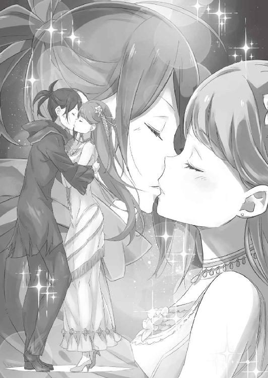
７
──煌めく宝剣が岩のような外皮を易々と切り裂き、風が走り抜ける。
「おおおおぉぉぉぉぉぉぉっ──!!」
雄叫びを上げながら駆ける老剣士の後を追いかけるように、生じた刃の傷から噴出する鮮血が空を朱色に染め上げていく。
満身創痍の姿だ。
左腕は肩から先が今にも落ちそうで、全身を濡らす血は返り血と自身の血が混ざり合ってどす黒く色を変えている。
ほんのわずかな時間での治癒魔法の効果など、傷の止血と幾許かの体力の回復しか見込めない。依然、絶対安静を言い渡される重篤な状態に変わりはない。
だが、今のヴィルヘルムの姿を見て、誰が彼を瀕死の老人だと笑えよう。
双眸の輝きを見れば、駆け抜ける足取りの力強さを見れば、握る刃の剣撃の鮮やかさを見れば、響き渡る裂帛の気合いを耳にすれば、その魂の輝きに魅せられれば、誰がその老人の人生の集約を愚かであると笑えるのだ。
刃が走り、絶叫を上げて、悶える白鯨の巨躯が激痛に打ち震える。
大樹の下敷きになって身動きの取れない魔獣、その背を駆け抜ける剣鬼の刃に躊躇いはない。頭部の先端から入る斬撃が背を抜け、尾に至り、地に降り立つと再び頭を目指して下腹を裂きながら舞い戻る。
一振り──長く長く、深く鋭い、銀の一閃が一周して白鯨を両断する。
跳躍し、動きの止まる白鯨の鼻先に再び剣鬼が降り立った。
血に濡れた剣を振り払い、剣鬼の眼差しと白鯨の隻眼──二つの宿命が交錯する。
「貴様を、悪と罵るつもりはない。獣に善悪を説くだけ無駄。ただただ、貴様と私の間にあるのは、強者が弱者を刈り取る死生の理のみ」
「────」
「眠れ。──永久に」
最後に小さな嘶きを残し、白鯨の瞳から光が失われる。
その巨体から力が抜け、落下する体と滴る鮮血が地響きと朱色の濁流を生み出した。
足下を伝う血の感触に、誰もが言葉を発することができない。
静寂がリーファウス街道に落ち、そして──、
「終わったぞ、テレシア。やっと......」
動かなくなった白鯨の頭上で、ヴィルヘルムが空を仰ぐ。
その手から宝剣を取り落とし、空いた手で顔を覆い、剣を失った剣鬼は震える声で、
「テレシア、私は......」
掠れた声で、しかしそこには薄れることのない万感の愛が。
「俺は、お前を愛している──!!」
ヴィルヘルムだけが知る、告げられなかった愛の言葉。
最愛の人を失うその日まで、一度たりとも言葉にできなかった積年の感情。
かつて彼女に問われたとき、本来ならば告げておくべきだった言葉を、ヴィルヘルムは数十年の時間を経てやっと口にする。
白鯨の屍の上で、剣を取り落とした剣鬼が涙し、亡き妻への愛を叫んだ。
８
「──ここに、白鯨は沈んだ」
ぽつりと、凛とした声音が平原の夜に静かに響く。
その声に、言葉をなくしていた男たちが顔を上げた。
彼らの視線は、白い地竜に跨り、悠然と前へ進み出る少女の一身に注がれる。
長い緑髪はほつれ、戦いの最中に受けた傷で装飾の類は無残になり、その顔を自身の血で汚した、あまりにみすぼらしい格好の人物だ。
しかしその少女の姿は彼らの目に、これまでのどんな瞬間より輝いて見えた。
魂の輝きが人の価値を決めるのであれば、それは当然のことだ。
「────」
騎士たちの視線に顔を上げ、凛々しい少女が深く息を吸う。
宝剣を貸し与えたため、今のクルシュは帯剣していない。
故に彼女は拳を天に突き上げ、握り固めたその手を全員に見せつけるようにし、
「四百年の歳月を生き、世界を脅かしてきた霧の魔獣──ヴィルヘルム・ヴァン・アストレアが討ち取ったり!!」
「──おお!!」
「この戦い、我々の勝利だ──!!」
高らかに勝利の宣告が主君から上がり、生き残った騎士たちが歓声を上げる。
霧の晴れた平原に、再び夜の兆しが戻る。
月の光があまねく地上の人々を照らす、あるべき正しい夜の姿として。
──ここに数百年の時間をまたぎ、白鯨戦が終結した。
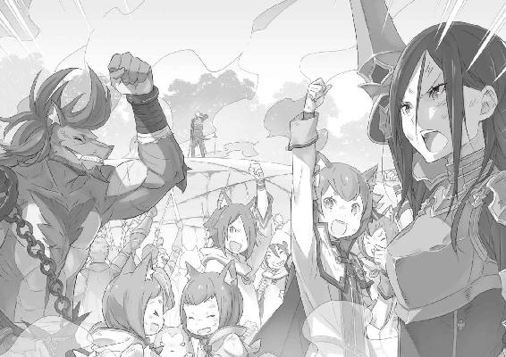
第六章 『メイザース領への道』
１
──歓声が、月明かりの満ちる平原に広がっていく。
騎士たちの掲げる剣がその月光を映し、光り輝く光景は美しくすらあった。
白鯨の巨躯がフリューゲルの大樹の下に横たわり、それを囲む一団を熱狂が押し包んでいる。誰もが勝利に浮かれ、悲願を果たしたことに感涙をこぼしていた。
そんな彼らの喜びの感情に水を差すように、
「────ッ!!」
強大な咆哮が二つ上がり、歓声を塗り潰すようにリーファウス街道の大気を揺する。
討たれた白鯨とは別の、本体を失った分身体である二体の白鯨だ。
本体の死を受け、地上でのた打ち回る分体は茫洋と実体を薄れさせ始めていた。
本体からのマナの供給が途絶え、その肉体を維持できなくなりつつあるのだ。このまま放置しておいても、数分ともたずに消滅するだろう哀れな姿だが、
「無粋」
一言でその醜態を断ち切り、振られる腕が見えない風の刃を解き放つ。
突風を伴う風の斬撃が頭部から入り、悶える白鯨の外皮を易々と両断──巨体を左右真っ二つに叩き斬り、その存在を文字通りに霧散させる。
残る一体も討伐隊の魔石砲による一撃で元の霧に砕かれ、吹き散らされるマナが大気に溶けると、その巨躯を完全に消失させた。
今度こそ本当の意味で、白鯨の討伐戦は終わりを告げる。
だが──、
「浮かれてばかりもいられまいよ」
胸に手を当て、その内側に高揚感があるのを自覚しながら、しかしクルシュは感慨を面に出さずに首を横に振る。
悪い魔獣を皆で協力して倒し、物語はめでたしめでたしで終わる。
──現実はそう単純な話では終われない。
それは絵物語にのみ許される終わり方であり、めでたしめでたしの後が続いていく現実にあっては、やらなければならないことは無尽にある。
生き残った負傷者を救護し、亡骸の残る死者を手厚く葬り、亡骸の残らない死者の足跡を辿ってやらなくてはならないのだから。
そして、それらの後始末を思案するクルシュは気付いた。
白鯨の屍から少し離れた場所で、必死に声を上げる功労者の姿があったことに。
２
「レム！ レム、目ぇ開けろ......！」
腕の中でぐったりとした少女を抱き起こし、スバルはその血の気の失せた顔に必死で声を投げかけていた。
すぐ傍らに寄り添う地竜が、その黒い鼻先を心配げにこちらに擦りつけてくる。
だが、その地竜の気遣いにも応じてやれないほど、今のスバルを包む焦燥感は強い。
──スバルの臭いを追わせ、白鯨を大樹の下敷きにする作戦は見事に成功した。
歴史ある大樹を切り倒すことへの忌避感などから、反対の声が上がるかと思われた作戦だった。だが、合理主義的な獣人傭兵団はなんら呵責なしに、クルシュですらもそれが必要なことならばとあっさり割り切る度量を見せてくれた。
結果、立案したスバル自身が多大なリスクを背負う作戦は実行に移され、結果としてこれ以上ない戦果をもたらしてくれたといっていい。
しかし、その代償がこれであるのだとしたら、それはあまりにあんまりだった。
「これは、駄目だろ......頼むよ、レム......お前が、いなくちゃ......っ」
目の前、依然、目をつむるレムはスバルの呼びかけに反応する気配がない。
力の抜けた手足に意思が通う様子はなく、名前を呼ぶ涙声は彼女の鼓膜を素通りして空しく虚空に木霊していた。
──白鯨の猛烈な追撃を受け、目の前に大樹の幹が迫る中を駆け抜けた。
魔獣を大樹の重量が直撃し、激しい地鳴りと衝撃があたりを無作為に吹き飛ばす。その中にはすぐ側を走り抜けていたスバルたちの姿もあった。
上も下もわからなくなるような激しい衝撃に呑まれ、その中でスバルは自分が温かな感触に守られていたことを覚えている。それを理解した瞬間、凄まじい衝撃音が轟き、その感触ごと地面に叩きつけられたことも。
朦朧とした意識の狭間を抜け、スバルは自分が地べたに倒れていたことに気付いた。
そして顔を上げ、自分が誰かに抱かれていたことに気付き──それが自分を最後まで抱きしめてくれていた、彼女の体であったことを知ったのだ。
「......スバ、ル......く」
「レム──!?」
ぴくり、と彼女の瞼が震えて、その下の瞳が力のない輝きでスバルを映す。
その瞳に映る自分の姿があまりに弱々しくて、まるで目の前に迫ろうとしている現実を無意識に認めてしまいそうになっているように思えて、
「よか......ああ、俺だ。わかるか、スバルだ。レム、体は......」
「スバルくん......無事で、よかった......」
喉が詰まった。
涙声で、レムの身を案じる言葉すら満足に吐き出せずにいるスバルを見て、レムが安堵したように微笑んだからだ。
傷付いた自分のことすら度外視して、ただスバルの無事だけを見取って嬉しそうに。
「魔獣......は、どうなって......」
「......落ちた。やっつけた。うまくいったよ。全部うまくいったんだ！ 俺も、ケガもなんにもなくて......全部、お前のおかげ......」
「そ......ですか。じゃあ、ロズワール様や、エミリア様......も、きっと大丈夫......」
「うまくやる。俺に任せろ。だからレム、今は何も言わなくていいから休んで......いや、目......閉じないで......ああ、クソ、どうすりゃ......」
無理して話そうとしなくていい。けれど、レムの口が言葉を発してくれないと不安が払拭できない。どうしようもない運命の強制力が、まるで彼女の命をスバルの手から掠め取ろうとしているかのような焦燥感があった。
どうしたらいいのか、わからない。どうしてあげればいいのか、わからない。
わからないからスバルにはもう、彼女の手を握って、抱きかかえる彼女に回す腕に強く力を込めるしかなくて。
「痛い、ですよ。スバルくん......」
「ごめん。悪ぃ。でも、こうしてないと、お前がどっかに......」
「どこにも、行ったりしませんよ。......レムは、スバルくんの、傍に......」
泣きじゃくる子どものように駄々をこねるスバルに、レムはまるで慈母のような微笑みのままで笑いかけ、その体からふいに力を抜いた。
彼女の体が腕の中で柔らかくなる感触に、スバルの喉が恐怖で凍る。
血の気の引く音が耳の奥で聞こえて、何もかもが置き去りにされていく。
「レム......？ レム！ 頼む、レム......目、開けて......」
「なんだか、すごく眠くて......ごめんなさい。少しだけ眠って、目が覚めたらまだ......すぐに、スバルくんのために......」
「そんなのどうだっていいんだ！ 何もしなくていい。ただ一緒にいてくれたらそれでいいから......だから、頼むよ、レム......！」
腕の中にいるのに、徐々に遠ざかり始める彼女を必死で繋ぎ止めたくて、スバルは必死に声を絞り尽くす。なのに、その声は目の前にレムに届かなくて。
「わがまま、言って......いい、ですか？」
「......！ 言えよ、なんでも言え！ なんだって聞くし、やってやるから......っ」
「好きって、言ってほしい......です」
掠れた声で、弱々しい声音で、スバルを見上げるレムが小さくこぼす。
湧き上がってきた涙でぼやけそうになる視界を押し開き、スバルは首を横に振った。
そして、それから彼女に顔を寄せて、
「好きだ」
「────」
「大好きだ。決まってるだろ......お前がいなきゃ、やっていけない」
本心からの言葉だった。
この瞬間にスバルの全てを注ぎ込むのならば、それは掛け値のない本音だった。
彼女なしではここまで辿り着けなかった。彼女なしでは生きていけない。
「あぁ......嬉し......」
そのスバルの告白を受けて、レムの閉じた瞳の奥から涙が伝った。
投げかけられた言葉を幸せそうに受け取り、レムの頬にさっと赤みが差す。それを最後にふっと、彼女の力から本当の意味で力が抜けていく気がして。
「待てよ......」
「愛しています、スバルくん」
「ふざけんな、俺の傍にいろ！ 俺にまた、後悔だけ残していくのか！」
手繰り寄せた未来の中に、彼女の存在がないことなど耐えられない。
そんなことずっと前からわかっていて、その存在は今はずっとずっと大きくなっている。
だから、
「笑って話す未来に、お前がいなくちゃ......俺は嫌だよ」
「その未来、レムも隣にいていいですか？」
「......当たり前だろ。他のどこにもいかせやしねぇ」
瞼を閉じて、浮かびかけた涙を振り切って、スバルはレムを真っ直ぐ見つめる。
そして、言い切った。
「お前は俺のものだ。誰にも、渡さねぇ」
「──言質、頂きました」
「へ？」
ふと、やけに理知的な返答があって、スバルは間の抜けた声を出す。
と、そのままレムは閉じていた瞼をゆっくり開き、あろうことかスバルの腕の中で上体を起こした。そして、唖然として状況が掴めずにいるスバルに首を傾けて微笑み、
「スバルくんのお傍はレムの予約済みです。......撤回は、できませんよ？」
死にそうだった姿はどこへいったものか。
悪戯っぽく、からかうように片目を閉じて、レムの指がスバルの唇にそっと触れる。
がっくりと、肩から力が抜けてスバルはへたり込んだ。
「おまえ......お前、お前......お前ぇぇぇ」
「はい、スバルくんのレムです。名実ともに」
お決まりの答えが今はふてぶてしく聞こえて、スバルは言葉を続けられない。
それでも、目の前の少女が無事である事実が先にきてしまって、本当は怒りを露わにしてもおかしくない場面だったのに、嬉しすぎて。
「互いに本音をぶちまけてから、お前は色々とはっちゃけすぎだろ......」
「恋に素直になった女の子は強いものですよ、スバルくん」
もはやスバルへの想いを隠すつもりのないレムにしどろもどろ。
気恥ずかしいやら何やらで顔を赤くしながら、スバルは小さく吐息をこぼし、
「......お前が死んだら、俺も死ぬところだったぜ」
「そこまで思ってもらえるなんて、レムは果報者ですね」
「冗談抜きに、な」
小さく笑いながらのレムの答えに、スバルはそれこそ嘘偽りない気持ちで応じる。
もしもレムが失われてしまえば、スバルは必ず世界をやり直したことだろう。仮にそれでやり直す機会が与えられなかったとしても、挑んだだろうことは間違いない。
それほど、今のレムの存在はスバルの心の中で大きな位置を占めている。
「じゃあ、絶対に死んでしまったりできませんね」
「たりめーだ。死んでも、死なせたりしない」
顔を近付けて、その額に額を押し付けて至近で見つめ合う。
レムはそんなスバルの仕草を愛おしげに見つめ、息遣いさえ触れ合う距離に少女の姿があることがスバルにはむず痒い。自然、視線がその桃色の唇に引き寄せられ、心臓の鼓動が微かに早まるのを感じ──、
「──お二人さん、もうそろそろいいんじゃにゃいかにゃ？」
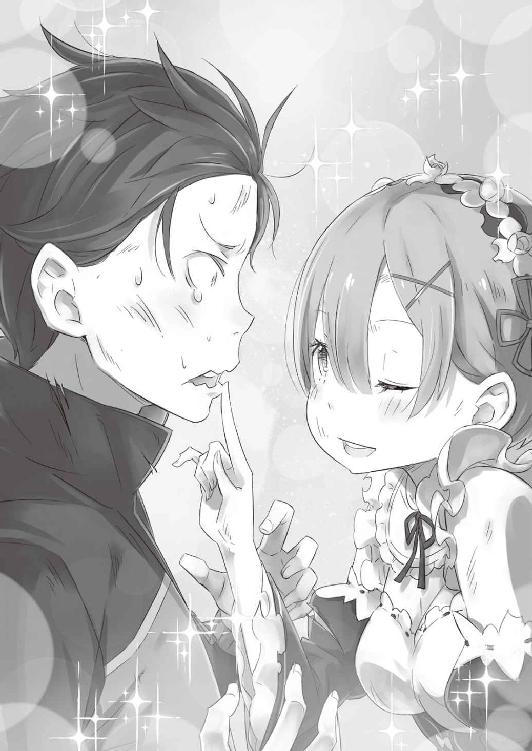
それまで二人のいちゃつきを遠巻きに見ていたフェリスが呆れた様子で、肝心の場面に割り込んで盛大に邪魔をしたのだった。
ずっと見守っていたらしい。──確信犯だろう。
３
「あんにゃに必死になって呼びかけちゃって、スバルきゅんてば可愛いよネ。お前がいなくちゃ、俺は生きていけない......！」
「うるせぇ、黙れ！ じろじろ見てるとか、てめぇの趣味の悪さを反省しろ！」
「そもそも、冷静になればわかるじゃにゃい。負傷者の手当てして回ってるフェリちゃんがすぐ行かない時点で、レムちゃんの傷が命に関わるほどじゃないってさぁー」
「冷静になれる場面かぁ！ 好きって、言ってくれた......大事な女......の子がケガして意識ないんだぞ。混乱して当たり前だろうが！」
「色んな場面で言い切れない部分が男の子の純情だよネ～」
怒鳴りつけるスバルなどどこ吹く風で、フェリスは掌に浮かぶ青い光をレムへと向けながらへらへらと笑っている。その横顔に収まらない苛立ちを叩きつけながらも、スバルは徐々に和らいでいくレムの表情に安堵の気持ちを隠せないでいた。
フェリスの言には素直に頷けない部分も多いが、重傷者から順番に治療を施していた彼がレムを後回しにしたということは、それは事実なのだろう。
白鯨討伐の功労者であり、余所の陣営の戦力であるレムやスバルを軽々しく扱うことなど彼の主が決して許すまい。そんな思考の帰結を見るスバルの前に、
「無事か、ナツキ・スバル」
と、件のフェリスの主──クルシュがゆったりと草を踏みながら現れる。
血や泥で汚れていながらも、真っ直ぐに背筋を伸ばすクルシュの立ち姿は美しい。
自然、失われることのない気品が戦いの後の余韻にも漂っており、まさに戦乙女という言葉を体現したような麗人である。
「どうにかこうにか、な。クルシュさんも無事そうで何よりだ」
「私はな。だが、討伐隊の方の損耗は決して少なくない。白鯨を討ってなお、消えたものたちは戻らないのだから」
手を掲げて応じるスバルに顎を引き、クルシュは微かに沈痛を瞳に宿して首を巡らせる。彼女の視線が向くのは、いまだ大樹の下敷きになったままの白鯨の屍だ。
そちらでは生き残った討伐隊の、比較的負傷の少ない面々が寄り集まり、どうやらまず白鯨の上から大樹を除けようとしているようであった。
「何をやってんだ、ありゃ」
「白鯨の屍を運び出さなくてはならない。作戦の犠牲になったフリューゲルの大樹に対しても、何かしらの処置は必要だ。戦いの後こそ、気が休まらない」
「運び出すって......あのどでかい死体を？」
聞き間違いかと確かめるが、クルシュの態度は変わらない。スバルは慌てて視線を白鯨に戻し、その全長五十メートルにも及ぼうかという巨躯を眺めて、
「無理臭くね？」
「できない、では話にならない。四百年、世界の空を泳ぎ続けた脅威だ。その屍という確かな証拠があってこそ、人心は真の安堵を得る。最悪、頭だけでも持ち帰らねばな」
仰々しいクルシュの言葉だが、スバルはその判断も当たり前だと思い直した。元々、白鯨の討伐はクルシュにとって、王選における目に見える成果でもあるのだ。
無論、クルシュが功績ばかりを優先するような卑賤な人柄ではないことは、この戦いの最中にも十分にわかっている。とはいえ、今回の功績はそれだけ大きい。
王選の最有力候補として国民からの支持も高く、懸念されていた勢力である商人勢からの好感度も今回稼いだのであれば、クルシュの立ち位置は盤石で──、
「あれ、ひょっとして結構マズい後押ししてねぇ？」
今さらだが、他陣営への肩入れにしては取り返しのつかないレベルな気がしてきた。
全てはエミリア陣営に戻るための行動、だがそれにしてもやりすぎてやいないか。
そんな予感に、スバルが遅すぎる後悔をしていると、
「ずいぶんと暗い顔をするものだな。──白鯨を落とした英雄の顔には見えん」
「エミリアたんに開口一番裏切り者って罵られ......え、今なんて言った？」
「白鯨を落とした英雄、だ。──卿の功績を、そのまま全て当家の手柄にするほど恥知らずではありたくない」
白鯨の亡骸から視線を戻し、クルシュは剣のような眼差しでスバルを射抜く。
その誠実な輝きに瞬きして、スバルも彼女と真正面から向き合った。
そうするスバルに、クルシュはゆっくりと己の胸に手を当てると、
「此度の協力、感謝に堪えない。卿がいなければ白鯨の討伐は成らず、私の道は半ばで潰えていたことだろう」
そう言いながら、深々とスバルに対して礼の姿勢を取ったのだ。
「────」
高潔なクルシュに向けられる真摯な謝意、その熱にスバルは思わず硬直する。
これまで、彼女のような立場の人間に、こんな言葉をかけられたことなど記憶にない。
「い、いや......やめてくれって。俺、そんな大したことしてねぇし......」
「白鯨の出現の時と場所を言い当て、討伐隊だけでは足りぬ戦力を整えるのに奔走し、士気が折れかけた騎士たちの覚悟を奮い立たせ、自らの身が危うくなる起死回生の献策をし、その上で見事にそれをやり遂げ、勝利を手繰り寄せてみせた」
途切れ途切れに言葉を返すスバルに、クルシュはこの戦いにおけるスバルの行動の結果を列挙してみせる。
そうして整然と語られた自分の行いの帰結を見ると、それはまさしく、
「我ながら頭おかしいとしか思えない活躍してんな......」
「獅子奮迅、では言葉が違うな。しかし、この戦いにおける立役者は間違いなく卿だ。卿の行いが軽んじられるのであれば、私は私の名誉に誓ってそれを正すだろう」
真剣な表情で、真っ直ぐにスバルを称えるクルシュには一切の打算も躊躇もない。
誠実、その二文字を体現したかのような人物だけに、彼女の語る言葉、感謝の念に嘘偽りは欠片もないだろう。
それだけに、スバルは出発前夜までのクルシュとの関係を思い出し、苦笑する。
「ずいぶんと評価が改善されたみたいで、驚きだよ」
「謙遜することはない。そして、私の数日前までの見立てが大いに間違っていたことは認めざるを得まい。卿は、得難き幸いを運んできた。本来ならばその功績、当家に迎え入れて相応に報いたいところではあるが」
「そりゃ勘弁してくれ」
目を細めるクルシュが、低い声でスバルを自分の懐へ誘う。
だが、スバルはそんな彼女の勧誘に、手を挙げると即断で断った。
「忠誠とも忠義とも違うけど、俺の信頼はもう預けるべきところに預けてある。あんたはいい奴だし、王様になってもきっとうまくやってけると本気で思うけど......」
クルシュならばきっと、誰よりも高潔に民を導く王になれるだろう。
それだけの器があるし、そうするだけの理由が彼女にあることも少しだけ知った。
正当な理由が、それに応える覚悟が、きっと彼女に託された遺志があるのだ。
それを含めた全てが、クルシュ・カルステンという一人の女性を形作っている。
そんな彼女の人柄は、スバルのように嘘をつき続けてきた小さな人間には眩しくて、羨望を抱いて憧れる理想そのものであったけれど。
「──俺は、エミリアを王にするよ」
「────」
「誰のためでもなく、俺がそれをしたいんだ」
「......わかっていたことではあるが、それなりに応えるものだな」
スバルの答えを受け、クルシュはその唇を綻ばせると顎を引く。
それから組んだ腕を解き、その白い指を拳の形に固めると、スバルに向けた。
「良いだろう。卿の功績には別の形で報いる。クルシュ・カルステンの名に誓い、その約束は果たされよう」
厳かに言い切り、クルシュは固めた拳を開いて自分の掌を見る。
それからわずかにその声の調子を落とし、
「思えばこれほど気持ちよく、誘いかけを断られるのは初めての経験だな。悩む素振りすら見せられないとは、いっそ清々しい敗北感だ」
「......クルシュさんは、すげぇ人だと思うぜ。俺だってふらふら一人なら間違いなく、その手を支えにしようって思っただろうさ」
寄る辺もなく、何一つ定まっていない状況で、クルシュほどの人物にそうして手を差し伸べられていたら、きっと迷うことなく飛びついて、縋って、全て委ねてしまう。
だけど、今のスバルには手を伸ばして掴まっていたい相手がいて、ふらふらと揺れる背中を支えてくれる掌の持ち主がいて。
だから、その手は取れないけれど、
「同盟の件は、よろしく頼むよ。最終的にどんな形で敵対することになっても、それまではきっと仲良くやっていこうぜ」
「──ナツキ・スバル。一つ、考えを正そう」
スバルの返答に笑みを消して、クルシュは厳しい顔つきで唇を引き結ぶ。
再び空気の張り詰める気配に驚き、スバルはクルシュを見る目を見張った。
そんなスバルにクルシュは指を一つ立て、それをこちらの顔に突き付けると、
「雌雄を決する機会がきたとしても、私は卿に対して友好的であろう」
「────」
「いずれ必ず来る決別の日にあっても、今日の日の卿への恩義を私は忘れまい。故に敵対する時がきたとて、私は卿に最後まで敬意を払い、友好的である」
指を立てた腕を振り下ろし、クルシュは凛とした声音ではっきり断言する。
その彼女の振る舞いに、今度こそスバルの背筋を寒気が走り抜けた。
それは負の感情からではない。ただただ、偉大なものに圧倒されたが故の感情だ。
──これがカルステン公爵、クルシュ・カルステンという人物なのだ。
「俺の心の一番目と二番目が埋まってなかったら、かなり危ないとこだった」
「──ふ。女として、卿をどうこうというところまでは考えていない。いくらか琴線に触れる場面がないではなかったが、私の心は夢の果てに預けてある。──いずれ、あの方の望んだ夢に至るまで、ずっと」
動揺を軽口で誤魔化すスバルに、クルシュも薄く笑いながら応じる。ただ、彼女の言葉の後半はひどくささやかで、それはスバルの鼓膜まで届いてこなかった。
その感傷を瞬きで忘れると、クルシュは「さて」と冷静な目で言葉を継ぎ、
「できるなら私はこのまま、負傷者と白鯨の屍を王都へ運びたいところだ。が、卿にはまだ何か使命が残っているようだな」
「......やっぱ、加護持ちにはわかるか」
「男児のその目を見ればようと知れる。加護の力など必要あるまい」
スバルの黒瞳を覗き込み、片目をつむるクルシュがそう答える。それから彼女はスバルの姿を上から下まで確かめて、
「卿も無傷ではないはずだ。それを押して、やらなければならないことか」
「重傷でもやらなきゃならねぇことだな。ある意味じゃ、それをやってのけるための鯨狩りだ。言っちゃ悪いけどな」
「ほう、この白鯨討伐がついでか」
聞こえの悪いだろう言い方に、しかしクルシュが腹を立てる様子はない。
彼女はそこまで言ったスバルの目的に興味を持った顔で、
「興味深いな。──当家との同盟も、それを考慮してのものだろう。なれば、求められている役割も思い当たらないでもない。......手が、必要か」
「必要だ。けど......正直、ここまでキツいとは思ってなかったから」
負傷者だらけの討伐隊を見渡し、スバルは目論見が外れて肩を落とす。
白鯨討伐を終えたスバルを待つのは、エミリアの待つメイザース領への帰還であり、それは忌まわしき集団との相対を意味する。
その強敵との戦いにこそ、クルシュたちの力が必要だったのだが──、
「こんだけケガ人が出てんのに、無茶は言えねぇ。クルシュさんも感情だけじゃなくて、当主としての立場も意見もあるだろ。この上で、手ぇ貸してくれとは......」
「──ならばこの老躯、使い潰されるがよろしいでしょう」
ふいに会話に割り込んだのは、静かな歩調で歩み寄る長身の影──全身に魔獣の返り血を浴び、今もなお凄絶な有様をさらし続ける老剣士、ヴィルヘルムだ。
剣鬼は体の負傷を微塵も感じさせない足取りでこちらへくると、右手に握っていた宝剣をクルシュへと差し出し、
「クルシュ様、お貸しいただいたものをお返しいたします。ならびに此度の一件、心より感謝を申し上げます。我が身の悲願がこうして叶いましたのも、クルシュ様のご協力があればこそ。──ありがとう、ございます」
「私の目的と卿の悲願、互いの利害が一致しただけのことだ。──その剣、今しばらくは卿が持っているがいい。この先、丸腰では役に立つまい」
「──は。ありがたく」
ヴィルヘルムの謝意に、クルシュが短く応じてスバルを見る。
それを受け、ヴィルヘルムがスバルを振り返った。
「────」
改めて間近にすると、その身から漂う血臭は凄まじく、迸る剣気は意図せずしてスバルの細い肝に刃を突き付けるような緊迫感をもたらしていた。
ただ、戦いの前にあった張り詰めるような雰囲気──そこからは解放されて、今のヴィルヘルムが晴れやかな様子であるのは事実だった。
老剣士はスバルを真っ直ぐ見て、それからその場に膝を突いた。
出陣の前夜にも見せた、相手への最上の敬意を示す最敬礼だ。
そして──、
「ナツキ・スバル殿。此度の白鯨討伐、成りましたのは貴殿の協力あらばこそ。この身が今日まで、生き長らえてきた意味を全うすること叶いましたのは、貴殿あってのことです。感謝を。感謝を。──私の全てに懸け、感謝を申し上げる」
「────」
剣に捧げた半生、そして十余年の時間をかけて、復讐をやり遂げたヴィルヘルム。
その彼から向けられる感謝に、その膨大な情熱に呑まれながら、しかしスバルは口ごもることを恐れて言葉を発することができない。
しばし気を落ち着かせ、目の前の老人の言葉へ正しく発声する気が整うのを待つ。
このヴィルヘルムの覚悟に対し、みっともない姿を見せることなど、それこそあってはならないのだから。
「やれたのは、ヴィルヘルムさん自身の力ですよ。あの白鯨を倒そうって考えて、調べて、鍛えて、諦めないで戦って......」
何度も何度も挫折を味わい、執念が届かないと諦めかけたこともあったはずだ。
全てを投げ出して、妄執から解き放たれる誘惑が一度もなかったとは思えない。
心の弱さを、己に負けるということを、運命に遮られるという理不尽を、誰よりも知るスバルだからこそ、ヴィルヘルムの強い想いの結実までの苦難がわかる。
だから、
「奥さんをすっげぇ愛してたから、白鯨を倒すまでいけた。その手伝いが少しでもできたってんなら、何よりです。こう言っていいのかわかんないですけど......おめでとうございます。あと──お疲れ様でした」
「────」
スバルの言葉に顔を上げて、ヴィルヘルムはその青い瞳を大きく見開いた。
スバルが感じた想いや感動は、スバルが勝手にヴィルヘルムに共感して思い描いたものだ。それが今の短い言葉で伝え切れるとは思わないし、わかったような口を利かれるのはヴィルヘルムも面白くないだろう。
しかし、それでも言いたい気持ちを堪えられなかった。
十四年も、亡くした妻への愛を燃やし続け、ここまで走り続けてきた、運命と戦い続けて勝利した先達に、その日々に労いの言葉を。
「──感謝を」
短く、声を震わせてヴィルヘルムがそう答える。
それから彼はわずかに俯き、ほんの数秒だけ沈黙して立ち上がる。そして、クルシュの方へ目を向けると彼女の頷きを受け、
「クルシュ様より、許可はいただきました。この身、スバル殿に預けましょう。存分に、目的のためにお役立てください」
「それは超助かりますけど、マジで？」
確認のためにクルシュを見れば、彼女は顎を引いてそれを肯定する。
改めてまじまじとヴィルヘルムを見やり、片腕を負傷しても衰えることのない剣気に、スバルは頼もしさと恐ろしさを同時に覚えた。
──ヴィルヘルムの協力は、スバルにとって願ったり叶ったりだ。
戦力の充実が少しでも望まれる現状、剣鬼の力は喉から手が出るほど欲しい。だが、肝心のヴィルヘルムの負傷は、素人目に見ても重傷の判定は免れない。
そんなスバルの懸念に、クルシュが「問題ない」と首を横に振り、
「フェリス！」
「は～い、クルシュ様！」
鋭いクルシュの呼びかけに、呼ばれたフェリスがさっと滑るように現れる。
彼は弾む足取りでクルシュの隣に並ぶと、その頭の猫耳を小刻みに揺らし、
「なんです、クルシュ様。フェリちゃんてばただいまお仕事大回転中につき、クルシュ様のお願い事を聞くのはもちろん一番だから最優先にゃんですけどぉ」
「お前、自分の発言の途中には責任持てよ！」
あっさり治癒術師としての使命感を投げ出そうとする発言に突っ込むと、それを受けるフェリスが渋い顔。そんな彼にクルシュが討伐隊を眺め、
「命に関わる負傷者は？」
「重傷者から処置しましたけど、危なくにゃった人はきっちりゼロで～す。他の人の応急処置もバッチリ、フェリちゃんできる子。褒めてくださいにゃ」
頬に指を当てて媚びるフェリスに、スバルはホッと胸を押さえる。
少なくとも、レムが大事に至ることはないようだ。決着直後のやり取りは気を揉んだものの、改めて無事だと聞かされれば安心するものである。
その安堵の傍ら、フェリスの頭を撫でていたクルシュが「わかった」と頷き、
「残る負傷者は搬送可能か。ならばフェリス、この場の治療はここまででいい。お前はこの後、ナツキ・スバルに同行し、同盟としての役割を果たせ」
「──え!?」
クルシュの下したその指示に、スバルは驚きの声を上げた。
この場からフェリスを外し、スバルに同行させる。それは自陣営の負傷者より、同盟相手であるスバルの判断を優先させる指示に他ならない。
当然、それはクルシュ陣営の身を切る判断であり、フェリスの反感を──、
「了解しました。フェリちゃんはこのままスバルきゅんに同行します。道すがら、ヴィル爺の治療もしなくちゃですもんネ」
「手間をかけますな」
「その分、ヴィル爺には剣を振ってもらわなきゃだしお相子じゃにゃい？」
買わなかった。
フェリスは当たり前のように指示を受け入れ、ヴィルヘルムもその指示に驚く素振りを見せない。主と二人の従者のやり取りに、スバルは困惑が隠せなかった。
そんなスバルにフェリスはちらりと流し目を送り、
「そんにゃわけで、大丈夫そうな討伐隊の残り半数......二十人ちょっとかにゃ？ それを連れてスバルきゅんに協力するネ。よろしく～」
「よろしくーって軽いな！ いいのかよ？」
「いいのかって、にゃにが？」
「何がって......色々だよ。お前、俺の判断とか信用できんのかよ」
思い返せば思い返すほど、王都でスバルに対して、傷口を抉るような真似をして接してきた相手はフェリスを除いて他にいない。
いつだって友好的な笑みを浮かべて、いつだって可憐な態度を装いながらではあったけれど、彼がスバルの弱さに強い軽蔑を抱いていたことはなんとなくわかっている。
そんな相手に従うことに、忌避感があるのは当然だとスバルは思ったのだが、
「スバルきゅんを信じるんじゃなくて、スバルきゅんを信じようって決めたクルシュ様の判断を疑ってないの。そこ、間違っちゃやーだかんネ？」
「お、おう......ありがとよ」
念押しするように、スバルの考えを鼻で笑ってみせるフェリス。
その態度にスバルはバツが悪くなり、言葉を詰まらせながらなんとか礼を言う。そんなスバルにますます笑みを深め、フェリスは小さく、
「......ただの、同族嫌悪みたいなものだったんだから」
「──？ 今、なんて言った？」
「べっつにー？ なんでもないってば。あ、そーだ」
聞き取れなかった言葉をうやむやにし、フェリスはわざとらしく手を叩くと、
「言い忘れてたけど、レムちゃんはお留守番......っていうか、クルシュ様と一緒に王都に戻ってお休みでーす。わかってネ」
「──どうしてですか！」
ウィンクするフェリスの宣言に、強い反発の声が上がった。それは負傷者の列で、こちらのやり取りに耳を傾けていたレムだ。彼女はフェリスを強く睨みつけると、
「レムなら！ レムなら大丈夫です。スバルくんがこれからまだ危ないところに向かうのに、レムがいなくてどうして......」
「そんなこと言っても、体、動かないでしょ？ ほとんど一人で白鯨一匹押さえて、おまけに上級魔法を連発して......レムちゃんのお体は今、すっかり消耗してマナがスカスカ状態にゃの。治癒術師として、これ以上の無理はさせられませ～ん。おわかり？」
「でも！」
納得いかない、とばかりにレムは立ち上がって言い募ろうとする。
が、起き上がろうと立てた腕に力が入らず、震える体を支え切れずにその場に倒れ込みそうになる。慌てて駆け寄ったスバルが、その肩をそっと支えた。
「危ねぇって。......頼むからフェリスの言う通り、あんまし無茶すんなよ」
「でも！ 嫌なんです。苦しいんです。耐えられないんです」
傍らのスバルを見つめ返し、レムはその青い瞳に大粒の涙を湛えていた。
置き去りにされることではない。彼女が何より恐れていること、それは──、
「スバルくんが困っているとき、誰よりも先に手を差し伸べるのはレムでありたい。スバルくんが道に迷っているとき、背中を押してあげられる存在でいたい。スバルくんが何かに挑むとき、隣にいて震えを止めてあげたい。それだけがレムの、それだけがレムの望みなんです。ですから......」
「それなら心配なんか、いらねぇよ」
「え？」
泣きそうなレムの声、その愛しさ募る言葉の数々に、スバルは自然と面映ゆくなる。
肩を支えながら、スバルはそっと彼女の頭を撫でて、
「手はいつだって繋いだままだし、背中なら何度も押してもらった。震えるのだって、お前を思うだけでどうとでもなる。──俺はお前にもう、ずっと救われてる」
「......ぁ」
「大丈夫だ、レム。全部丸ごと、俺がどうにかしてきてやる。俺はお前の英雄だ。その一歩を踏むと、そう決めたんだ。だから、何も心配いらない」
震える瞳がスバルを見上げ、熱を持った頬が赤く染まる。
そんな彼女にスバルは笑顔を向けて、歯を剥くように獰猛に笑い、
「鯨狩りもやってのけた。お前の英雄は超、鬼がかってんだろうが」
「スバル、く......」
込み上げる感情が堪え切れず、スバルを呼ぼうとしたレムの言葉が途中で途切れる。
それから彼女は何度かその衝動を呑み込もうと苦心し、幾度も息を呑んだ後、抑えられなかった溢れるものを眦からぽろぽろとこぼし、
「──はい。レムの英雄は、世界一です」
と、泣きながら微笑んだのだった。
４
レムを含めた負傷者たちと、白鯨の首を回収して王都へ帰還するクルシュ。
彼女らに護衛を半数残し、残る討伐隊を連れてスバルたちはメイザース領を目指す。
ヴィルヘルムやフェリスを代表に、スバルと同行する討伐隊は二十四名。想定した数よりかなり減ってしまったが、心強い戦力には変わりない。
それに、同行してくれるのは彼ら討伐隊だけではなく──、
「あー、それにしても、ええとこはみぃんな、兄ちゃんに持ってかれてしもたな！」
「ダンチョー！ ミミも！ ミミもがんばった！ チョーすごーがんばったー！」
口やかましく言い合いながら、ライガーに跨る獣人二人が騒いでいる。
片方は、スバルを庇って負った戦線離脱の負傷から復活したリカードだ。もう片方は命懸けの戦いの最中でも、子どものような爛漫さを失わなかったミミである。
その二人だけでなく、生き残った獣人傭兵団『鉄の牙』からも十名ほどが参戦してくれている。負傷者は副隊長のヘータローが率い、クルシュたちと王都に戻るそうだ。
「それにしても、弟があんだけ消耗してたのにお前はどうしてそんな元気なの？」
「ヘータローはヒンジャク！ ナンジャク！ まったくもー、なさけなーい！」
けらけらと、ミミは大はしゃぎで弟の貧弱ぶりを笑い飛ばしている。だが、スバル判断としてはおそらく、姉の方が体力馬鹿なだけだろうと思う。
戦いが楽しくてしょうがない狂戦士タイプ──というより、何事も楽しく捉えられる究極のポジティブシンキングなのだろう。羨ましいといえば羨ましい。
「鯨退治の後半、ワイはあんましやったけど心配せんでくれや。ちゃんとお嬢に頼まれとるからな。この後、兄ちゃんの本命の方で活躍したるわ」
「本命で活躍っつったって、お前、俺が何しようとしてるのか知って......」
「魔女教と、事構えるんやろ？」
ふっと、声を低くするリカードの言葉にスバルは喉を詰まらせる。
自然、体重を預ける地竜──パトラッシュの手綱を強く握ると、漆黒の地竜がスバルの身を案じるように小さく鳴くのを耳にする。
そうして強張るスバルの横顔に、リカードが鋭い牙を見せて笑い、
「驚かんでもええやろ。商人は情報の鮮度が第一で、ワイらはお嬢に雇われの身や。兄ちゃんのことだけやなし、色々と耳は利かせとる。伊達に耳でかとちゃうんやで」
「そうだー！ ミミはでっかいぞー！」
「お前のこととちゃうわ、ちびっ子」
リカードの冗談にミミが斜め方向から反応し、彼の苦笑を買っている。その横でスバルは頭を掻き、驚かされたことにアナスタシアの人の悪さを感じた。
とはいえ、この先に付き合わせる以上、リカードたち『鉄の牙』とも情報を共有するのは必須だ。できれば討伐隊含め、まとめて話し合いの場を持ちたい。
出立前にスバルが仕込んだ、保険が機能したかどうかも合わせて──、
「おっと、合流できそうやな」
「あ？」
考え込むスバルの横で、前方に目を凝らすリカードが突然そう言った。
その言葉に慌てて視線を辿るが、スバルの目では夜の平原の闇は見通せない。彼の見ているものがわからず、首を傾げるばかりだ。
「そんな必死こかんでも、ちゃんと待っといたらわかるわ。安心しぃ」
「そりゃわかってる奴はそういうだろうよ。もったいぶんな」
「せやな、したらもったいぶらんとこか。──ちょい遠いんやけど、向こうからくるんはワイらの傭兵団の、もう半分や」
「半分？」
リカードの言葉にスバルが眉を寄せる。
『鉄の牙』の半分、つまり負傷者は王都へ引き上げたはずだが。
「半分っちゅーのは、そのまんまの意味や。元々、ワイらの『鉄の牙』は白鯨の討伐に半分の人員しか出しとらんかった。残りの半分は半分でやることあったからなぁ」
「やること、っつーと」
「街道に他の人間が入り込んで、戦いに巻き込まれんようにせなあかんやろ？ せやから、街道の反対を封鎖しとく役割や。昨日の夜んうちに出発しとったから、兄ちゃんと顔合わせる機会はなかったんやけどな」
リカードの説明を聞いて、スバルは納得に顎を引いた。
もっとも、白鯨討伐に全力を注いでくれていなかった点には不満があるが、リカードやミミといった主力は貸し出されていたのだ。討伐失敗で全滅する可能性も考えれば、リスク対策をするアナスタシアの判断は間違っていない。好きではないが。
手持ちのカードが少なく、全力投球以外に選択肢がないスバルのやっかみだ。
「じゃ、今からくるってのが残りの仲間なのか。そっちは誰が引っ張ってんだ？」
「ミミの弟のティビーがやってるー！ ヘータローみたいに、ミミと合体技もバコーンってできるぞー！ すごー！」
スバルの質問に誇らしげに答えてミミが胸を張る。
彼女の元気で曖昧な返事を聞いただけで、その残り半分の仲間が不安になるが、
「いや、でも弟はまともだったしな。その弟が姉弟のどっちに似るかは五分五分......？」
「心配しとるとこあれやけど、ティビーは一番賢い子ぉやぞ。銭勘定やら交渉も担当しとるし、お嬢の右腕や。ミミの扱いも得意やし、ヘータローの上位互換やな！」
「言ってやるなよ、ヘータローが不憫になんだろ......」
姉にも団長にも散々な評価をされて、ヘータローが哀れになりすぎる。
ともあれ、彼への哀れみはさておき、『鉄の牙』の追加人員は朗報だ。先ほど考えた話し合いの場を、彼らが合流したところで設けるべきだろう。
待ち受ける『魔女教』への対策会議──おそらく、クルシュ陣営のヴィルヘルムたちも事情は察してくれているはずだ。問題は、スバルの説明の仕方である。
白鯨のときと同様に、『死に戻り』に触れないように説明しなくてはならない。
「しかし、これはなかなかの難題だぜ......ん？」
頭を悩ますスバルの前に、ライガーの群れが上げる土煙が見えてきた。リカードの言った通り、こちらに合流する『鉄の牙』の集団だ。ただ、違和感がある。
「────」
頭の片隅に生じた違和感、その正体にスバルは目を凝らし、気付く。
正面から迫るライガーの群れに、一つだけ特徴が異なる影が紛れているのだ。
次第に距離が縮まり、そのおぼろげな輪郭がはっきりしたものに変わるにつれて、スバルはその特徴が地竜そのものであることを理解する。
そして、その蒼い地竜に跨っていたのは、
「──なんで、てめぇが」
「援軍に対して、ずいぶんな物言いをするものだ。相変わらずだな、君は」
互いに立ち止まり、騎竜したままでスバルはその人物と対峙する。
色素の薄い紫の髪を丁寧に撫でつけ、荘厳な近衛騎士団の白い兵装に身を包み、悠然とした微笑を口の端に上らせる美丈夫。
──因縁の人物、ユリウス・ユークリウスが優雅な佇まいでスバルを見つめていた。
５
鼻面に皺を寄せるパトラッシュが、鋭い眼差しで正面の蒼い地竜を威嚇する。
その首筋を撫でてやりながら、同じ気持ちの仲間をスバルは宥めていた。
まだほんの短い付き合いながら、今のスバルとパトラッシュの間に結ばれた絆は、生死の境を共に潜り抜けただけの強さがあった。
手綱越しに、スバルにはパトラッシュの考えがそのまま伝わってくるようだ。
「浸っているところ恐縮だが、私の地竜を誘惑させるのはやめてくれないか？ そちらの地竜もなかなかのものだ。誘われてはついてゆきかねない」
「って、パトラッシュ！ てめぇ、ナンパしてんのかよ！ 俺と同じ気持ちだと思ってたのに裏切ったのか!? 決死の戦いの前に色気づきやがって！」
「その地竜も兄ちゃんに言われたないやろ。あんだけ出発前に見せつけてからに。それに兄ちゃんの地竜、それめんこい雌やぞ」
「お前レディだったのかよ!?」
相棒の性別に驚くスバルに、件のパトラッシュが迷惑そうな顔をする。
そのやり取りに肩をすくめるユリウスを見るに、どうやら今のは彼の笑えない冗談だったらしい。そのことにスバルは怒鳴りかけたが、それより先に、
「こんにゃとこで合流だなんて、ユリウスったらいい御身分だよネ。ほんの数時間前までこっちは命懸けだったってのにさ」
「それを言われては面目も立たない。だが、訂正させてもらおうか、フェリス。私はユリウスという人物ではない。そうだな......ユーリと名乗っておこうか」
じと目のフェリスの皮肉に、ユリウスは真面目な顔で戯れてみせる。
無意味な偽名に全員が白い目をするが、彼はそんな視線を涼やかな微笑で受け流し、
「仮に、ではあるが、騎士の身分を持つ人物が雇われ者の集団に加わり、傭兵に身を落とすことなどあってはならない。ユリウス・ユークリウスという騎士が『鉄の牙』に加わった事実はなく、ここにいるのはユーリという一人の男というわけだ」
「にゃーるほど。相変わらず、ちゃんとした家の騎士道は面倒っちいよねー。フェリちゃんのとこ、没落貴族でホントよかった～」
「騎士であることを面倒などと思わないさ。友人に助力するだけのことに、気を回す必要があるのは問題だと思うがね。──余談ではあるが、ユリウス・ユークリウスが受けた謹慎処分は昨晩、日が変わった時点で解けている。それも明言しておこうか」
「くだらねぇ予防線張りやがって......偽名の意味とかあんのかよ、それで」
ユリウスとフェリスの会話に聞き耳を立てながら、舌打ちするスバルが悪態をつく。
視線を逸らし、唇を曲げる姿はいかにも拗ねているという感じであったが、実際のところその通りなのだから言い訳のしようがない。
そんなスバルの悪態を聞きつけ、ふいにユリウスがこちらを見た。彼はそのまま地竜の足を進めて、スバルのすぐ正面に位置取ると、
「思ったより元気そうで何よりだ。──体の調子はどうだろうか」
「──ッ！」
こちらの体調を慮るユリウスの発言に、スバルの脳がカチンと音を立てる。
揶揄か皮肉の類としか思えないユリウスの問いかけは、彼にとっては数日前──スバルにとってはもう二週間近く前の屈辱だが、それを思い出させるには十分だった。
牽制、という意味ではこれ以上ないほど効果的な発言を受け、スバルは喉のギリギリまで込み上げる罵声をなんとか堪え、癇癪を封じ込める。
咳払いし、深呼吸して、平然とした顔を作り、短い前髪をキザな仕草でかき上げ、
「ああ、まぁ、かすり傷だったし？ 唾つけときゃ治ったみたいな？ そっちの方こそ、援軍とか気取ったわりに出番が遅いんじゃねぇの？ なに？ 素人相手にマジになっちゃったせいで、お偉いさんに提出する始末書と反省文書くのが忙しかったり？」
謹慎処分がどうの、という話題から連想して背景事情を推測しつつ、得意の煽り攻撃でスバルが返す。と、ユリウスはわずかに鼻白むような顔つきになり、
「その話ではなく、魔獣討伐の名誉の負傷の話をしたかったんだが......その節の傷も復調したようで何よりだ。元々、見た目ほど派手な傷ではなかったはずなのでね。同情を買うのが得意な君は、大袈裟に痛がって転げ回っていたものだが」
「はははははは」
「ふふふふふふ」
渇いた笑い声が二人の間を交錯し、一触即発の雰囲気が漂い始める。
そんな状況を周囲がどうにかするかと思えば、フェリスやリカードは面白いものを見る目で傍観に徹し、ミミは弟を探しに向こうの集団に入ったっきりだ。
必然的にこの場を収める役目を担ったのは、
「旧交を温めるのもよいでしょうが、今はそれどころではないのではありませんかな」
前に進み出て、そう諭すのは地竜に跨る老剣士──ヴィルヘルムだ。
彼は睨み合う二人を諌めると、その静かな青い瞳にユリウスを映して、
「このたびの援軍、感謝に堪えません。こちらの戦力は白鯨との戦いでかなり損耗しましたからな。......独りよがりに付き合わせた身として、不安ではあったのです」
「ヴィルヘルムさん、そんなことは......」
声の調子を落とし、そう述べるヴィルヘルムにスバルが口を挟む。
白鯨討伐はスバルにとっても、様々な条件からクリア必須の壁の一つだった。
そこにはスバルの独善的な意思が確実に介在しており、ヴィルヘルムが負担に思うことなど何もありはしないのだ。
全てを説明できないのが歯痒いが、せめてその負い目だけは払拭してやりたい。
だが、スバルが声を上げる前に、
「──よい顔をされるようになりましたね、ヴィルヘルム様」
そう、静かな声でユリウスがヴィルヘルムに声をかけた。
憑き物の落ちたようなヴィルヘルムの瞳に、ユリウスは感慨深げに頷くと、
「以前お会いしたときとは別人のようです。......ラインハルトも、これで少しは救われることでしょう」
「そう、ですな」
顎に手を当てて、ヴィルヘルムは目を伏せる。
その一瞬の躊躇いの間に、どれほどの葛藤が老人の胸中に浮かんだだろうか。
周囲、彼らのやり取りを窺う人々の表情は様々だ。同情、安堵、事情を知る者たちの反応はそれが多いだろうか。唯一、事情のわからないスバルだけが置き去りだ。
「あれに対し、私は真っ直ぐにあれなかった。あれに非がないことも、悪気がないこともわかっていたのに、許せなかった。──いずれ、報いを受けましょう」
「そうお考えになられるだけで、十分に彼の心も安らぐはずです」
苦いものを堪えるヴィルヘルムの返答を、しかしユリウスは肯定する。それから彼はゆっくりと、その湖水のように穏やかな眼差しをスバルへ向けた。
自然と、先ほどの舌戦の再開にスバルは身構えたが、
「礼を、言わねばなるまいね」
「──あ？」
思わず声を上げるスバルの前で、ユリウスが軽やかに地竜から地に降り立つ。そして彼はいまだパトラッシュの背に乗るスバルを見上げ、腰を折った。
「此度の白鯨討伐、本来であれば王国騎士団が果たさねばならない宿願だった。各国が長年に亘って放置してきた災厄に終止符を打ったことに、感謝を」
流麗な仕草で謝意を表明され、それまでユリウスへの敵愾心ばかりが先行していたスバルはとっさに反応ができない。
すると、戸惑うスバルの横、フェリスが「ちょっとちょっと」と口を挟み、
「あくまで、白鯨の討伐はカルステン公爵の主導──クルシュ様のお手柄にゃんだから、そこは誤解しないでよネ。討ったのはヴィル爺、それも大事」
「わかっているとも。彼自身に白鯨を討つ力がないことなど、彼と直接剣を交えた私......ユリウスから聞き及んでいるからね」
あくまでユリウスは、自分がユーリという傭兵である設定を手放そうとしない。
だが、彼はフェリスの発言を受けた上で「しかし」と言葉を継ぎ、
「彼の存在が白鯨の討伐、そのための大きな原動力になったことは間違いない。それはフェリス、君も正しく認めるところじゃないのかい？」
「にゃっ！ それはぁ......そう、にゃんだけどぉ」
指を突き合わせて、フェリスは口ごもりながらすごすごと下がる。
そうやって猫耳を言い包めたユリウスは、改めてスバルに視線を向けて、
「君のおかげで、もう人々は霧に怯える日々を忘れることができる。──アナスタシア様も、大いに喜ばれることだろう」
「前半だけなら素直に受け取ったのに、後半も加わると素直に受け取りづれぇな」
「そして、我が友の長年の後悔も......節目を迎えることができる」
目をつむり、ユリウスは吐息をこぼすようにそう告げた。
その友、というのがおそらくは赤毛の英雄を指しているのはわかったが、スバルにはあの完璧超人が抱える長年の後悔とやらの詳細がわからない。
彼のような人物にも、後悔を抱くような過去が存在するものなのだろうか。
ともあれ、今の言葉までひねくれた受け止め方をするつもりはスバルにもない。
ヴィルヘルムの悲願が果たされたことは喜ぶべきことだし、そのことに自分の協力が多少なりとも役立ったことは自覚がある。
が、それでもスバルの内心はユリウスの称賛に複雑を極めていた。
「────」
強がってはいるが、この美丈夫に対する怯えと尻込みする弱さは拭い去れない。
仮に弱さを乗り越えられても、次に待つのはみっともない反抗心と子どもの癇癪だ。
純粋に援軍に感謝する気持ちはあるのに、その相手がユリウスであることがスバルの心を頑なにしている。アナスタシアの采配に、内心で恨み言が尽きないほどだ。
その悪感情を表に出さないように苦心しながら、スバルは長く息を吐いた。
「それで結局、お前は何がしたいんだよ。何しに、きたんだ」
「──本当に、やってのけたのだね」
「ああ？」
スバルの質問に応じず、ユリウスが呟いたのはどこか感慨深げな響きだけだ。
聞き返すスバルの前で、彼は「いや」と首を横に振り、
「理解しているか問い質すが、アナスタシア様との契約関係にある『鉄の牙』は、白鯨討伐の間だけクルシュ様に......いや、君に貸し出されている」
「あれ？ そーだっけー？ でも、たしかお嬢の話は......」
「お姉ちゃんはお静かにお願いするです」
ユリウスの発言を聞いてミミが口を挟みかけたが、それは彼女の隣にいるそっくりな顔立ちの子猫獣人に阻まれていた。おそらく、あれが有能な弟というやつだろう。
そのやり取りを横目にしつつ、スバルはユリウスの言葉に顔をしかめる。
「つまり、何が言いたいんだ？」
「単純な話だよ。白鯨の討伐が成った時点で、我々が君に協力する理由はすでにない。お役御免というわけだ。──なのに今、君は彼らをどこへ連れてゆこうというのかな」
「あははははー！ ユリウスってばわすれんぼーだなー。でっぱつする前にお嬢がなんかいろいろ言ってたじゃんかー。ミミはわすれちゃったけどさー」
「お静かにするです」
いちいち子猫の姉弟漫才が気になるが、ユリウスが何を言いたいのかスバルにもようやくわかってきた。つまりこういうことだ。
「『鉄の牙』を引き上げさせるか、援軍続行か選べってかよ。俺に、この場で」
「高値で売り付けるように、とご指示を受けているのでね。それとも、我々の力は必要ない場面かな？」
これ見よがしに背後を示し、ユリウスはスバルに決断を迫ってくる。
とはいえ、苛立ち紛れに軽率な判断はできない場面だ。
ここでスバルが怒りに任せて彼らを追い払うのは簡単だが、それではこの先に残る最大の壁を前に、自らの戦力を削ぐ愚行をやらかすことになる。
かといって、ユリウスの口にする『高値』を唯々諾々と承諾するのも問題だ。
空手形を切り続けるのは交渉において悪手の限りだし、何よりスバルの判断が左右するのは多数の命と、一人の少女の未来でもある。
「────」
押し黙るスバルを、横に控えるヴィルヘルムたちが口出しせずに見守っている。
仮にこの場でスバルが助言を願い出れば、彼らはこの交渉においても『クルシュ陣営』からの働きかけという形で、『鉄の牙』を雇い入れる方策を示してくれるだろう。
だが、それは貸しを作る相手が別の相手に代わるだけの話だ。
現状、スバルとクルシュとの間には貸し借りが一つずつある対等な状態であり、このバランスを崩すことは正直したくない。
「────」
次いでリカード率いる傭兵団の方を見れば、腕を組むリカードは静観の構えだ。ミミもその横で団長の真似をし、腕を組んで耳をぴくぴくさせている。
先ほどの、魔女教との戦いに乗り気なリカードの態度が思い出され、合点がいった。
ユリウスとのこの交渉、これを見越した上で、お付き合いよろしくだったのだ。
「汚い。さすがカララギ人、汚い......」
「人の顔見てずいぶんやないか。言うとくけど、ワイも本意やないねんで。人の弱味につけ込んでこういうんわなぁ。たぁだ、それより銭が好きやっちゅー話で......」
「お前の葛藤は底が浅ぇな！ 元々、当てにしちゃいねぇけどよ！」
形だけのボスとはいえ、敵方のリカードに助力を求めるつもりはない。
とにかく、いやらしいことにスバルの答えがＹＥＳしか残っていない交渉だ。
貸し借りをイーブンに戻せたクルシュ陣営と違い、アナスタシアには一方的な借りを作ることになる。苦渋の決断だが、泣き寝入りする以外に手がない。
ここで援軍を断るなど、その方がよほど馬鹿な決断だ。
『鉄の牙』との契約はそのままに、魔女教の戦いに引っ張れる魔法の手段があれば──、
「魔法、魔法......？ 霧に、白鯨と......それから、街道に契約......」
都合のいい手段を求めたスバルは、ふと思いつきに過ぎない単語を並べ立てる。それらは一見、繋がりのない単語の羅列だが、微かな取っ掛かりが思考を白熱させた。
次第におぼろげな像が輪郭を結び始め、スバルの中で一つの答えを形作った。
そして──、
「白鯨の討伐はまだ、終わってない......ってのは、どうだ？」
「──面白い、発言だね」
苦し紛れにも聞こえるスバルの言葉に、ユリウスが目を細めて応じる。
スバルの発言に背後、『鉄の牙』はもちろんだが討伐隊の面々が動揺する。中でも目を見張るヴィルヘルムの様子は、スバルの良心に呵責をもたらした。
が、ヴィルヘルムの悲願の達成とはまた別の意味合いで、こちらも放置しておいてはならない問題に思い当たったのだ。それは、
「白鯨は、あの魔獣は魔女教の手先だった可能性がある。それらしいことを言ってた魔女教の奴を、俺は知ってるんだ」
──あれは三回目の世界、つまり前回のループの最後の場面だっただろうか。
森の中でペテルギウスと相対し、狂人の『見えざる手』に敗北。その後、エミリアの亡骸を足蹴にされて、無力感に打ちのめされていたときだったと思う。
あのとき、狂人は口汚くスバルを罵りながら、確かに口走ったのだ。
『──街道も霧により封鎖され、誰にも我が愛の邪魔はさせないのデス！』
どうして、奴がそれを知っている。
どうして、さも自分の行いであるかのように語る。
そして極めつけはその後、世界を凍て付かせる終焉の獣がこぼした吐息の一言。
「白鯨を『暴食』って訳知り顔の奴が呼んだ。それが魔女教的な意味で間違いないってんなら、あの魔獣が現れた原因は俺の行き先に関係あるはずだ」
ペテルギウスが白鯨を街道に呼び出し、メイザース領への出入りを妨害していたのだとすれば、その目的はもちろん、奴らの狂気的な行いのために他ならない。
つまり街道を覆う白鯨の霧は屋敷を──エミリアを襲うための準備だったのだ。
「上等かましてくれた魔女教には、落とし前をつけさせなきゃならねぇ。今回の分と、四百年分の負債まとめてだ。そこまでしてやっと、白鯨の討伐完了って話だろうが」
「────」
「雇い主が報酬ぶら下げて命令した仕事だぜ。途中で投げ出すなよ、傭兵。それとも、違約金払って逃げ帰りますかよ？」
強気に言い放ち、スバルはユリウスの出方を窺う。
内心、自分の発言の根拠の薄さに惚れ惚れするほどだ。が、それでふてぶてしく笑って構える外面ができるようになったのが今のスバルである。
ループ中に散りばめられた情報をかき集め、それを束ねて紡ぎ出した推測だ。
似たような経験は今までにもあったが、今回の推測は段違いに信憑性が薄い。なにせ一番肝心な部分の情報が、意識が曖昧だったときに聞いた内容なのだ。
繋ぎ合わせてそれらしい形にはしてみたものの、これで説得できるかはわからない。
駄目でも、せめて交渉を継続する糸口になってくれれば──、
「ふむ、まずまず及第点ということにしておこうか」
「へ？」
「もう少し、こちらで聞こえが良くなるようにさせてもらいはするが、概ね君の主張のままで通すとしよう。アナスタシア様の顔も潰さずに済む」
「ちょ、ちょっと待て！」
物分かりの良すぎるユリウスの返答に、スバルの方が慌てて声を上げる。しかし、ユリウスは慌てるスバルを淡々と見やり、
「何かな？ 心配せずとも、『鉄の牙』は協力を継続する。見返りはすでにアナスタシア様から支払われている通りだ。何の問題もないだろう？」
「そんなあっさり......ってか、なんだよ、その物分かりの良さは！ お前は......っ」
その先の言葉を口にしかけて、スバルは自分のひどく嫌な部分に気付いてしまう。
こちらの事情に配慮し、ユリウスはスバルの稚拙な物言いに応じて協力しようとしてくれている。そんな彼の気遣いに、スバルは気付きたくなかったのだ。
スバルにとってユリウスは、決して分かり合えない嫌な奴であってほしい。
──そう願う、自分の卑しい気持ちに気付いてしまった。
「ま、報酬なしやっちゅーわけやないしな。頭の悪いボンクラやったら一回ふんだくっておしまいやけど、賢い相手ならなんぼでもふんだくる機会もあるやろ」
「結局、最終的にふんだくるのは変わんねぇんだな......」
リカードが会話に割り込むと、これ幸いにそちらへ乗っかる。そうして楽な方へ楽な方へ、逃げる自分がいるのも嫌な気分だった。
スバルの自己嫌悪と他者嫌悪が混じり合い、一方的に状況は険悪になる。
だが、スバルだってわかっている。とっくに、わかっているのだ。
「俺が、悪い。......クソ、悪かった。ああ、チクショウ、こんなこと言いたいわけじゃないんだよ。俺だってあのとき、俺の方が......」
額に手を当てて、スバルはどうにか理性的な答えを口にしようと煩悶する。
しかし、なかなか言葉が見つからない。頭では理解できている。
援軍を引き連れ、参戦の意思を示すユリウスにここは感謝すべき場面だ。
以前の彼との確執だって、あれはスバルの短慮が引き起こした結果で、落ち着いて振り返れるようになった今なら、どちらが悪かったのかなんてわかり切っている。
あるいはあのとき、ユリウスがどうしてあんなことをしたのかだって──、
「────」
ユリウスは、たどたどしいスバルの言葉に何も言わずに構えている。
彼ならばスバルが何を言いたいのかわかっているだろうし、何も言えないスバルに先んじて答えを口にすることだってできるはずだ。
だけど、彼はそれをしなかったし、それをしなかった彼がスバルは憎たらしくてたまらない。そのまま憎んで憎んで、憎いだけのままであれればよかったのに。
「俺が、悪かった。ごめん、あやま......謝ります」
低い声で、絞り出すように、スバルはそれを口にした。
スバルにとっては思い返すのも忌まわしい記憶で、でもいつか振り切るために必ず向き合わなくてはならない場面で、いずれ決着をつけなければならない相手を前に。
ユリウスはその謝罪の言葉に瞑目し、それからゆるやかに顎を引いた。
「こちらこそ、非礼を詫びよう。あのときの言葉と行い、その全てを撤回することはないが、それでも君を侮ったことだけは、心から」
ユリウスがそうやってスバルの謝意に応え、言葉を返す。
そのユリウスの言葉には真摯さが溢れていて、ひどくあっさりと、スバルの内側にわだかまっていた嫌な感情が溶け出すのがわかった。
それがわかったから、スバルは目の前に立つ『騎士』と同じように地面に降りて、その長身と同じ高さで正面から向かい合った。
黄色の瞳に自分が映っていて、スバルは己の黒瞳に映す騎士に言った。
「悪かった。けど」
「うん」
「俺はお前が大っ嫌いだ。──悪いと思ってるし、今きてくれたことには感謝もしてるけど、俺はお前が大嫌いだ。本当に、心の底から、ものすごい、嫌い、だ！」
最後の一文は文節で区切り、区切りごとに首を左右に傾けながら乱暴に言い放つ。
そうして真っ向から敵愾心をぶつけられ、ユリウスは呆気に取られた顔をした。
それから彼は、ふいにその表情を崩し、
「それでいい。私も君と、友人になれるような気はなかなかしないのだから」
と、それこそ気障ったらしく、髪をかき上げて笑いやがったのだった。
６
「あー、正直、こんな風に仕切ったりするの得意じゃないんで、そうやって真剣な目で見つめられると照れるというか......」
車座になる五十人からの集団、その中心に立つスバルが困り果てた顔でそうこぼす。
場所はリーファウス街道、時刻は夜明け前、参加者は討伐隊の全員だ。
白鯨戦を乗り越えた集団に、ユリウス率いる『鉄の牙』の援軍が合流、大所帯になったこともそうだが、そろそろ目的と情報の共有が必要な頃合いだろう。
そのため、一度互いの情報を整理しようと提案したのはスバルだったが──、
「まさか、この顔ぶれの真ん中に立たされると思わねぇもんな......」
ユリウスやフェリス、リカードにヴィルヘルムといった面々を始めとした歴戦の兵たちに囲まれて、スバルは尻込みするしかない。
そもそも、元の世界の頃から対人能力の低さには悩まされてきたのだ。人前に立つ経験はもちろん、人の上に立つような人格者ではない自覚もある。
が、彼らはそんな風に気後れするスバルに一定の信頼を置いた目を向けており、スバルもそれが嫌ではないのだ。まったく、困ったことに。
「とりあえず、まとめよう。あー、これから俺たちが向かうのはメイザース領......っていうか、ロズワールの屋敷だ。そこにおそらく、いや確定的に魔女教が現れる」
「魔女教、ですか......」
魔女教の名前が出ると、それぞれの表情に複雑な感情が生まれる。
ここまでの会話の流れで、それなりに覚悟をしていた者も多いはずだが、それでも実際に相手がそうと知れば感じ方も変わってくるものだ。
この世界において、魔女教の存在がどんな形で周知されていて、それを彼らがどう受け止めているのかはスバルにはわからないが。
「俺にとっては完全に、最悪って一言だけどな」
そしておおよそ皆の反応からして、それは共通認識と思ってよさそうだ。
「スバル。君は白鯨と魔女教の関係にどうして気付いた？」
スバル、と気安くこちらを呼び捨てにしたのはユリウスだ。
先ほどの本音の言い合い以来、やけにユリウスの態度は砕けたものになった。正直、その変化にも複雑なものがあるのだが、今は質問への答えが優先だ。
「忌々しいことに、魔女教徒に出くわした経験があってな。無事に済まなかった上に嫌な思い出満載だが......口滑らした奴がいた」
「そうか。......騎士団の推測は間違っていなかったわけだ」
「そうだネ。ヴィル爺が追っかけた資料も、そんな結論に落ち着いてたみたいだしぃ」
「知ってたのか？」
スバルの言葉にユリウスが納得し、それにフェリスが頷いて同意する。彼らの態度にスバルは驚いたが、ヴィルヘルムがゆるやかに首を振り、
「関連性に気付いたのは偶然です。白鯨の出現分布と、魔女教が活動した記録が符合する点が不自然に多く思えた。──確証、と言えるほどのものではありませんが」
「ヴィル爺にとっては白鯨の方が本命で、魔女教はおまけみたいにゃもんだしネ。フェリちゃんも最初に聞いたときは半信半疑だったけどぉ」
「騎士団の方でも、それらしい話が出てはいた。もっとも、扱いとしては流言飛語の類を抜けていない、笑い話の次元ではあったけれどね」
肩をすくめるユリウスに、ヴィルヘルムは「無理もありません」と吐息。彼らのやり取りを聞きながら、スバルは乱雑に頭を掻いた。
「とりあえず、話を信じてもらえる下地があったってのは俺にはラッキーな話だ。ともあれ、魔女教の奴が言ったことを信じる......っていうとかなり信頼度下がるが、白鯨があいつらと関係あるのは確かだと思う。元々、魔獣ってのは魔女が作ったんだろ？」
「そう言われているね。魔獣の存在や発生は得体が知れない。普通の生物のように繁殖する場合もあれば、白鯨のようにふいに湧くものもある。もっとも、白鯨のような例外はせいぜい『黒蛇』と『大兎』ぐらいのものだがね」
「なんか聞き逃せない単語が飛び出した気がするけど、怖いから先進めていい？」
問題なし、と全員が頷くのを見届けてから、スバルは咳払いして話を進める。
魔女教と構える、と前置きした上で、次に全員に周知しなくてはならないのが、
「魔女教の狙いはエミリアで、奴らは屋敷どころか近くの村ごと焼き払う気だ。だからあの野郎共を、どうにか追っ払わなきゃならねぇ」
「追い払う。スバルきゅんってば、甘っちょろいこと言うよネー」
フェリスがその瞳を艶っぽく細めて、意味ありげに語尾を伸ばしてスバルを見る。
ゾッと、背筋に寒気が走る色っぽい仕草だ。ただし、相手は男である。
「甘っちょろいってなんだよ」
「あんにゃ奴ら、全員ぶった切ってやったらいいじゃない。今までの記録からしても、そうしてやるのがあいつらへの正しい対処法だよ？」
「────」
フェリスがさらりと皆殺しを提案するのを聞き、スバルは驚きに口を開ける。
彼の過激な発言に驚いたのではなく、彼の言う甘っちょろい発言をした自分にだ。
あれだけあいつらを殺そう、死ぬべきだ、と頭の中で繰り返していたはずなのに、甘い言葉を使った自分の心境の変化に驚いたのだ。
それはきっと、最終的に何を優先すべきかがスバルの中で変わったからか。
「屋敷と村の連中を守れれば、今はそれでいい。魔女教を追い払うか、ぶっ飛ばすか、ぶっ潰すか、ぶち殺すか、ねじ切って挽き潰して焼き払って粉々に......」
「わ、わかった。君の彼らへの怒りは十分にわかったから」
「──は！ しまった。いや、違うぜ。別に怒りと憎悪をみなぎらせて戦いを覚悟してるわけじゃねぇ。エミリアたんに近付いたのもそれが理由だなんて邪推だ！」
「誰もそんにゃこと言ってにゃいけど!?」
喋っている間にふつふつと怒りが再燃して、結果としてユリウスとフェリスがスバルを宥める。しかし、言い繕いが不要とされたことは収穫でもあった。
以前の周回では疑われたスバルの動機そのものが、どうやら今回は一切疑惑に上がっていないらしい。どこが違うのだろう、とスバルは首をひねるが、
「あれだけ自分の犠牲覚悟の作戦で白鯨落としておいて、今さら誰がそんにゃ邪推するの？ スバルきゅんてば、案外人間不信にゃとこあるよネ」
「人間不信もクソも......」
実際、それを口にするフェリスやクルシュに疑われた経験があるのだ。
が、けらけらと笑う彼に疑念を隠している素振はない。それもまた、スバルの意思と行動が変わったことによる変化なのだろうか。
「ともあれ、魔女教が動くという点はもはや疑う余地はないだろう。彼らの教義と活動からして、エミリア様が王選に名乗り出た時点でそれは予想されていたことだ」
スバルの内心を余所に、ユリウスの納得にその場の全員が同調する。その物分かりのいい反応に、スバルは今まで質問する機会を逸していた疑問をようやく口にする。
「ちょっと聞きたいんだけど、そのエミリアが名前出すと魔女教が動くだろうなって納得はどっからきてんの？ みんなが結構あっさり受け入れてっから不思議なんだけど......魔女教の奴らって、実態が不明な部分が多いって話だろ？」
「魔女教が動くのを知ってるかと思えば、そういうこと言ったりしちゃうの？」
スバルの質問に呆れた様子でフェリスが猫耳を撫でる。
無知を笑われるのは予想した反応であり、スバルは気にもしない。
「まぁ、時間もないんだ。ちゃきちゃきいこうぜ。で、そこんとこどうなのよ」
「知らん側がそう仕切るんもおかしないか？ ......あんな、魔女教が後生大事に信奉しとるんが『嫉妬の魔女』サテラや。これは、知っとるわな」
「一応、な。正直、そこも触りだけなんだけど、絵本で読んだ程度」
「実物見た奴なんぞほとんど残っとらんのやから当たり前やろ。ワイかて聞きかじりやがな。まぁ、魔女教徒がそのサテラを信仰しとるんがわかってたらええわ。で、そのサテラっちゅー魔女がハーフエルフやったんは？」
「それも、まぁ」
スバルが読んだ絵本にはそこまでの情報は書かれていなかったが、ベアトリスに『嫉妬の魔女』について聞いたときにそれは聞かされている。
そして王都でも頻繁に、エミリアの容姿と出自は『嫉妬の魔女』と比較されて、度々話題に上げられていたものだ。
それは彼女の責められるべき点ではないと、スバルは毎回憤慨していたものだが。
「エミリアの、その見た目の特徴が魔女とそっくりだってんだろ？ でも、それはあの子を責める理由にはならねぇぜ。お門違いの逆恨みだ」
「大抵の奴はそうは思わん。サテラがしたんはそれだけのことや。で、魔女教の話に戻るわけやが......単純な話、あいつらはハーフエルフの存在が邪魔なんやろなぁ」
「は？」
思わず、呆気に取られた声がスバルの喉で弾ける。だが、周囲の反応はリカードの態度を特別とは思っていない。つまり、それは共通認識であるらしい。
「なんでだ？ 普通に考えて......あんな奴らの普通な考えなんてわかんねぇけど、普通に考えりゃ大好きな魔女と同じハーフエルフを迫害しようなんて考え方には......」
「信奉し、これ以上ない存在だとそう思うからこそ、同じようで違う存在が許せないんでしょう。似ているのに違う、紛い物。──その存在が」
それはひどく冷たく、底冷えするような殺気が込められた声だった。
ギョッとして、スバルはとっさにその声を発した人物の方を見てしまう。と、その人物もスバルの方を見ており、互いの視線が絡み合う形になった。
まるでこちらの内側を見透かそうとする視線に、スバルが身を引くと相手は、
「にゃーんて、フェリちゃんは推測してみたりしちゃったり？」
あっさりとその表情を崩して舌を出し、今の雰囲気をなかったことにしてみせた。
豹変に近い態度の変化にスバルは言葉が継げないが、そんなこちらの動揺など素知らぬ顔でフェリスは前のめりになると、
「魔女教の奴らの頭がおかしいのなんて今に始まった話じゃないし、そんなとこでいーんじゃない？ 問題はエミリア様を狙う魔女教が、どいつの主導かってことだけど」
「大罪司教、やな」
「──!? その名前、知ってんのかよ」
フェリスの変えた話題にリカードが同意し、そこに出た単語にスバルが食いつく。
大罪司教──それはペテルギウスが名乗った役職であり、奴はその上で自分が『怠惰』を担当しているなどと喚いていたが。
「魔女教の大罪司教ってのは有名なのか？」
「そういう連中がおる、っちゅーことぐらいわな。昔、それこそ『嫉妬の魔女』が大暴れする前は、サテラ以外にも魔女がおったなんて与太話もあってなぁ」
「傲慢。憤怒。怠惰。強欲。暴食。色欲。──大罪の名を冠した六人の魔女、ですな。いずれも嫉妬の名を受けたサテラにより、その身を呑まれたという話ですが」
大罪の名を冠する魔女──それも、以前にどこかで聞いた話だ。
この世界で魔女といえば、それは嫉妬の魔女サテラのことであり、もはや他の大罪の名を冠した魔女は存在していないのだと。
「ただ、魔女教の幹部......と言っていいのかわからないが、その立場にある者たちは失われた魔女たちに代わり、その大罪を名乗っていると聞いている。嫉妬は、彼らの信奉するサテラの象徴だ。つまり、それ以外の六つ──六人の大罪司教が」
「六人......」
ユリウスの説明を聞き、スバルは敵対する魔女教の底知れなさに息を呑む。
ペテルギウスが『怠惰』を名乗った時点で、他の大罪を担当する存在がいるだろうことは予想ができた。七つの大罪といえば、スバルにとってはサブカルチャーでお馴染みの中二要素満載な素敵ワードだ。とはいえ、胸をときめかせる単語として受け取るには、実体験した『怠惰』の印象が悪すぎた。
──あんな連中が、他にも五人いるというのだろうか。
「けど、『暴食』のはずの白鯨は俺らで落とした。別の大罪司教も、これから向かうメイザース領に面を出すはずだ。魔女教、一気に傾けてやるチャンスだな」
「およ、強気～。でも、得体の知れなかった魔女教をぶっ潰すいい機会っていうのはフェリちゃんも同意見。連中、ルグニカだけでも相当舐めた真似してくれてるし」
「白鯨同様、世界中が被害を被っている。騎士団も長く辛酸を味わわされてきた相手だ。私以外にも多くの騎士がそうだろう。機会が得られるのはありがたい」
スバルの意見にフェリスとユリウスが賛同し、リカードも好戦的な笑みで、ヴィルヘルムはただただ粛々と頷いて応じてみせる。
そうとなれば、スバルが行うべきは今ある戦力と、スバルが持つ未来の情報を活かしての作戦立案である。──もっとも、その策自体はひどくシンプルで、布石も打ってあるものがすでに用意してある。
「最悪、今の半数でやらなきゃならなかった作戦だけど、ユリウスたちが合流したおかげで人数的な不安は消えた。いけると思うぜ」
「一つだけ訂正したいのだが、私の名前はユーリだよ。確かにユークリウス家の長子とは親しくしているが、そこは気をつけてもらいたい」
「その設定公的な場面以外じゃ邪魔なだけだろ！ 話が進まなくなんだよ！」
「普段から留意することが、肝心な場面でボロを出さない秘訣だよ」
「普段から注意とか言い出すなら、そもそも近衛騎士の格好とかしてくんじゃねぇ！ 作り込みが浅いんだよ!!」
底の浅い隠蔽工作をかますユリウスを怒鳴りつけ、荒い息のままでスバルは全員の顔を見渡す。そして、一つ咳払いしてから、
「それじゃ、これから猿でもできる魔女教狩りの簡単説明──始めるぜ」
頬を歪めて悪人のように笑い、スバルは作戦を披露する。
月明かりが傾き、夜明けが見え始めるリーファウス平原。
──此度のループ、最終日の朝が静かに始まりつつあった。
《了》
あとがき
はい、どーも！ こんにちは、長月達平です。一部の方には鼠色猫です。
今回もリゼロにお付き合いいただきましてありがとうございます！ 物語もついに７巻と、いよいよかなり巻数重ねてまいりました。作中人物たちの成長に負けず、作者も日々成長していけたらいいですね。この発言が成長というより老いっぽいですが。
さて、今回は非常に大きなご報告と御礼があります。
すでにご存知の方もいらっしゃるかと思いますが、なんとこの作品『Ｒｅ：ゼロから始める異世界生活』のテレビアニメ化が決定いたしました！
これも本当に、皆様の応援のおかげです。本当に本当にありがとうございます！
すでにあとがきでも何度も書いていますが、このお話は元々、『小説家になろう』様というＷＥＢサイトをお借りして始まった、一つのＷＥＢ小説でありました。
投稿の開始が今から三年以上前のことで、たくさんの読者の方に読んでいただき、書籍化のお話がもらえたのが昨日のことのようです。実際には二年以上の月日があったのですが、そこからは本当に目の回るように忙しい日々が続き、今に至っています。
巻数にして、本編７冊に外伝が２冊と、とても恵まれていることに大きな感謝を。
そうした日々の上で、アニメ化のお話をいただいて、その報告が皆さんにできることはとても嬉しく、感謝に堪えません。
本当に、ありがとうございます。
ただ、アニメ化のお話がゴールではなく、作品はまだまだ続いていきます。
作中のキャラクターたちの物語がまだまだ中途なように、作者自身もまだまだ満足して筆が止まらぬよう、今後もフルスロットルで頑張っていきますので、こうして読んでくださっている皆様も、一緒に走り続けていただければ幸いです。
アニメ化を機に、もっとたくさんの方に作品を知っていただいて、面白い物語を書き続ける活力にしていきたいと思っていますので、これからもよろしくお願いします！
さて、このままの勢いで紙幅が尽きてしまいかねませんので、謝辞をば。
まず、担当のＩ様。リゼロは書籍化の始まりから今に至るまで、Ｉ様のご協力なしには成り立ちません。本当に、まずゼロを与えてくださり、ありがとうございます。
イラストの大塚先生。キャラクターたちの魅力に、最大の色と形を与えるのは大塚先生のお仕事あればこそです。今回も表紙絵、ヤバいパワーあるイラストをありがとうございました！ 今から、大塚先生の描いたキャラが動くのが楽しみでなりません！
デザイナーの草野先生にも大変お世話になっております。表紙やタイトルロゴはもちろん、リゼロ関連数多くの場面でいつもありがとうございます！ 今後もどうぞ、とにかくたくさんよろしくお願いします！
そして、コミカライズではマツセダイチ先生と、楓月誠先生に可愛らしく、そして時に痛々しく、リゼロ世界を描いていただいています。最近では漫画から作品に入ったという感想をいただくことも多く、お二人には頭が上がりません！ ありがとうございます。
他にも、ＭＦ文庫Ｊ編集部様、営業様、校正様に各書店様など、数多くの皆様にいつも本当にお世話になっております。ありがとうございます。
そして最後に、いつも本を読んでくださり、温かな応援で作者に力を与えてくださる、読者の皆様に最大級の感謝を。今後も、よろしくお願いします。
では、また次の巻にてお会いできることを！
２０１５年８月 長月達平《アニメ化発表後１ヶ月、未だ興奮冷めやらず》
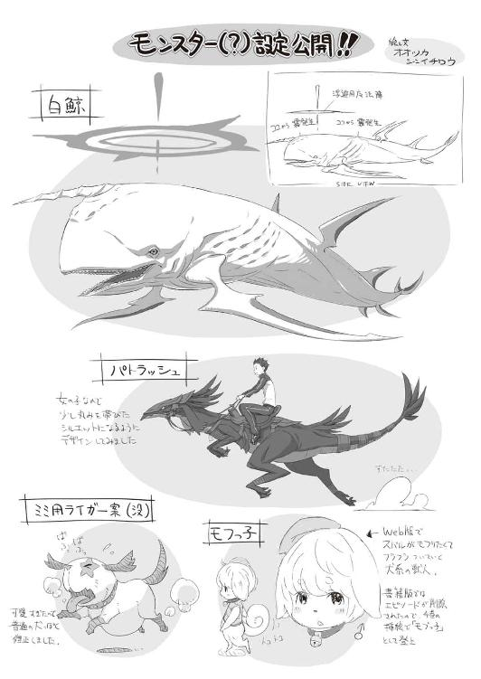
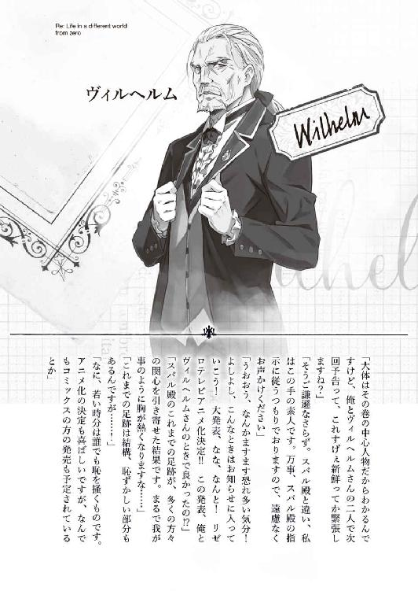
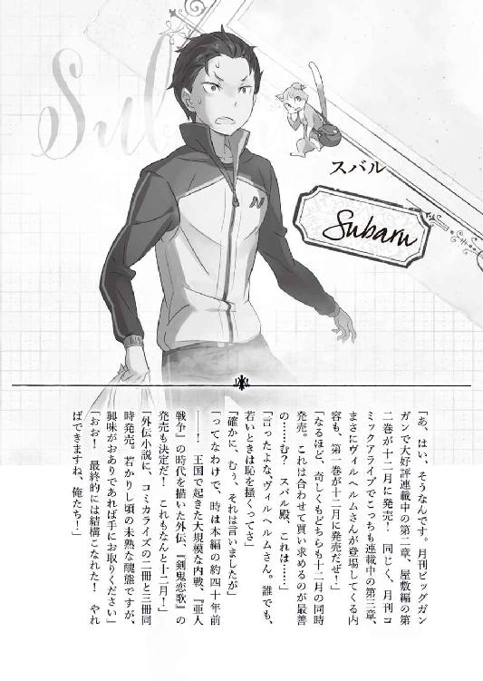
著者
長月達平（ながつき・たっぺい）
１９８７年生まれにして、１９９８年９月に人生六度目の交通事故。このほど、自作のアニメ化が決まって人生の絶頂期気分。ただ、調子に乗っているときほど事故に遭いやすい性格のため、そうならないように日頃注意して行動したい。その覚悟の矢先に車庫入れで自分の自転車を粉砕する。こういうのは心掛けと気持ちが大事。あと結果も大事。気を付けます。
小説投稿サイト「小説家になろう」にて、同タイトルの小説を投稿中。
ＵＲＬ：http://ncode.syosetu.com/n2267be/（２０１５年９月現在）
イラスト
大塚真一郎（おおつか・しんいちろう）
熊本出身のイラストレーター。ゲームを中心に小説の挿絵なども描いてます。代表作は「コンセプション」、「サモンナイトクラフトソード物語」など。
カバー・口絵・本文イラスト／大塚真一郎
装丁／草野剛
Ｒｅ：ゼロから始める異世界生活７
長月達平
平成27年9月30日 発行
(C) Tappei Nagatsuki 2015
本電子書籍は下記にもとづいて制作しました
ＭＦ文庫Ｊ『Ｒｅ：ゼロから始める異世界生活７』
平成27年9月30日初版第一刷発行
発行者 三坂泰二
発 行 株式会社ＫＡＤＯＫＡＷＡ
〒102-8177 東京都千代田区富士見2-13-3
0570-002-001（カスタマーサポートセンター）
年末年始を除く平日10：00～18：00まで
http://www.kadokawa.co.jp/